Kresy Północno-Wschodnie 2019, Kronika z wyjazdu
1 Uczestnicy wyjazdu
- Ania i Andrzej Dyczakowie
- Halina i Staś Grelowie
- Jagoda i Andrzej Kocujowie z Piotrusiem
- Małgosia Chwistek i Andrzej Oslislo
- Łucja Berlińska
- Ania Dąbrowska
- Danusia Gmiterek
- Halina Mażulis
- Róża Ziółkowska
- Basie:
- Bednarska,
- Wojtowicz
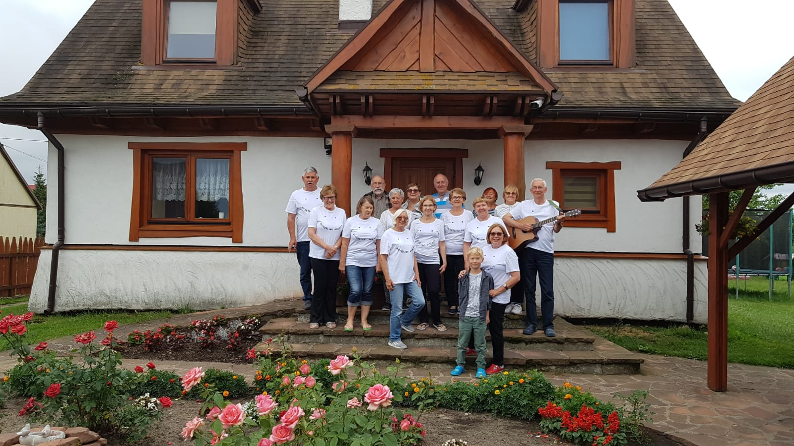
Miłośnicy polskiej ziemi.
2 Przebieg wyjazdu
2.1 Dzień pierwszy - 07.07.2019r.
Jadą 4 samochody:
I . Andrzeja Dyczaka, przewodnika grupy:
- Basia Bednarska
- Ania Dyczak
- Basia Wojtowicz
II. Staszka Greli:
- Halina Grela
- Danusia Gmiterek
- Róża Ziółkowska
III. Andrzeja Kocuja:
- Jagoda Kocuj
- Ania Dąbrowska
- Piotruś
IV. Andrzeja Oslislo:
- Małgosia Chwistek
- Łucja Berlińska
- Halina Mażulis
Część grupy spotyka się przy domu Dyczaków - ekipy: A.Dyczaka, A.Oslisly i A.Kocuja. Po zapakowaniu się samochody wyruszają na miejsce zbiórki na A1, MOP Dobieszowice Wsch., za węzłem Piekary Śląskie, gdzie czeka ekipa S. Greli. Już w komplecie jedziemy do I miejsca, które odwiedzimy - do arboretum w Rogowie. Arboretum położone jest ok. 1,5 km od trasy nr 72 Łódz – Rawa Mazowiecka, ok. 210 km od Gliwic.
2.1.1 ARBORETUM W ROGOWIE
Arboretum rogowskie należy do tzw. arboretów leśnych, czyli takich, których działalność jest związana w pewien określony sposób z leśnictwem. Od początku istnienia (1925 r.) podlega pod Wydział Leśny SGGW. 5 lipca 1919 r. Minister Rolnictwa i Dóbr Publicznych przekazał Szkole Głównej Gospodarstwa Wiejskiego część lasów nadleśnictwa Skierniewice do celów naukowych i badawczych. W 1925 r. prof. Edward Chodzicki założył pierwszą powierzchnię doświadczalną, na której posadził daglezję zieloną (Pseudotsuga menziesii). Dziś są to najwyższe w okolicy Rogowa drzewa (ponad 36 m wysokości). Przed wojną na terenie arboretum zakładano wyłącznie powierzchnie doświadczalne. Posadzono ok. 100 gatunków drzew obcego pochodzenia. Powierzchnia ogrodu wynosiła wtedy 61,58 ha. Jednak ze względu na brak stałego personelu rozwój arboretum w tym okresie był bardzo powolny. Dodatkowo po II wojnie światowej liczba gatunków zmalała do 51 z powodu braku opieki i dwóch bardzo mroźnych zim. W 1947 r. ogrodem zaopiekowała się Katedra Botaniki Leśnej Wydziału Leśnego SGGW. Zaczęto zakładać coraz to nowe poletka doświadczalne, szkółki, zakupiono nowy sprzęt, niezbędny do pielęgnacji drzewostanów. Nowe gatunki ściągnięto głównie z Arboretum w Kórniku. W 1951 roku kierownikiem arboretum został inż. Henryk Eder, który bez reszty oddał się modernizacji ogrodu. Sporządził mapy geodezyjne, wyznaczył sieć dróg, założył szkółkę, zbudował zaplecze gospodarcze i szklarnię – mnożarkę. Dzięki temu mógł powiększać kolekcje roślin w arboretum. W tym pierwszym okresie wielką pomoc okazywały stare ogrody botaniczne, a przede wszystkim arboretum kórnickie. To były nie tylko rośliny, nasiona, sadzonki, ale i cenne rady i konsultacje profesorów Stefana Białoboka, Kazimierza Browicza, Henryka Chylareckiego, a szczególnie profesora Władysława Bugały, który był wówczas dość częstym gościem w Rogowie, a inż. Eder często bywał w Kórniku. W 1953 r. przy bursie studenckiej wybudowano basen kąpielowy. Inżynier postanowił wykorzystać hałdy ziemi pozostałe po wykopaniu basenu pod budowę alpinarium. Poza tym podjął się założenia parku dendrologicznego w pobliżu bursy studenckiej i pracowni naukowych SGGW. Projekt owego parku był pracą dyplomową doc. Włodzimierza Senety, wykonaną w 1951 roku w Zakładzie Architektury Krajobrazu i Parkoznastwa SGGW pod kierownictwem inż. arch. Władysława Niemirskiego. Ze względów ekonomicznych Eder nie mógł w pełni wykorzystać założeń projektowych Senety. W parku znalazły się głównie rośliny ozdobne, tj. krzewuszki, żylistki, jaśminowce, tawuły, magnolie, jałowce, żywotniki. Zostały sprowadzone m.in. z Kórnika, Krakowa, Warszawy, Niemodlina, Berlina, Ottawy, Edynburga, Wageningen. Pod budowę ogrodu skalnego wykorzystano 1,5 ha gruntu rolnego, przylegającego do arboretum od strony zakładanego właśnie parku dendrologicznego. Eder zatrudnił kilkunastu tutejszych mieszkańców i rozpoczął gromadzenie kamieni granitowych, jeżdżąc po okolicznych wsiach. Zdobył także wapienie, dzięki czemu stworzył warunki do wzrostu roślinom wapniolubnym. Prace nad budową alpinarium trwały do 1960 r. W 1952 r. Eder wydał pierwszy katalog nasion (Index seminum). Zapoczątkował w ten sposób coroczną wymianę nasion z ponad 400 ogrodami botanicznymi i arboretami na całym świecie. Do dziś jest to podstawowe źródło pozyskiwania nowych gatunków drzew i krzewów. Poza tym od początku kierowania ogrodem prowadził bardzo skrupulatnie dokumentację kolekcji roślinnych i leśnych powierzchni doświadczalnych. W 1966 r. inż. Eder odszedł na emeryturę, a jego długoletnim następcą został dr hab. Jerzy Tumiłowicz, pracownik Arboretum od 1959 roku. Od 2002 roku obowiązki kierownika pełni mgr inż. Piotr Banaszczak.
2.1.1.1 Kolekcje roślin drzewiastych
Jest to podstawowa i największa kolekcja roślin w Arboretum. Obejmuje drzewa, krzewy i krzewinki rosnące i zimujące w gruncie na terenie ogrodu pojedynczo i w grupach. Kolekcja ma charakter uniwersalny. Do uprawy wprowadzana jest większość rodzajów i gatunków roślin, jakie mogą rosnąć w strefie klimatycznej Arboretum. Kolekcje sadzone są w układzie ekologicznym, tzn. według ich wymagań w stosunku do nasłonecznienia, osłony przed wiatrami, wilgotności, typu gleby itp. Nie ma podziału kolekcji na poszczególne działy geograficzne, systematyczne, morfologiczne itp.
2.1.1.2 Leśne powierzchnie doświadczalne
Leśne powierzchnie doświadczalne to drzewostany z obcymi gatunkami drzew, założone w celach doświadczalnych. Posadzone tu drzewa poddaje się badaniom i obserwacjom, które mają na celu sprawdzenie wzrostu, zdrowotności i produkcyjności poszczególnych gatunków.
2.1.1.3 Kolekcje szklarniowe
Arboretum posiada dwie szklarnie o łącznym obszarze 0,04 ha. Ze względu na bardzo ograniczoną powierzchnię szklarni kolekcje, które się tam znajdują, nie są udostępnione do zwiedzania. Kolekcje szklarniowe stanowią uzupełnienie kolekcji gruntowych i obejmują głównie rośliny ze strefy subtropikalnej, czyli takie, które nie miałyby szans przetrwać w gruncie. Należą do nich m.in.: sekwoja wieczniezielona (Seqoia sempervirens), dąb korkowy (Quercus suber), klon wieczniezielony (Acer sempervirens), magnolia wielkokwiatowa (Magnolia grandiflora), Michelia figo (roślina z rodziny magnoliowatych), Afrocarpus manni, Cupressus torulosa.
2.1.1.4 Alpinarium
Alpinarium założył w latach 50. XX wieku ówczesny kierownik Arboretum inż. Henryk Eder. Jest to najmniejszy dział ogrodu, zajmuje powierzchnię ok. 1,4 ha, z czego część skalna to 15 arów. Oprócz wyniesionych na 2 m ponad poziom gruntu skalniaków, założono tu ciąg strumyków, kilka oczek wodnych i 5-arowy staw z wyspą, na której gnieżdżą się kaczki krzyżówki oraz liczne zaskrońce. W rogowskim Arboretum można obejrzeć ponad 400 gatunków i odmian roślin, pochodzących z gór całego świata. W większości są to byliny, ale nie tylko. Rosną tu także krzewy i drzewa terenów górzystych, np. majestatyczne świerki serbskie (Picea omorika), kształtne limby (Pinus cembra), srebrzyste jodły kalifornijskie (Abies concolor).
 Alipnarium
Alipnarium
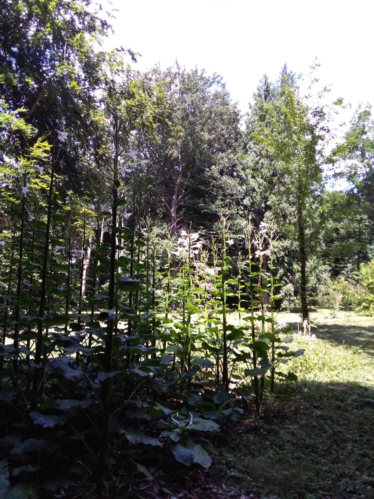 Lilie Himalajskie
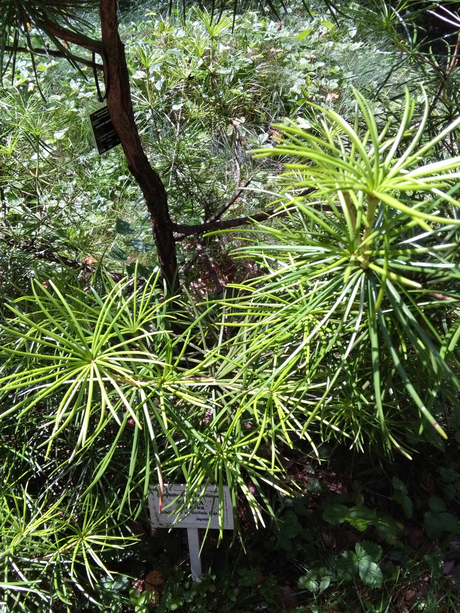 Sośnica Japońska
Źródło: https://pl.wikipedia.org/wiki/Arboretum_w_Rogowie
Ze zwiedzania Arboretmu zrezygnowała ekipa A. Kocuja; pojechała bezpośrednio do Augustowa, miejsca naszego pierwszego zakwaterowania. Wieczorem na miejsce dotarliśmy już wszyscy. Naszą I bazą wypadową był Ośrodek Wypoczynkowy "AUGUST" Na miejscu okazało się, że to co zastaliśmy odbiega od oferty złożonej przez właściciela ośrodka. Po negocjacjach sprawę zakwaterowania udało się rozwiązać w dniu następnym.
2.2 Dzień drugi - 08.07.2019 r.
2.2.1 AUGUSTÓW
Jedziemy do centrum Augustowa. Na rynku, w Biurze Podróży "ELA- TRAVEL" (Rynek Zygmunta Starego 15/2,16-300 Augustów), załatwiamy formalności związane z planowanymi wycieczkami (Grodno,Druskienniki,Suwalszczyzna,Wilno-Troki).
W oczekiwaniu na rejs gondolą zwiedzamy rynek miasta i jego okolice.
2.2.1.1 Rynek Zygmunta Augusta
Rynek Zygmunta Augusta stanowi centralny punkt miasta, który został wytyczony w 1550 r. zapewne przez budowniczego twierdz królewskich Joba Praetfuessa. W sercu rynku znajduje się park założony w 1847 r., niegdyś nazywany Ogrodem Saskim. Kamienice wokół rynku pochodzą głównie z przełomu XIX i XX wieku. W centrum parku znajduje się kolumna Zygmunta II Augusta oraz fontanna. Kolumna króla Zygmunta II Augusta powstała w roku 2007, z okazji jubileuszu 450–lecia nadania praw miejskich. Wybudowano ją z inicjatywy mieszkańców jako podziękowanie założycielowi miasta. Część z nas odwiedza stojąca niedaleko rynku Bazylikę.
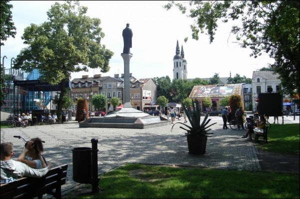
Augustów Rynek, źródło: http://www.s-energy.pro/images/pamatniki/3929/3929_b1260797836.jpg
2.2.1.2 Bazylika Mniejsza Najświętszego Serca Jezusowego
Bazylika Mniejsza Najświętszego Serca Jezusowego zbudowana z cegły w stylu neoromańskim w latach 1905 – 1911. Budowniczym kościoła był ks. Wincenty Nowicki (proboszcz w latach 1899-1924), a projektantem Adam Piotrowski. W trójnawowym kościele znajduje się pięć ołtarzy, wszystkie wykonane w dębie. W ołtarzu głównym znajduje się obraz Matki Boskiej Częstochowskiej, zasłaniany obrazem Serca Jezusowego. Ołtarze zostały wykonane w latach dwudziestych. Zniszczony w czasie II wojny światowej kościół odbudował ks. Wojciech Chojnowski, proboszcz parafii w latach 1945-1947. Obok ołtarza św. Antoniego stanął ołtarzyk Miłosierdzia Bożego z relikwiami św. Faustyny Kowalskiej. W 2001 roku świątyni został nadany tytuł Bazyliki Mniejszej.
2.2.1.3 Historia Augustowa
Augustów leży w w północno-wschodniej Polsce, w województwie podlaskim, siedziba powiatu augustowskiego i gminy wiejskiej Augustów. Do końca XIII wieku tereny dzisiejszego Augustowa należały do ziem zamieszkiwanych przez plemię Jaćwingów, pokonanych ostatecznie w 1283 roku przez zakon krzyżacki. Według legendy Augustów zawdzięcza swoje powstanie pierwszej schadzce Zygmunta Augusta i Barbary Radziwiłłówny, dla upamiętnienia której, król założył w tym miejscu miasto. W istocie pierwsza pisana wzmianka o osadzie nad Nettą pochodzi z 1496 roku. Augustów prawa miejskie magdeburskie otrzymał dopiero 17 maja 1557 roku od króla Zygmunta Augusta. Po kilku latach prężnego rozwoju nastąpiła seria działań wojennych, doprowadzająca miasto do ruiny. Wojska, oprócz zniszczeń, przyniosły zarazę (1710), która zdziesiątkowała miejscową ludność. W 1795 roku miasto zajęli Prusacy, a w latach 1807 i 1812 wojska napoleońskie. Lekką poprawę rozwoju przyniósł XIX wiek. Po Kongresie wiedeńskim w roku 1815 Augustów znalazł się w granicach Królestwa Polskiego (Kongresowego). Został stolicą nowo utworzonego województwa augustowskiego, a od 1837 roku guberni augustowskiej. Projekty rozbudowy Augustowa w stylu klasycystycznym opracował Henryk Marconi. W roku 1825 pod kierunkiem Ignacego Prądzyńskiego rozpoczęto budowę Kanału Augustowskiego. Rozwój Augustowa został przerwany przez wybuch powstania listopadowego. Po powstaniu nie zrealizowano planów rozbudowy miasta. Kanał Augustowski ukończono w 1839 roku, jednak nie zyskał on planowanego znaczenia gospodarczego. W roku 1899, w związku z budową koszar carskich, Augustów uzyskał połączenia kolejowe. Zniszczenia przyniosły miastu I i II wojna światowa. W końcu września 1939 okupacyjne władze sowieckie zniszczyły pomnik Piłsudskiego, a na jego miejsce postawiły obelisk ku czci Stalina; zbudowały też w mieście pomnik Lenina. Po zajęciu Augustowa przez Niemców miasto w latach 1941–1944 znajdowało się w granicach Bezirk Bialystok. W sierpniu 1941 Niemcy utworzyli w Augustowie getto dla ludności żydowskiej. Zostało ono zlikwidowane 2 listopada 1942. W lipcu 1945 roku Armia Czerwona, NKWD, Smiersz wspólnie z UB przeprowadziły tzw. obławę augustowską w celu wyłapania żołnierzy podziemia niepodległościowego. Sowieci utworzyli w okolicy sieć obozów filtracyjnych, gdzie przetrzymywali Polaków pod gołym niebem, skrępowanych drutem kolczastym w dołach zalanych wodą. Od połowy lat dwudziestych XX wieku Augustów stał się popularnym letniskiem. Od 1993 roku miasto posiada status uzdrowiska (bogate złoża borowiny, w okolicy źródła wody mineralne).
2.2.1.4 Kanał Augustowski
Do najbardziej cennych i popularnych zabytków polskiej kultury technicznej należy Kanał Augustowski. Jest kanałem żeglownym, podziałowym, który łączy dopływ Narwi i Biebrzę z Niemnem. Wykorzystuje obniżenie rynnowe, tworzące pasmo jezior augustowskich oraz doliny rzek - Netty i Czarnej Hańczy. Ma długość 101,3 km, a w Polsce 80 km - z czego 77,5 utrzymanych w stanie pełnej spławności. Połączenie wodne Wisły z Niemnem stało się konieczne z powodu restrykcji gospodarczych zamykających dostęp dla handlu polskiego do Bałtyku. Z inicjatywą stworzenia takiego połączenia wyszedł minister skarbu - Franciszek Ksawery Drucki-Lubecki w 1822 r. Projekt obejmował okrężną arterię wodną, omijającą pruskie terytoria, łączącą centrum Kongresówki z portami łotewskimi. Dwie niezależne ekipy badawcze, wysłane w teren dokonały potrzebnych pomiarów i realności wykonania tego projektu. Na ich podstawie w maju 1824 roku car Aleksander I podjął decyzję o rozpoczęciu budowy kanału przez stronę polską. Do 1831 roku budową zajmowały się struktury wojskowe podległe dyrektorowi Korpusu Inżynierów. Po klęsce powstania inwestycję przejęła instancja cywilna - Zarząd Komunikacji Lądowych i Wodnych. Koszt kanału przekroczył czternaście milionów ówczesnych złotych polskich. Z budową kanału związana jest plejada najlepszych w tym czasie polskich inżynierów. Między innymi generała Prądzyńskiego, generała Chrzanowskiego, podpułkownika P. Lelewela, A. Szultza, W.Kolberga, J.Spornego, K. Kołodki oraz innych. Kanał Augustowski pomimo tak wspaniałych planów nie został ukończony i stracił swą rangę. Stało się tak z powodu wycofania Prus z wojny celnej w 1825 r., a także rozwinięcia sieci połączeń kolejowych. Stał się za to trasą lokalną, służącą do spławu drewna. Ponieważ miał podrzędne znaczenia, prowadzono tylko nikłe modernizacje i ulepszenia. Dlatego też przetrwał do czasów współczesnych w prawie niezmienionej formie. Ogólnie szacując na linię wodną kanału składa się 44,85 km sztucznych przekopów, 35,05 km uregulowanych koryt rzecznych i 21,3 km jezior. Kanał Augustowski posiada 18 śluz murowanych i 23 upusty, z czego 14 śluz znajdujących się w granicach Polski i aż dziewięć posiadających oryginalną konstrukcję XIX - wieczną. Kanał Augustowski pokonuje ogółem różnicę poziomów równą: 54,04 m. Jego zapotrzebowanie na wodę zaspokaja jezioro Serwy. W obrębie miasta Augustów są śluzy: Augustów, Przewięź, Swoboda oraz współtowarzyszący Kanał Bystry z jazem.
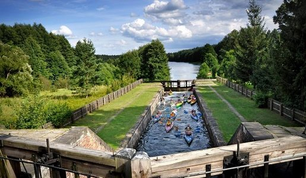
Kanał Augustowski, źródło: https://www.dzieckowpodrozy.pl/wp-content/uploads/kana%C5%82-augustowski-rodzinne-atrakcje-dla-dzieci-opinie-515x300.jpg
2.2.1.5 Inne zabytki
Z ciekawszych obiektów wpisanych do rejestru zabytków z terenu Augustowa można jeszcze wymienić:
- Starą Pocztę (1829), klasycystyczny kompleks dawnej poczty projektu H. Marconiego,
- Budynek Zarządu Portu (1829), obecnie siedziba Działu Historii Kanału Augustowskiego,
- Budynek Zarządu Wodnego (1903),
- Oficerski Yacht Club (1935), modernistyczny obiekt hotelowy,
- Dom Turysty (1939), modernistyczny obiekt hotelowy, zaprojektowany przez Macieja Nowickiego, współtwórcę gmachu ONZ w Nowym Yorku, obecnie Zajazd Hetman,
- Kamienica przy Rynku Zygmunta Augusta 28 (1800–1801) – jeden z najstarszych w pełni zachowanych budynków w Augustowie (w grudniu 1812 roku nocował w niej Napoleon Bonaparte)
- Dworzec kolejowy (1897)
- Kościół MB Częstochowskiej (koniec XIX w), zbudowany jako cerkiew garnizonowa,
- Cmentarz parafialny (pocz, XIX w), najstarszy nagrobek pochodzi z 1839 r . ; zachowało się kilka żeliwnych nagrobków z poł, XIX w, odlanych w Hucie Sztabińskiej oraz drewniana Kaplica Grobowa Truszkowskich (1832 r).
Źródło: https://pl.wikipedia.org/wiki/August%C3%B3w, Źródło: https://suwalszczyzna.com.pl/info/miejsca/kanal-augustowski
2.2.2 REJS GONDOLAMI
Ok. godz 13 spotkaliśmy się w porcie i 2 gondolami popłyneliśmy w rejs trasą Jezioro Necko- Jezioro Rospuda- rzeka Rozpuda; po zawróceni na rzece wróciliśmy do portu przez jezioro Rospuda i Necko .Trasa rejsu to wyjątkowo malowniczy i atrakcyjny szlak wodny W czasie rejsu spotkała nas ulewa i dosyć mocno wiało. Nie przeszkodziło to nam w podziwianiu piękna przyrody.
2.2.2.1 Necko
Necko jest zbiornikiem wodnym 2 klasy; należy do typu polodowcowych jezior rynnowych, z dobrze rozwiniętą linię brzegową; w większości (70%) porośniętą lasem, z licznymi piaszczystymi plażami. Na północy łączy się z jeziorem Rospuda Augustowska (traktowanym czasami jako odnoga Necka), na północy do jeziora Rospuda wpada rzeka Rospuda. Na południu zaś z Necka wypływa rzeka Netta, przechodząca następnie w Kanał Augustowski. Nad jeziorem położone są też części Augustowa: Borki, Zarzecze i Klonownica. Jezioro znajduje się na Obszarze Chronionego Krajobrazu "Puszcza i Jeziora Augustowskie". Necko reprezentuje sielawowy typ jeziora. Gatunki ryb żyjące w jeziorze to: szczupak pospolity, okoń, płoć, leszcz, sielawa, lin. Można również natrafić na węgorza europejskiego, miętusa pospolitego, wzdręgę, sieję, troć, ciernika. Występują takie gatunki ptaków, jak łabędź niemy oraz kaczka krzyżówka. Z bezkręgowców występujących na terenie jeziora wymienić można raka błotnego, żyworódkę pospolitą czy racicznicę zmienną. Florę jeziora reprezentuje wiele gatunków roślin, w tym: rogatek sztywny, grążel żółty, trzcina zwyczajna.
Źródło: https://pl.wikipedia.org/wiki/Necko
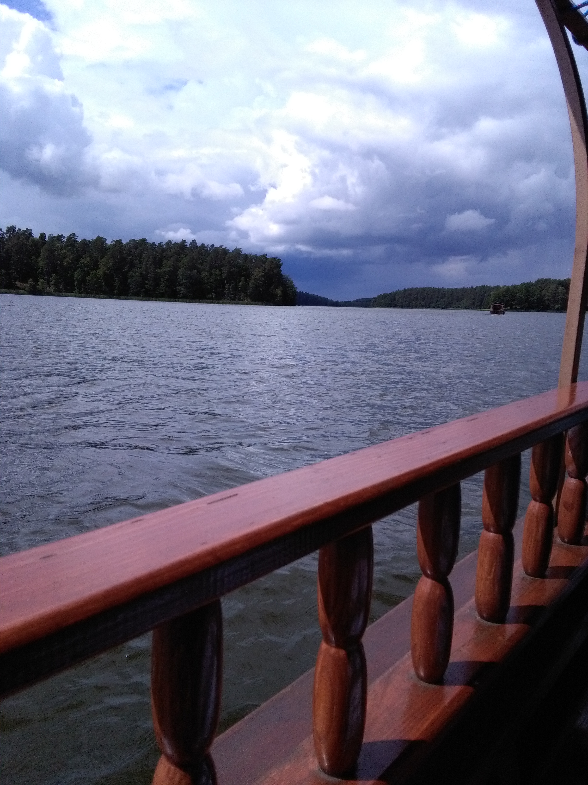 Rejs gondolami po Rospudzie
Po zakończeniu rejsu wsiedliśmy do samochodów i pojechaliśmy do Dowspudy.
2.2.3 DOWSPUDA
Główną atrakcją turystyczną Dowspudy są ruiny neogotyckiego pałacu Paców, wybudowanego w latach 1820–1827 staraniem Ludwika Michała Paca, generała wojsk polskich i napoleońskich, według projektu włoskiego architekta Piotra Bosio. Od roku 1823 prace budowlane po przerwie kontynuowano pod kierunkiem innego włoskiego architekta Henryka Marconiego.
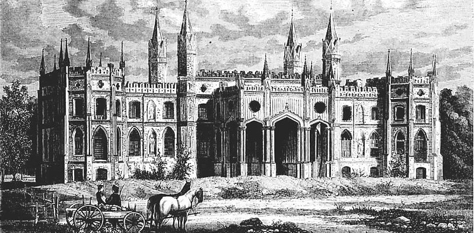
Rycina Pałacu Paca, źródło: http://info.elk.pl/wp-content/uploads/2018/11/pa%C5%82ac-pacypa%C5%82ac-pacapa%C5%82ac-dowspudapa%C5%82ace-blisko-e%C5%82ku-zamki-e%C5%82krafa%C5%82-kara%C5%9B.jpg
Dwukondygnacyjna budowla składała się z korpusu głównego, w którego narożnikach umieszczono cztery smukłe wieżyczki, oraz dwóch węższych skrzydeł bocznych zakończonych ośmiobocznymi pawilonami. Nad korpusem głównym wznosiła się nadbudówka zwieńczona attyką i pinaklami, a jego przednią część zdobił mocno wysunięty portyk pełniący rolę podjazdu. W niszach na frontowej elewacji stały prawdopodobnie rzeźby królów polskich autorstwa włoskiego rzeźbiarza Carla Aurelli. Trudno odtworzyć wygląd wnętrz pałacu, ale z dziewiętnastowiecznych opisów wiadomo, że na parterze znajdowały się: kaplica, salony, archiwum i biblioteka oraz zdobiona sztukaterią jadalnia, a na piętrze – mieszkanie właściciela i jego rodziny. Prawe skrzydło boczne mieściło zbiory militariów, a lewe – galerię malarstwa i oranżerię. Pomieszczenia te były bogato zdobione polichromią i freskami, zapewne autorstwa włoskich malarzy Mikołaja de Angelis oraz Giovanniego Battisty Carellego. Piwnice również miały dwie kondygnacje – w górnej znajdowały się łazienki urządzone według wzorów starożytnych, mieszkania dla służby, kuchnia i inne pomieszczenia gospodarcze; w dolnej – studnia. Pałac otoczony był parkiem zaprojektowanym przez angielskiego ogrodnika Johna Heitona. Niesłychanie wystawny i kosztowny pałac dowodził bogactwa fundatora i przeszedł do skarbnicy polskich powiedzonek w postaci: Wart Pac pałaca, a pałac Paca. Po powstaniu listopadowym Ludwik Pac wyemigrował, a jego dobra zostały skonfiskowane przez rząd carski. W czasie powstania część wyposażenia i dzieł sztuki ukryto w kościołach w Raczkach i Janówce; resztę oraz to, co udało się wykryć władzom carskim, sprzedano na publicznej licytacji w latach 1834–1836. Kolejni właściciele i dzierżawcy nie dbali o utrzymanie dóbr w należytym stanie, pałac więc niszczał i ostatecznie został rozebrany w 1867 roku. Zachował się jedynie portyk oraz jedna wieża, zwana "bocianią", która według miejscowej ludności ocalała wyłącznie dlatego, że było na niej bocianie gniazdo. Ruiny pałacu z 21-hektarową działką w roku 2016 zostały sprzedane przez władze powiatu za nieco ponad 1 mln zł osobie prywatnej, która deklaruje odbudowę pałacu z przeznaczeniem na cele hotelowe. W latach 1815–1821 hrabia Pac sprowadził do swoich włości około 500-osobową grupę farmerów szkockich i angielskich, aby upowszechniali wśród miejscowej ludności nowoczesne techniki rolnicze i rzemieślnicze. Przekonali miejscowych chłopów m.in. do odejścia od archaicznego systemu trójpolówki na korzyść płodozmianu, upowszechnili uprawę ziemniaków i przechowywania ich w kopcach oraz hodowlę koni i owiec. Pod kierunkiem szkockich mechaników uruchomiono też w 1816 w Dowspudzie wytwórnię machin, produkującą młockarnie poruszane kieratem lub kołem wodnym, siewniki, pługi, opielacze, młynki do wyrobu kasz i mąki itp. Produkowano także wyposażenie browaru, gorzelni, garbarni, krochmalni, olejarni. Wielu z farmerów pozostało w okolicy nawet po konfiskacie majątku Paca, mimo stopniowego upadku posiadłości dowspudzkich. Ich potomkowie żyją tu do dnia dzisiejszego.
Źródło: https://pl.wikipedia.org/wiki/Dowspuda
Swoją dawną świetność odzyskał budynek kordegardy (budynek bramny), będący częścią kompleksu pałacowo-parkowego. Mieści się w nim Centrum Obsługi Turysty z bazą noclegową. . Ciekawostką jest prezentowana w kordegardzie makieta pałacu Paca z czasów jego świetności. W kordegardzie zjedliśmy obiad. Z powodu pogody (lało), podjechaliśmy pod ruiny pałacu i jedynie z samochodów oglądaliśmy to co zostało z obiektu. Zrezygnowaliśmy ze spaceru po zabytkowym parku. Wróciliśmy do Augustowa.
2.3 Dzień trzeci – 09.07.2019 r,
Ze względu na pogodę Andrzej D. podejmuje decyzję o rezygnacji ze zwiedzenia Biebrzańskiego Parku Narodowego. Będziemy realizować plan alternatywny. Jedziemy do Sztabina.
2.3.1 SZTABIN
2.3.1.1 Historia
Tereny obecnej Gminy Sztabin zamieszkiwali niegdyś Jaćwingowie. W 1506 roku król Aleksander Jagiellończyk nadał część tych ziem rodowi Chreptowiczów. Wieś założył Adam Chreptowicz przed 1598 rokiem, przy przeprawie rzecznej, na trakcie z Augustowa do Knyszyna. Na początku istnienia przez ponad półtora wieku nosiła nazwę Osinki. W 1627 r. z fundacji Adama Chreptowicza zbudowano tu cerkiew unicką, która stanęła w miejscu kaplicy prawosławnej, ufundowanej w 1513 roku przez Teodora Chreptowicza. Około 1656 roku cerkiew tę przemianowano na kościół rzymskokatolicki. Nazwa Sztabin została wprowadzona w 1760 roku przez Joachima Chreptowicza, kanclerza Wielkiego Księstwa Litewskiego. Wyznaczył on trójkątny rynek i sieć ulic. Osada stała się głównym centrum handlowym dóbr krasnoborskich (Chreptowiczów, a później Brzostowskich). Pod koniec XVII wieku zaczęła przekształcać się w ośrodek miejski. W 1766 roku Sztabin uzyskał przywilej królewski na targi i jarmarki. Miejscowość jest znana głównie ze względu na eksperymenty społeczne i gospodarcze hrabiego Karola Brzostowskiego. W latach dwudziestych XIX wieku założył on tzw. rzeczpospolitą sztabińską. Tej szczególnej i mało znanej postaci należy poświęcić więcej miejsca.
2.3.1.2 Karol Brzostowski
Karol Brzostowski był synem Michała Hieronima i Ewy Chreptowiczówny, Urodził się 11 lutego 1796 roku w Michaliszkach na Wileńszczyźnie. Kiedy miał 10 lat zmarł mu ojciec, a kilka lat później matka. Po ojcu odziedziczył dobra na Litwie: Michaliszki, Czechy, i Markuny oraz prawo do dóbr starostwa bystrzyckiego. W spadku po matce otrzymał dobra sztabińskie oraz pałac w Warszawie. Uczęszczał do szkół w Wilnie i we Francji. Opanował biegle języki: francuski, niemiecki i łaciński. Od młodości zdradzał niepospolite talenty w zakresie nauk ścisłych, szczególnie mechaniki i fizyki. Próbował uporządkować sprawy majątkowe, a szczególnie olbrzymie długi po rodzicach. Po rozwiązaniu najważniejszych trudności w majątkach litewskich, osiadł Brzostowski w 1819 roku na stałe w dobrach sztabińskich. Za miejsce pobytu obrał dworek w Cisowie, skąd rozpoczął uporczywą pracę i walkę z wierzycielami. To co uderza w K. Brzostowskim to niezwykła siła charakteru, możliwość obycia się bez luksusu mimo arystokratycznego pochodzenia i chęć podniesienia z upadku dóbr ojczystych. Brzostowski uważał, że każdy człowiek musi sam na siebie zarobić, sam sobie wystarczyć, gdyż w przeciwnym razie jest pasożytem społecznym. Brzostowski oddał się całkowicie pracy nad rozwojem Rzeczypospolitej Sztabińskiej. Inwestował, reformował, rozbudowywał przemysł i rolnictwo, wychowywał swych poddanych do samodzielności. Uwolnił chłopów od pańszczyzny, założył szkołę i wprowadził w swoich dobrach obowiązkowe bezpłatne nauczanie, unowocześnił rolnictwo (wprowadził płodozmian i nowe narzędzia), wybudował szpital, do którego sprowadził lekarza, wprowadził kodeks karny, założył kasę oszczędnościową i pożyczkową. Wybudował hutę szkła, cegielnię, tartak, fabrykę wyrobów żeliwnych (wybudował piec do przetapiania rudy darniowej), doprowadzając upadający majątek do rozkwitu. Kiedy w 1824 roku rząd Królestwa postanowił zbudować Kanał Augustowski łączący dorzecze Niemna i Narwi aby ominąć pruską blokadę celną, Brzostowski wykorzystał tę szansę. Korzystając z tego, iż w pobliżu nie było fabryk żelaza, a cena za dostawy bardzo wysoka, Brzostowski wziął na siebie dostarczenie odlewów żelaznych, potrzebnych do budowy śluz kanałowych. Hrabia był wymagający oraz surowo karał, lecz wspierał włościan w razie potrzeby. Sam będąc człowiekiem światłym, dużą wagę przywiązywał do wykształcenia i szkolnictwa. W 1860 roku większość mieszkańców umiała czytać i pisać, co w czasie kiedy w Królestwie Polskim było 79,2% analfabetów jest rzeczą imponującą. Hrabia Karol Brzostowski chorował na serce. W grudniu 1853 roku wyjechał do Francji w celu przeprowadzenia kuracji u paryskich specjalistów. Umarł w Paryżu 25 lipca 1854 roku w domu przy ul. Boulevard des Italiens, mając 59 lat. Pochowano go początkowo na cmentarzu Montmartre, później zgodnie z wolą zapisaną w testamencie podróżnym, jego ciało przeniesiono na cmentarz Montmorency. Po śmierci (1854) przekazał swoje dobra chłopom w wieczystą dzierżawę, jednak władze rosyjskie unieważniły jego testament. Sztabin powoli tracił na znaczeniu i w 1897 został pozbawiony praw miejskich. W okresie II wojny światowej (1 maja 1943) oddział AK odbił Sztabin z rąk niemieckich na 6 godzin. Okres powojenny był dla Sztabina tragiczny. Na terenie gminy w tzw. obławie lipcowej w 1945 r aresztowano i wywieziono 126 osób. Nadal działały zbrojne grupy partyzanckie, które przetrwały do początku lat 50.
Źródło: https://pl.wikipedia.org/wiki/Sztabin
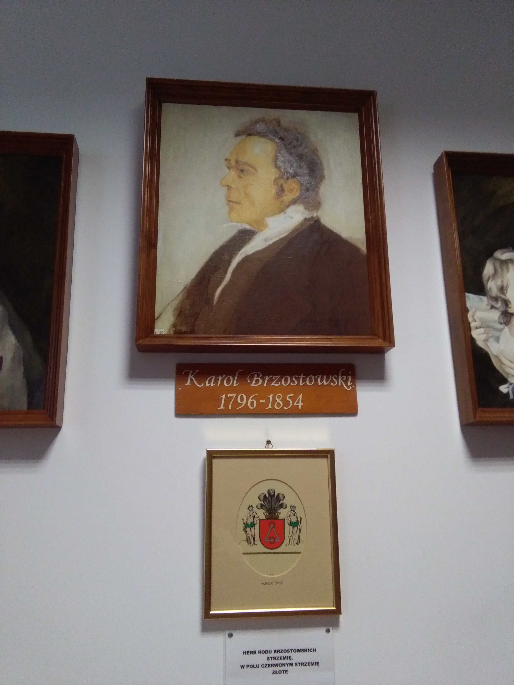 Karol Brzostowski
Kolejnym naszym przystankiem jest Suchowola
2.3.2 SUCHOWOLA
Założona jako wieś królewska w XVI w. w czasie zasiedlania królewskiej Puszczy Nowodworskiej. Suchowola rozwijała się jako miasto przy szlaku handlowym z Mazowsza do Grodna. W wiekach XVII i XVIII rozwinięty był handel zbożem i bydłem oraz końmi. Na rozwój miasta wpłynęli Tatarzy zajmujący się wyprawianiem skór i Żydzi zajmujący się handlem i rzemiosłem. W 1777 Suchowola otrzymała prawa miejskie, odebrane w 1950. 1 stycznia 1997 ponownie nadano jej status miasta. W 2012 r. miasto liczyło 2259 mieszkańców. W 1775 kartograf i astronom królewski Szymon Sobiekrajski określił Suchowolę jako miejsce, gdzie krzyżują się linie łączące najdalsze punkty Europy. Od tej pory Suchowola uważana jest za geometryczny środek Europy. W ryneczku ustawiono głaz oraz tablicę symbolizującą ten fakt.
 Obelisk, geometryczny środek Europy.
Obelisk, geometryczny środek Europy.
Jesienią 1941 Niemcy utworzyli w Suchowoli getto dla ludności żydowskiej . Ogółem przez getto przeszło ok. 5 tys. osób. 2 listopada 1942 zostało ono zlikwidowane, a jego mieszkańców wywieziono do obozu przejściowego w Kiełbasinie pod Grodnem. Zginęli w obozie zagłady w Treblince. Spod Suchowoli (wieś Okopy) pochodził ksiądz Jerzy Popiełuszko. Uczęszczał do Szkoły Podstawowej i Liceum Ogólnokształcącego w Suchowoli. Pomnik Jerzego Popiełuszki stoi na ryneczku.
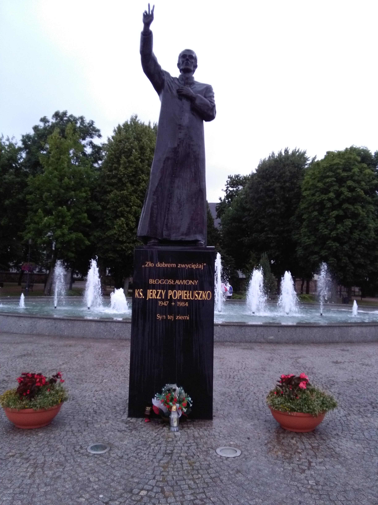 Pomnik Jerzego Popiełuszki
Źródło: https://pl.wikipedia.org/wiki/Suchowola
Pogoda nie była zbyt zachęcająca. Po spacerku po parkowym ryneczku Suchowoli, pojechaliśmy do Goniądza na obiad.
2.3.3 GONIĄDZ
Historia miasteczka sięga 1358 roku. Obecnie Goniądz jest siedzibą Urzędu Miasta i Gminy. Administracyjnie przynależny jest Województwu Podlaskiemu i Powiatowi Monieckiemu. Jest to dwutysięczne, typowo rolnicze miasteczko. Blisko 60% powierzchni gminy leży na terenie Biebrzańskiego Parku Narodowego. Wjeżdżając do miasta od strony Moniek, na wzgórzu wznosi się cmentarz wraz z neogotycką kaplicą z 1907 roku. Kaplica cmentarna pod wezwaniem Św. Ducha mieści się w szczytowej części cmentarza. We wnętrzu kaplica jest pusta, brak wyposażenia i dekoracji. Z cmentarza możemy podziwiać przepiękną panoramę miasta Goniądz, z której zauważalnym punktem jest kaplica usytuowana na skarpie. Stoi na terenie dawnego cmentarza szpitalnego. Kaplica pod wezwaniem Św. Floriana pochodzi z 1864 roku. Na jej stropie znajduje się wizerunek świętego Floriana. Wewnątrz można zobaczyć duży, zabytkowy krucyfiks Jezusa Ukrzyżowanego. Po obu jego stronach namalowane są postacie świętych. Podjeżdżając kilka metrów dalej, po prawej stronie stoi Młyn wodny „Dołek”. Zbudowany w połowie XIX wieku, pełnił funkcję młyna gospodarczego. Pracował do II wojny światowej, ale w czasie działań wojennych uległ dewastacji. Zlokalizowany jest nad rzeczką Czarna Struga – jednym z dopływów Biebrzy. Nieopodal na wzniesieniu, stoi kościół parafialny pod wezwaniem św. Agnieszki. Kościół zbudowany w latach 1922 – 1924 w stylu neobarokowym. Świątynia trójnawowa, bazylikowa z transpetem. Większość terenów tego malowniczo położonego na wysokiej skarpie miasteczka jest pod ścisłą ochroną Biebrzańskiego Parku Narodowego.
Okolica charakteryzuje się:
- wiosennymi rozlewiskami, które tworzą niespotykany krajobraz,
- ptasim rajem, który przyciąga nad Biebrzę ornitologów z całego świata,
- bogatym światem roślin objętych ochroną, jedną z licznych perełek są żółte storczyki, które latem przyozdabiają bagienne łąki,
- królestwem łosia, któremu udało się przetrwać w rozległym i niedostępnym dla ludzi Rezerwacie Czerwone Bagno,
- bagnami Biebrzańskimi – udostępnione są szlaki piesze, rowerowe i wodne,
- tradycyjnym rolnictwem i rękodziełem ludowym przekazywanym z dziada pradziada,
- Carską Twierdzą Osowiec, której zadaniem była obrona przed ewentualnym atakiem ze strony wojsk niemieckich z Prus Wschodnich.
Źródło: http://atrakcjepodlasia.pl/atrakcje-turystyczne/goniadz-opis-miejscowosci/
2.3.3.1 Dwór Bartla
Docieramy do „ DWÓRU BARTLA” – kompleksu restauracyjnego nad bagnami biebrzańskimi. „Ośrodek Bartlowizna i Dwór Bartla położony jest w najczystszym rejonie Polski - znak promocyjny to Zielone Płuca Polski. Położenie restauracji, pośród malowniczych biebrzańskich krajobrazów i unikalny ludowy wystrój zapewniąją ( zdaniem właścicieli) doskonałą oprawę dla duszy i oka przy smakowaniu specjałów smakowitej podlaskiej kuchni. Wszystkie potrawy są przygotowywane z ekologicznych produktów najwyższej jakości. Wyroby wędliniarskie z Bartlowizny w 2011r. zostały uhonorowane prestiżowym Godlem Teraz Polska. Wyjątkowe, stylizowane ławy, stoły i ręcznie rzeźbione drzwi, przenoszą w okres secesji. Bogata wystawa antyków z tego okresu – motocykle, karoce, bryczki, zegary, zwierzęta z całego świata – to kawałek historii miejsca i czasów. Dla podkreślenia miejsca i Biebrzy w środku zostało umieszczono oczko wodne z rybami i kaskadą, a kto się nasyci historią może skorzystać z tarasu nad wodą z widokiem na Biebrzę – dziką i nieokiełznaną przyrodę. Autorem projektu i całej koncepcji jest mgr inż. Henryk Bartlewski, który dzięki podróżom po całym świecie pokazuje kulturę, zwyczaje, wyrafinowane menu w wyjątkowej niepowtarzalnej architekturze.”
Źródło: Oferta reklamowa właścicieli ośrodka
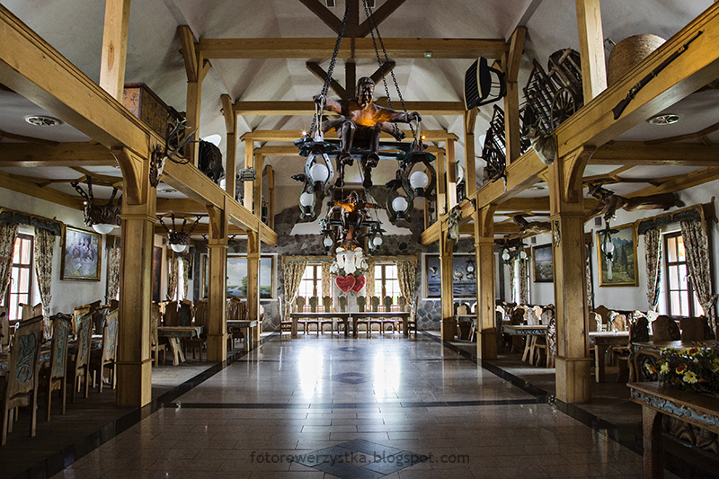
Wnętrze Dworu Bartla, Żródło: https://4.bp.blogspot.com/-N-I-HpnjMxg/WQIPwM5PGaI/AAAAAAAAQjI/WmDN78XsoJ4_1FROh9i4bHvFA0mMcR4QwCLcB/s1600/IMG_9314.png
Po pysznym obiedzie jedziemy do Osowca.
2.3.4 TWIERDZA OSOWIEC
Twierdza Osowiec była to typowa twierdza zaporowa. Usytuowana w zwężeniu bagien biebrzańskich miała stanowić osłonę kolei i szlaku komunikacyjnego Białystok – Królewiec. Twierdza zbudowana została w latach 1882–1887 i modernizowana do 1892 r. Głównym projektantem twierdzy był gen. Eduard Iwanowicz Totleben. Ponownie zmodernizowana została po wojnie rosyjsko-japońskiej 1904–1905. Na początku I wojny światowej uzupełniona została elementami fortyfikacji polowej. Przed II wojną światową, już pod zarządem wojska polskiego, została wzmocniona fortyfikacjami stałymi. Twierdza jako jedna z nielicznych nigdy nie została zdobyta, a jej obrona w 1915 roku przeszła do historii.
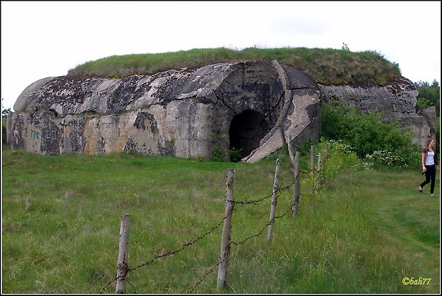
Twierdza Osowiec - Fort II Zarzeczny, źródło: http://fotoforum.gazeta.pl/photo/3/ab/pc/aefm/NqWI9o2Hh1BM6yElBB.jpg
W skład twierdzy wchodziły 4 forty: Centralny – fort nr 1, Zarzeczny – fort nr 2, Szwedzki – fort nr 3 i Nowy – fort nr 4. Fort 4 był pierwszym i jedynym fortem w Imperium Rosyjskim, którego obiekty w całości wylewano jako betonowe monolity. Obecnie spośród czterech fortów Twierdzy Osowiec tylko dwa są w stanie „używalności” (Fort 1 i Fort 3). Fort 2 (Zarzeczny), zniszczony podczas działań wojennych, jest pod nadzorem starostwa powiatowego w Mońkach i wejście na teren fortu jest niebezpieczne. Fort 4 (Nowy) jest również zniszczony, znajduje się na terenie Biebrzańskiego Parku Narodowego i przez jego teren została wytyczona turystyczna trasa historyczno-przyrodnicza. Na terenie Fortu Centralnego znajduje się Muzeum Twierdzy Osowiec, którym opiekuje się Osowieckie Towarzystwo Fortyfikacyjne. Twierdza Osowiec jest jednym z największych zimowych skupisk nietoperzy w kraju.
Źródło: https://pl.wikipedia.org/wiki/Twierdza_Osowiec
Przy drodze do fortów zatrzymaliśmy się przy wieży widokowej, z której roztaczał się widok na bagna biebrzańskie.
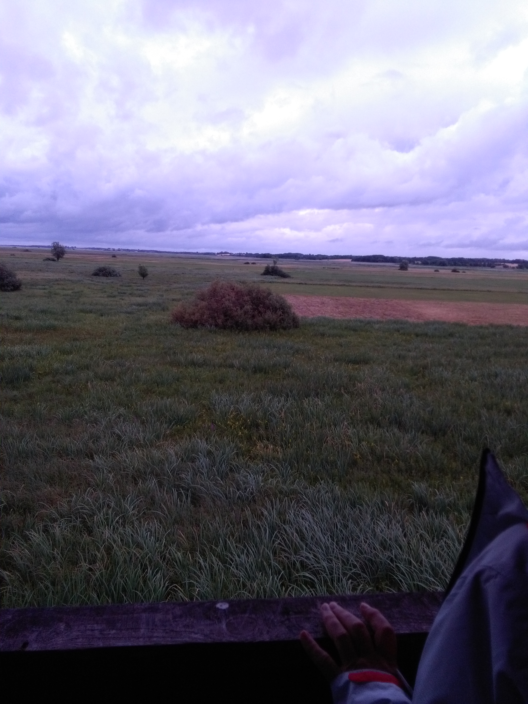 Widok na bagna biebrzańskie
2.3.5 BIEBRZAŃSKI PARK NARODOWY
Biebrzański Park Narodowy – jeden z 23 parków narodowych Polski, utworzony 9 września 1993 r. Największy Park w Polsce o powierzchni 592,23 km², położony na terenach Kotliny Biebrzańskiej w województwie podlaskim. Siedziba Parku znajduje się w Osowcu-Twierdzy, gmina Goniądz. Obejmuje dolinę Biebrzy począwszy od ujścia Niedźwiedzicy do Biebrzy, a skończywszy na ujściu Biebrzy do Narwi. Niemal cały bieg Biebrzy znajduje się na terenie parku (ok. 155 km). Ochronę tego terenu zapoczątkowano w latach międzywojennych, tworząc dwa rezerwaty: Czerwone Bagno (w zmienionych granicach istniejący do dziś) oraz Grzędy. W roku 1989 staraniem Towarzystwa Biebrzańskiego utworzono Biebrzański Park Krajobrazowy. Cztery lata później park krajobrazowy przekształcono w park narodowy. W 1995 r. Biebrzański Park Narodowy wpisany został na listę wodno-błotnych obszarów chronionych Konwencją Ramsar. Od roku 2010 Biebrzański Park Narodowy jest w całości włączony do spisu ostoi ptaków IBA prowadzonego przez BirdLife International. Na terenie Biebrzańskiego Parku Narodowego spotyka się zbiorowiska wodne, bagienne, torfowiskowe, szuwary, a także zbiorowiska leśne (olsy, brzeziny, łęgi). Szczególnie cenna jest duża grupa zbiorowisk mechowiskowych, zawierających liczne gatunki rzadkie i reliktowe (brzoza niska, wierzba lapońska, gnidosz królewski), zanikające w innych częściach kraju. Szata roślinna odznacza się ogromną różnorodnością, wysokim stopniem naturalności i obecnością wielu rzadkich gatunków, jak storczyki (storczyk krwisty, obuwik pospolity, podkolan biały, kruszczyk rdzawoczerwony, kruszczyk szerokolistny, tajęża jednostronna), rosiczki (rosiczka okrągłolistna, rosiczka długolistna), widłaki (jałowcowaty, goździsty, wroniec). Na terenie Biebrzańskiego Parku Narodowego występuje 49 gatunków ssaków, 271 gatunków ptaków, 36 – ryb, 12 – płazów, 5 – gadów. Bezkręgowce są reprezentowane przez ponad 700 gatunków motyli, 448 gatunków pająków, ponad 500 gatunków chrząszczy, 19 gatunków pijawek oraz 42 gatunki chruścików. Na Bagnach Biebrzańskich gniazduje wiele gatunków ptaków związanych ze środowiskiem bagiennym. Występują tu izolowane stanowiska lęgowe gatunków borealnych, a także gatunków, których centrum zasięgu geograficznego znajduje się w strefie tajgi i tundry. Ponadto Kotlina Biebrzańska ma ogromne znaczenie dla wielu gatunków ptaków żerujących oraz wypoczywających w czasie corocznych wędrówek. Dla ptaków siewkowatych, wymagających rozległych, podmokłych obszarów, Biebrza stanowi jedną z najważniejszych ostoi w Europie Środkowej. Najbardziej charakterystyczne lęgowe gatunki ptaków to: batalion (widoczny w emblemacie parku), wodniczka, bekasik, dubelt, kszyk,kulik wielki, biegus zmienny, żuraw, rybitwa białoskrzydła i białowąsa, puchacz, orlik krzykliwy oraz sowa błotna. Najbardziej charakterystycznym ssakiem Biebrzańskiego PN jest łoś, który jedynie tu przetrwał okres II wojny światowej; liczebność wynosi około 400 sztuk.
Źródło: https://pl.wikipedia.org/wiki/Biebrza%C5%84ski_Park_Narodowy
2.4 Dzień czwarty – 10.07.2019 r.
Jedziemy do Grodna na Białoruś
2.4.1 GRODNO
Wielu odwiedzających Grodno po raz pierwszy może doznać szoku. Miasto nie różni się aż tak bardzo od innych miast europejskich - półki sklepowe są pełne towarów, ludzie są normalnie ubrani i posiadają drogie gadżety, a niemal każda knajpa reklamuje się darmowych dostępem do wifi. Gdyby nie radzieckie czerwone gwiazdy, komunistyczne nazwy ulic czy pomnik Lenina można by pomyśleć, że jesteśmy w typowym kraju centralnej Europy.
2.4.1.1 Historia
Grodno było wzmiankowane po raz pierwszy w 1128 r. W 1376 r. wraz z Wielkim Księstwem Litewskim formalnie włączone zostało do Królestwa Polskiego. Kazimierz Jagiellończyk jako wielki książę litewski rozszerzył w 1444 r. prawa miejskie Grodna, nadając miastu herb w postaci jelenia św. Huberta z krzyżem pomiędzy rogami. Na zamku w Grodnie Kazimierz Jagiellończyk zgodził się przyjąć koronę polską od rycerstwa małopolskiego. Tam też zmarł w 1492 r. Na zamku mieszkał i zmarł w 1483 syn króla Kazimierza – św. Kazimierz. Na mocy unii lubelskiej w 1569 Grodno znalazło się w granicach Rzeczypospolitej Obojga Narodów. Było miastem królewskim Wielkiego Księstwa Litewskiego. Panowanie króla Stefana Batorego było określane jako „złote lata” miasta. Król lubił Grodno i mieszkał na zamku wiele lat i tam zmarł w 1586 r. W 1602 rozpoczęto budowę kościoła i klasztoru bernardynów, W 1621 do miasta przybywają jezuici. W 1635 starosta upicki Eustachy Kurcz ufundował kościół franciszkanów. Około 1642 ukończono budować kościół i klasztor brygidek. Po unii brzeskiej w mieście założono też klasztory dominikanów i karmelitów. Sejm w 1673r. uchwalił, że co trzeci sejm walny Rzeczypospolitej od 1678 będzie odbywał się w Grodnie (poza sejmem konwokacyjnym, elekcyjnym i koronacyjnym) – były to tzw. sejmy grodzieńskie. Powstają wtedy m.in. pałace Radziwiłłów, Sapiehów, Puchalskich, Ogińskich. W 1700 roku ukończono także budowę przy rynku kościoła Jezuitów (obecnej katedry). W latach 1765–1780 nastał w mieście czas zwany „Holandią kwitnącą” za sprawą działań, które wdrożył podskarbi wielki litewski Antoni Tyzenhaus otwierając w mieście 18 manufaktur, fabryk i zakładów. Podskarbi wybudował też nowy pałac w dzielnicy Horodnica. W 1773 zamieniono kolegium jezuitów w szkołę wydziałową Komisji Edukacji Narodowej. W 1775 utworzona została Królewska Szkoła Lekarska, przy której w tym samym roku założono Królewski Ogród Botaniczny, pierwszy polski ogród botaniczny. W tym też czasie utworzono pierwszy w mieście teatr. W 1776 zaczęto wydawać „Gazetę Grodzieńską” i „Rocznik Gospodarski”. Rozwój miasta przerwało odebranie stanowiska Tyzenhausowi w 1780 i wielki pożar śródmieścia z ratuszem i farą w 1782 roku. W roku 1784 roku po raz pierwszy odwiedził Grodno z zespołem teatralnym Wojciech Bogusławski. W dniu 6 lipca 1792 miasto zajął Piotr Dołgoruki na czele wojsk rosyjskich. Rok później na Dolnym Zamku, w który wymierzyły działa wojska rosyjskie, odbył się niesławny sejm grodzieński, który zatwierdził II rozbiór Polski. 30 września 1794 do Grodna przybył Tadeusz Kościuszko na czele wojsk powstańczych, jednak po upadku insurekcji kościuszkowskiej miasto ponownie opanowali Rosjanie. W dniu 25 listopada 1795 na Zamku abdykował król Polski, który opuścił miasto w 1797 r. Przez cały okres zaborów pozostawało ważnym ośrodkiem ruchu narodowo-wyzwoleńczego. Miasto w tym czasie liczyło około 20 tys. mieszkańców. Zaczęła się też kolejna fala rusyfikacji, m.in. wyburzano kościoły np. dominikanów, a gotycką farę przebudowano na cerkiew. W 1866 r. Rosjanie wydali zakaz mówienia po polsku w życiu publicznym, dlatego spotykano się potajemnie w domach mieszczańskich by organizować spotkania teatralne, muzyczne i literackie. Ogólny upadek miasta zahamowało w 1861 przeprowadzenie linii kolei Warszawsko-Petersburskiej. W latach 1894–1910 w mieście mieszkała Eliza Orzeszkowa, działająca aktywnie w celu powstrzymania rusyfikacji. W 1905 Rosjanie wybudowali cerkiew Opieki Matki Bożej. Dzięki inicjatywie mieszkańców w 1907 zainstalowano pierwsze telefony. W 1909 powstał most żelazny przez Niemen, a w 1912 miasto zelektryfikowano. W okresie I wojny światowej miasto było okupowane przez Niemców. 15 kwietnia i 27 kwietnia 1919 w Grodnie pojawiły się pierwsze polskie oddziały. 3 czerwca 1919 roku do Grodna przyjechał Józef Piłsudski . W 1920 r. Grodno dwukrotnie stało się areną działań zbrojnych. jako ważny węzeł komunikacyjny na froncie polsko-bolszewickim. W 1921 na mocy Traktatu ryskiego, Grodno oficjalnie weszło w skład II Rzeczypospolitej. Administracyjna i gospodarcza rola miasta uległa wówczas degradacji na korzyść sąsiedniego Białegostoku (tam przeniesiono m.in. siedzibę województwa). Przedwojenne Grodno było siedzibą władz powiatowych. Liczyło prawie 60 tysięcy mieszkańców, wśród których przeważali Polacy (60%) i Żydzi (37%), przy nieznacznym udziale procentowym Litwinów i Białorusinów (3%). Dochodziło do napięć na tle narodowościowym. W okresie międzywojennym powstały Kresowa Fabryka Rowerów i Motocykli „Niemen”, Zakłady Graficzne, Fabryka Wyrobów Introligatorskich, browary Margolisa, Słuckiego, Dojlidy. Zbudowano na Zaniemeniu nowy budynek dla Fabryki Tytoniu. Jako ważny ośrodek kultury polskiej na Kresach, Grodno szczyciło się szeregiem szkół i bibliotek. Miasto miało dwa stałe teatry oraz Muzeum Przyrodnicze i Muzeum Historyczne na zamku, które założył Józef Jodkowski. W mieście działało harcerstwo. Powstał także ogród zoologiczny. W latach 1922–1927 w Grodnie mieszkała i tworzyła Zofia Nałkowska. W 1929 odsłonięto pomnik Elizy Orzeszkowej, a w 1930 zbudowano nowy most przez Niemen. W 1938 zburzono cerkiew św. Aleksandra Newskiego. 20 września 1939 do Grodna wtargnęły kolumny czołgów Armii Czerwonej, próbując zdobyć miasto z marszu, rozpoczęła się obrona Grodna. Polscy żołnierze wspomagani przez cywilnych ochotników, m.in. harcerzy grodzieńskich, walczyli z przeważającymi siłami wroga (Obrona Grodna) aż do wieczora 21 września. Po upadku miasta, Sowieci dokonali bez sądu egzekucji około 300 obrońców, w tym szkolnej młodzieży (na Psiej Górce rozstrzelano m.in. 20 uczniów broniących Domu Strzelca). Od 22 września na mocy paktu Ribbentrop-Mołotow Grodno pozostawało pod okupacją sowiecką, włączone do sowieckiej Białorusi jako siedziba rejonu w obwodzie białostockim. W latach 1941–1944 miasto znajdowało się pod okupacją niemiecką. Niemcy wymordowali Żydów, umieszczając ich wcześniej w dwóch gettach (Getto w Grodnie). Na mocy postanowień konferencji jałtańskiej, władze sowieckie zobowiązały się do zwrotu Polsce terytoriów na zachód od linii Curzona. Linia w pobliżu Grodna przebiegała po rzece Niemen, pozostawiając po stronie polskiej lewobrzeżną część miasta. W rzeczywistości jednak granicę na tym odcinku wytyczono średnio o 15–22 km na zachód od linii Curzona, w związku z czym całe Grodno znalazło się na terytorium Białoruskiej SRR. W lipcu 1944 roku mieszkańcy miasta utworzyli komitet, który kierował listy od mieszkańców do różnych instytucji polskich z prośbą o pozostawienie Grodna w składzie Polski. Apele jednak pozostały bezskuteczne. Miasto stało się w lipcu 1944 ponownie częścią ZSRR i pozostało nią aż do jego rozwiązania w 1991. W 1961 władze komunistyczne kazały wysadzić najstarszy kościół miasta, tzw. Farę Witoldową. W 1974 uruchomiono komunikację trolejbusową. Obecnie miasto znajduje się w składzie Republiki Białorus
Źróło: https://pl.wikipedia.org/wiki/Grodno
Autobus zatrzymuje się przy Wielkiej Synagodze. Wyruszamy z miejscowym przewodnikiem na zwiedzanie miasta.
2.4.1.2 Budynek synagogi
Budynek synagogi zwrócono w 1991 r. gminie żydowskiej. Staraniem gminy przeprowadzono remont obiektu, łącznie z renowacją fasady głównej, Obecnie synagoga jest czynna; została wpisana na Listę Światowego Dziedzictwa UNESCO .Mijamy budynek wysokiej wieży grodzieńskiej, jeszcze carskiej, straży pożarnej. Grodno przypomina "nasze" miasta. Widać na każdym kroku, że mieszkańcy nie zapominają, że przeszłość tego miejsca jest nierozerwalnie związana z Polską. Grodno to wiele zachowanych zabytków i ciekawych obiektów. Serce rośnie, kiedy widzi się tyle polskich akcentów.
2.4.1.3 Fara Witoldowa
Dochodzimy do skweru gdzie stał Kościół Najświętszej Maryi Panny, nieistniejący dziś, manierystyczny kościół farny, wzniesiony w 2. poł. XVI w. Ponieważ fundatorem pierwszego drewnianego kościoła był wielki książę litewski Witold, świątynię nazywano też farą Witoldową. W 1961 r. na rozkaz miejscowych władz komunistycznych zabytkowa świątynia została wysadzona w powietrze. Na miejscu gdzie stała świątynia, znajduje się dzisiaj niewielki skwer miejski; w latach 90. XX wieku w jej miejscu ustawiono niewielki pomnik.
 Miejsce upamiętniające zniszczoną Farę Witoldową
Miejsce upamiętniające zniszczoną Farę Witoldową
Źródło: https://pl.wikipedia.org/wiki/Ko%C5%9Bci%C3%B3%C5%82_Naj%C5%9Bwi%C4%99tszej_Maryi_Panny_w_Grodnie
2.4.1.4 Bazylika św. Franciszka Ksawerego
Pierwotnie kościół jezuitów, od 1782 kościół farny, od 1991 katedra diecezji grodzieńskiej. Bazylika położona jest kilka minut od czołgu i naprzeciwko placu Sowieckiego. Wnętrze świątyni jest zachwycające! Nabożeństwa odprawiane są w języku polskim. Co ciekawe, kościół miał zostać zburzony w czasach komunizmu, jednak mieszkańcy na to nie pozwolili. Budowę kościoła rozpoczęto w 1674 roku; w listopadzie 1705 r. król August Mocny, razem z carem Piotrem I, wziął udział w poświęceniu kościoła jezuickiego przez biskupa chełmińskiego Teodora Potockiego. Katedra św. Franciszka Ksawerego jest jedną z największych barokowych świątyń na terenach dawnej Rzeczypospolitej: ma 60 m długości i 30 m szerokości. Zbudowano ją jako trzynawową bazylikę z kopułą na przecięciu nawy głównej i transeptu. Płaską fasadę wieńczą dwie wieże w stylu baroku wileńskiego zwieńczone hełmami. Pomiędzy wieżami znajduje się szczyt zakończony tympanonem. W prezbiterium znajduje się okazały barokowy ołtarz główny z lat 1737-1760, w którym są rzeźby dłuta Jana Chrystiana Schmidta z warmińskiego Reszla. Ołtarz jest dwukondygnacyjny. Każdą kondygnację wypełnia rząd kolumn, pomiędzy którymi ustawione są posągi świętych i apostołów. Pośrodku drugiej kondygnacji znajduje się figura Chrystusa. Na wierzchołku ołtarza umieszczono figury jego fundatorki, kasztelanowej mścisławskiej Konstancji z Jundziłłów Łazowej i aniołów. Całość wieńczy umieszczona centralnie promienista gloria. Ołtarz i zdobiące go rzeźby wykonane są z drewna. Boczne ołtarze, sprowadzone z Królewca, przedstawiają św. Stanisława (z lewej strony) i św. Kazimierza (z prawej). Przy filarze prawej części transeptu znajduje się pomnik Antoniego Tyzenhauza, dłuta rzeźbiarza lwowskiego Tomasza Dykasa (zm. 1910). Pomnik przedstawia naturalnych rozmiarów postać kobiecą ze złoconego brązu siedzącą na stopniach z szarego marmuru i składającą dwa liście palmowe. Pośrodku pomnika znajduje się medalion brązowy z reliefem Tyzenhausa.
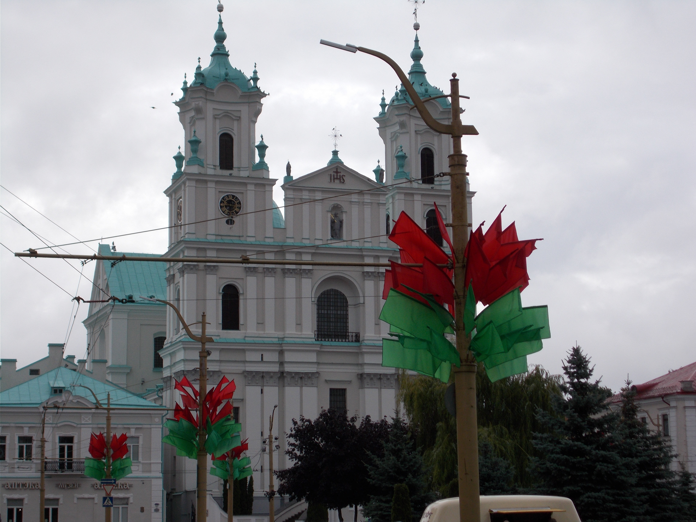 Bazylika Św. Franciszka Ksawerego
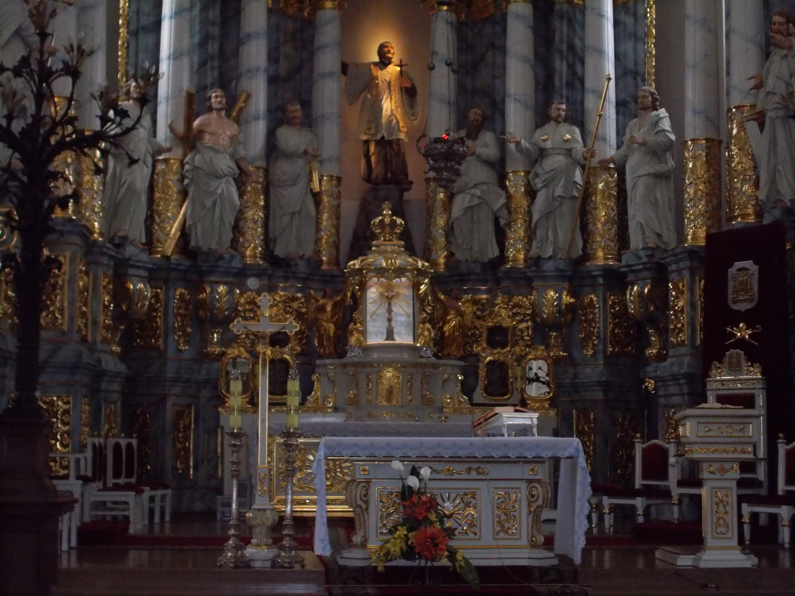 Bazylika Św. Franciszka Ksawerego wnętrze
Źródło: https://pl.wikipedia.org/wiki/Bazylika_katedralna_%C5%9Bw._Franciszka_Ksawerego_w_Grodnie
2.4.1.5 Plac Sowiecki
Grodno nie ma rynku; ma za to centralny plac zwany Placem Sowieckim, będącym centrum współczesnego Grodna. Pkt. dominującym jest stojący na wysokim cokole czołg T-34, wzniesiony ku chwale wyzwolicieli Grodna – lufą celuje na zachód. W walkach o Grodno się nie zasłużył; wyprodukowano go po wojnie. Drugim charakterystycznym obiektem, usytuowanym przy placu jest futurystyczna korona przypominająca tort- budynek obwodowego Teatru Dramatycznego z lat 80-tych
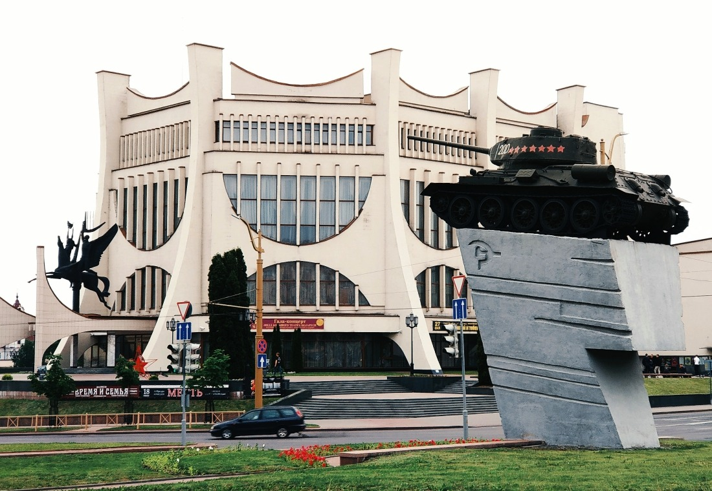
Teatr Dramatyczny na Placu Sowieckim, źródło: https://www.podrozepokulturze.pl/wp-content/uploads/2019/06/grodno-zwiedzanie-atrakcje-bialorus-30.jpg
2.4.1.6 Nowy i Stary Zamek. Bulwary nad Niemnem
Kilkaset metrów od synagogi znajdziemy Nowy Zamek. Przebudowywano go wielokrotnie i w ostatecznej wersji odbudowy, po zniszczeniach wojennych, w latach 50 tych XX w., przypomina sowiecki gmach z wyraźnie widocznym nad kolumnami sierpem i młotem. W środku znajduje się niewielkie muzeum, ale nie to najbardziej zainteresuje turystów. Obiekt odegrał bardzo ważną rolę w historii Polski. Zwołano w nim ostatni Sejm Rzeczpospolitej, a ostatni król Polski, Stanisław August Poniatowski, zrzekł się władzy królewskiej. Z kolei naprzeciwko ulokowany jest Stary Zamek z XIV w., będący oczkiem w głowie Stefana Batorego (w czasach kiedy rządził, Grodno de facto było stolicą Rzeczypospolitej). Batory zmarł w zamku, a z racji tego, że prawdopodobnie doszło do otrucia, zdecydowano się przeprowadzić pierwszą w tej części Europy sekcję zwłok . Zamek jest aktualnie odbudowywany. Z tarasów widokowych można podziwiać Niemen i zadbane bulwary nad rzeką.
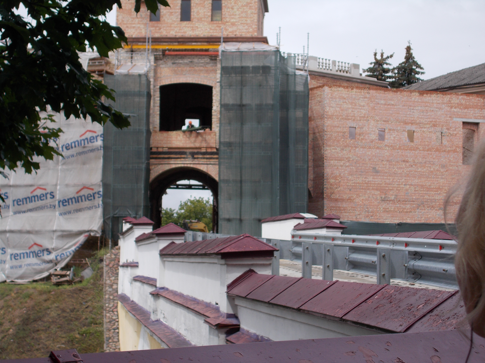 Odbudowa starego zamku
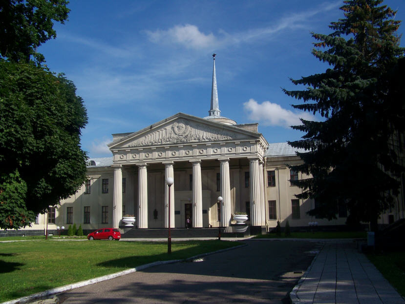
Nowy zamek, źródło: http://zamki.rotmanka.com/wp-content/uploads/2016/04/Bia%C5%82oru%C5%9B-Grodno-Nowy-Zamek-04.jpg
2.4.1.7 Cerkiew św. Borysa i Gleba
Jest to najstarszy zachowany zabytek w mieście; pochodzi z XII w. Cerkiew św. Borysa i Gleba, zwana też "cerkwią na Kołoży, usadowiona jest na wysokiej skarpie nad Niemnem, co też przyczyniło się w XIX w. do katastrofy. W wyniku osunięcia się ziemi runęła jedna ze ścian, którą odbudowano z drewna. Trzeba przyznać, że jej dzisiejsza, wyjątkowa forma wygląda niezwykle ciekawie. Koniecznie trzeba wejść do środka. Surowe wnętrze stwarza wyjątkowy klimat!.
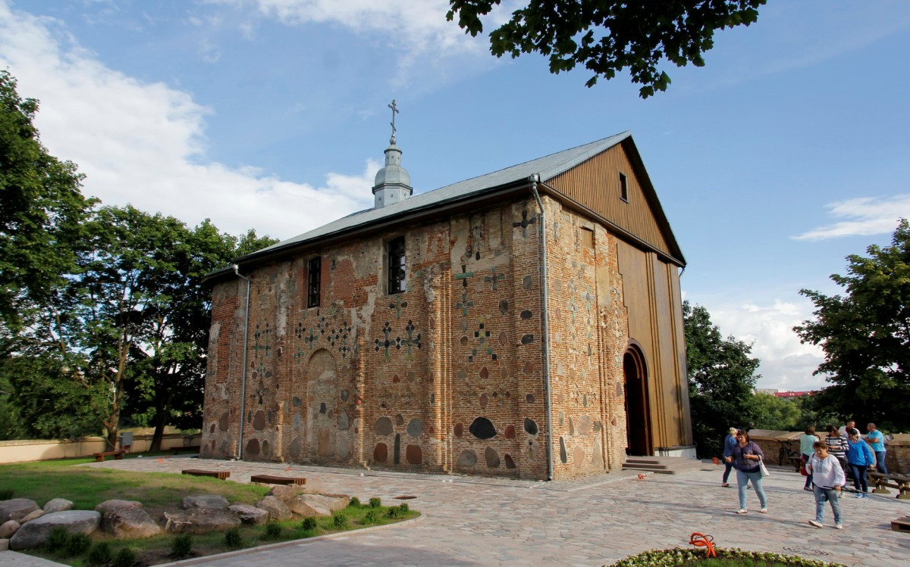
Cerkiew św. Borysa i Gleba, źródło: https://www.globtroter.pl/zdjecia/bialorus/b280324_bialorus_obwod_grodzienski_grodno.jpg
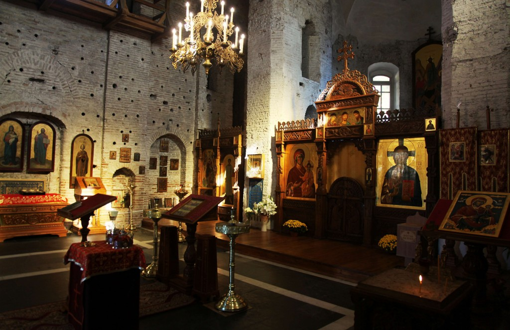
Cerkiew św. Borysa i Gleba, źródło: https://www.globtroter.pl/zdjecia/bialorus/b216041_bialorus_grodno_cerkiew_pw_sw_borysa_i_gleba_z_xii_w.jpg
2.4.1.8 Muzeum Elizy Orzeszkowej
Śliczny drewniany domek to rekonstrukcja dawnego domu, w którym mieszkała w latach 1894–1910 w Grodnie Eliza Orzeszkowa, działająca aktywnie w celu powstrzymania rusyfikacji. Dziś pełni funkcję muzeum (raptem 2 pokoiki) oraz biblioteki. Znajduje się przy ulicy nazwanej jej imieniem. Niedaleko muzeum ustawiono pomnik z podobizną pisarki. Jest to rzeźba z okresu międzywojennego (odsłonięty w 1929 r.), stąd też na cokole zachował się napis w języku polskim. Pomnik przetrwał wojnę, bo zakopano go opodal grobu. Grób E. Orzeszkowej znajduje się na starym cmentarzu katolickim.
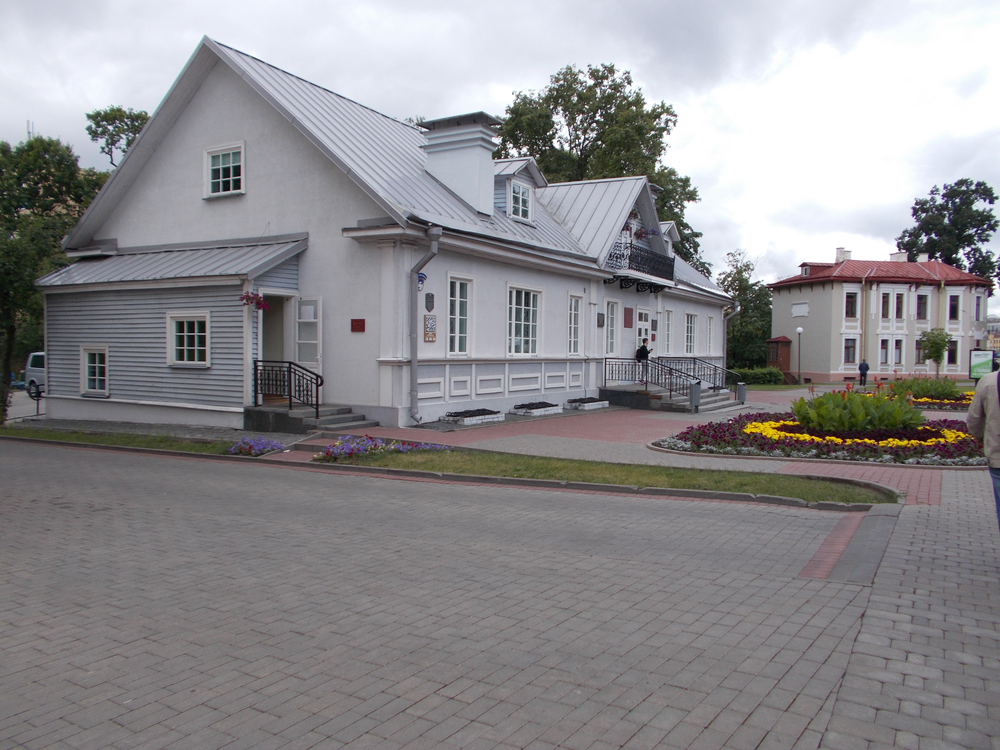 Domek - Muzeum Elizy Orzeszkowej.
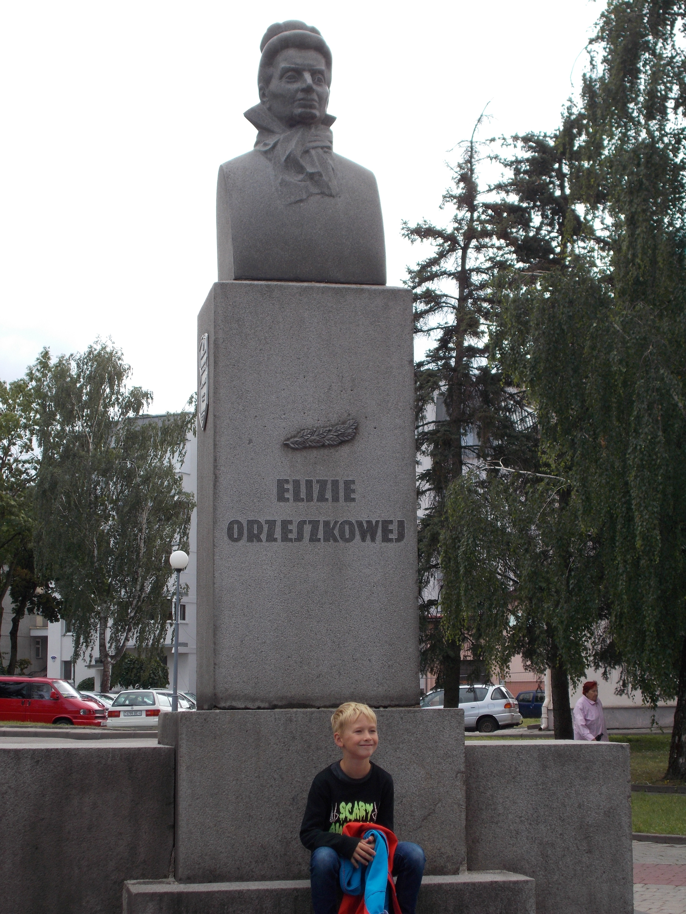 Pomnik Elizy Orzeszkowej.
2.4.1.9 Izba pomięci Zofii Nałkowskiej
Autorka Granicy zamieszkała w Grodnie latem 1923 roku wraz z drugim mężem, podpułkownikiem Janem Jurem Gorzechowskim, który otrzymał rozkaz przeniesienia się do Grodna. Spędzili w nim niemal trzy lata (do końca kwietnia 1926 roku). Doceniała jego historię, kulturotwórczą rolę, zachwycała się jego położeniem, ale jednocześnie drażnił ją prowincjonalny charakter, pospolitość tego miejsca. Inicjatorką i organizatorką Muzeum Zofii Nałkowskiej przy Katedrze Filologii Polskiej Państwowego Uniwersytetu im. Janki Kupały była badaczka jej twórczości Swietłana Musijenko. Jej także zawdzięczamy otwarcie kierunku polonistyki na tej uczelni. 16 maja 1989 roku zainaugurowano działalność muzeum. To tylko jeden pokój, ale zaaranżowany tak, że nie chce się z niego wychodzić. Zobaczymy w nim wiele pamiątek po pisarce, zdjęcia, listy, rękopisy, pierwsze wydania jej dzieł… Poczujemy ducha epoki, słuchając opowieści pani Krystyny Poczobut. Warto tam zajrzeć, przebywając w Grodnie,
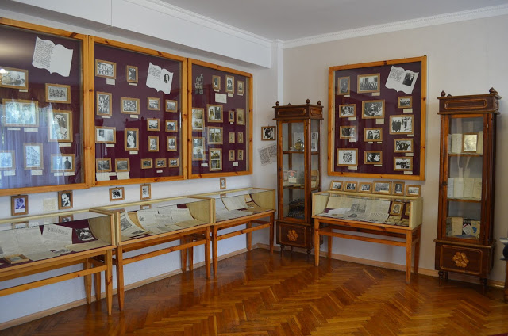
Muzeum Zofii Nałkowskiej, źródło: https://1.bp.blogspot.com/-8Ptqrh55rFA/XUfqPP88ZhI/AAAAAAAAH_8/otL4loK7YE0i-1Mf3C65I6DEF2n5LM5ZACLcBGAs/s640/DSC_4829.JPG
Źródło: http://mojepodrozeliterackie.blogspot.com/2019/08/nakowska-w-grodnie.html
2.4.1.10 Sobór Opieki Matki Bożej
Prawosławny sobór katedralny w Grodnie. Główna świątynia eparchii grodzieńskiej i wołkowyskiej Egzarchatu Białoruskiego Patriarchatu Moskiewskiego oraz siedziba miejscowej parafii (w dekanacie grodzieńskim). Obiekt został wzniesiony w 1907 w stylu pseudoruskim ku czci żołnierzy rosyjskich poległych w wojnie rosyjsko-japońskiej. Świątynia posiada fasadę główną, apsydę i fasadę boczną. Od 1961 posiada tytuł soboru. Projekt grodzieńskiego garnizonowego soboru został stworzony na podstawie projektu cerkwi Kaspijskiego wojskowego pułku w mieście Peterhof. Projekt do Grodzieńskiego soboru został przerobiony przez architekta Litewskiej Prawosławnej diecezji Michała Porozowa – autora wielu znanych budynków w Wilnie (Akademia nauk Litwy, Znameńska świątynia, Karaimski modlitewy dom itp.) Budową świątyni-pomnika kierował inżynier w stopniu kapitana Ivan Sawieliew (1861-1951 r.). Cerkiew była budowana przez oddział armii. Świątynia stanowi budynek typu bazyliki. Nad oltarzem świątyni znajduje się pięć kopuł. Posiada kruchty z ołtarzami naw bocznych oraz wypukłe sklepienia z pojedynczymi kopułami. Nad pszedsionkem centralnej części świątyni wznosi się dzwonnica o wysokości ej prawie 30 metrów. Zewnętrzny wystrój świątyni jest wykonany w rosyjskim stylu (duża ilość drobnych elementów architektonicznych: skręcone kolumny, karnisze). Biało-różowy kolor kompozycji podkreśla różnorodność i piękno elementów dekoracyjnych i nadaje świątyni świąteczny wygląd.
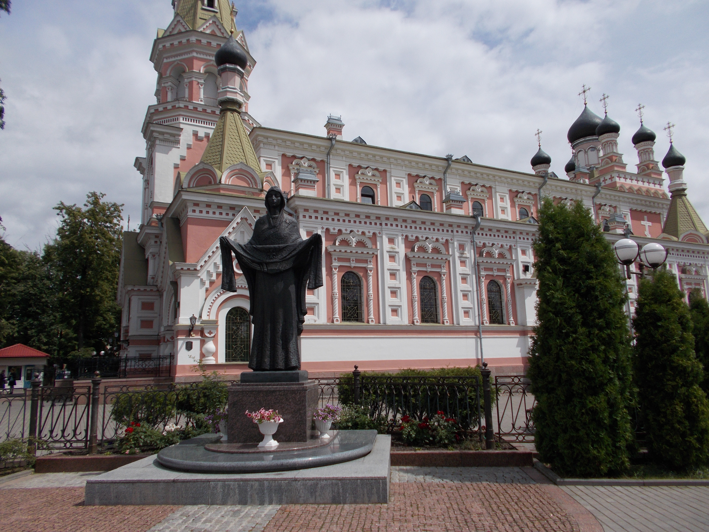 Sobór Opieki Matki Bożej
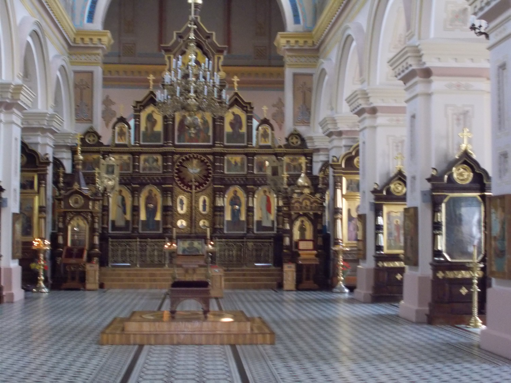 Wnętrze Soboru
Źródło: https://pl.wikipedia.org/wiki/Sob%C3%B3r_Opieki_Matki_Bo%C5%BCej_w_Grodnie, https://pokrovgrodno.org/ru/history/common/pl
2.4.1.11 Grodzieńskie cmentarze
Podjechaliśmy pod stary cmentarz katolicki. Pogoda – intensywny deszcz- nie sprzyjał zwiedzeniu tego miejsca. W sumie ograniczyliśmy się do podejścia i zobaczenia miejsca pochówku E. Orzeszkowej i wróciliśmy do autobusu. Sam cmentarz zrobił na nas „dziwne” wrażenie. Miejsce bez zieleni, charakterystycznej dla starych nekropolii ,z zaniedbanymi nagrobkami, miejsce smutne bo ucieka z niego pamięć. Stan cmentarza pokazuje jak ci, co jeszcze żyją, dbają o swoją pamięć historyczną, pamięć o swoich przodkach. Stare cmentarze przy ulicy Antonowa (byłej Jerozolimskiej) w Grodnie z pewnością mogą być chlubą grodnian, ale nie są. Farny cmentarz katolicki jest najstarszym na Białorusi cmentarzem komunalnym, założonym jeszcze w roku 1792. Razem z cmentarzem na Rossie w Wilnie i cmentarzem Łyczakowskim we Lwowie jest to najważniejsza nekropolia na wschodzie byłej Rzeczypospolitej. Nawet najbardziej znane nekropolie byłej Korony – Rakowicki w Krakowie i Powązki w Warszawie mają tyle samo lat co Cmentarz Farny w Grodnie. Cmentarze są pełne dzieł sztuki rzeźbiarskiej i kowalskiej – pomników i grobowców. Na cmentarzu katolickim znajdują się nagrobki, których twórcami byli m.in.: Józef Grzegorz Zaborowski, W. Bobrowski, Bolesław Szyszkiewicz, Wasyl Kaczan, Ignacy Fabian Siliniewicz, Lewandowiczowie. Cmentarz był czynny do połowy lat 70. XX wieku. W 2006 zdewastowano kilkadziesiąt nagrobków. Pochowani na nim są m.in.
- architekt Giuseppe de Sacco,
- Eliza Orzeszkowa z mężem Stanisławem Nahorskim,
- generał Wojska Polskiego Adam Mokrzecki z synem,
- żołnierze polscy polegli w 1919 i 1920 roku (w lewej części cmentarza od wejścia głównego, obok muru od strony ulicy)
- obrońcy Grodna z 1939 z m.in. 13-letnim uczniem Tadeuszem Jasińskim
- rzeźbiarz Bolesław Szyszkiewicz
- Edward Listowski
- prezydent Grodna
- członkowie rodziny baronów Danglów ze Skłót
Epitafia na pomnikach są napisane w językach – polskim, rosyjskim, białoruskim, niemieckim, czeskim, francuskim, litewskim, po łacinie. W latach 1970-tych stare cmentarze zamknięto. Był nawet plan całkowitego ich zlikwidowania po upływie 25 lat od ostatniego pochówku. Na szczęście po odzyskaniu niepodległości Białorusi nikt już nie mówił o planach zniszczenia cmentarzy, lecz odwrotnie zaczęto je intensywnie badać. Kilka razy przyjeżdżali do Grodna studenci z Białegostoku, grodzieńska instytucja projektancka „Grodnograżdanprojekt” sporządziła detaliczny plan cmentarzy, a polonista Jacek Rozmus razem z historykiem Jurym Gardzieewym wydali w 1999 r. monografie o katolickim cmentarzu. Kilka lat później powstała książka Walerego Czerepicy „Grodnienskij prawosławnyj niekropol” o prawosławnej części nekropolii. Za pracą badaczy powinny nastąpić konkretne działania władzy w sprawie zagospodarowania cmentarza, konserwacji pomników, wpisania ich na listę zabytków. Ale tak się nie stało. Tylko w latach 2007–2008 przeprowadzono całkowite wycięcie wszystkich drzew na cmentarzach podobno w celu ratowania pomników. Faktycznie było tylko gorzej. Po zniknięciu starych drzew na mogiłach zaczęła rosnąć wielka ilość małych drzewek samosiejek, które rwą na części pomniki z nietrwałego piaskowca. W dodatku rozebrano autentyczne brukowane ścieżki, co prawie całkiem pozbawiło cmentarze swoistego kolorytu i niepowtarzalności. Faktycznie dzisiaj jest tak, że nie ma żadnej koncepcji zachowania cmentarzy. Cmentarze są „pod władzą” gospodarki komunalnej, nieliczni społeczni aktywiści czasami przychodzą na groby znanych ludzi i żołnierzy, ale jako całość cmentarze nikogo nie interesują. Nawet w dalekich planach nie ma zamiarów wpisania cudownych i niszczejących grodzieńskich nekropolii na listę zabytków narodowych. Garstka aktywistów usiłuje ocalić unikalny Cmentarz Farny w Grodnie, przynajmniej w formie cyfrowej. Podczas gdy urzędnicy uznają pojedyncze nagrobki za zabytki, reszta nekropolii niszczeje.
Źródło: https://harodnia.com/pl/grodno-teraz/517-stare-grodzie-skie-cmentarze-wa-ne-lecz-niepotrzebne-zabytki, https://pl.wikipedia.org/wiki/Cmentarz_farny_w_Grodnie
2.4.1.12 Grodzieńskie kosze na śmieci
Grodno jest niewiarygodnie czystym miastem. Znajdziemy tu mnóstwo metaloplastyki w tym efektowne kosze na śmieci, nie mające nic wspólnego z pospolitymi koszami. Są to przeróżni osobnicy w okularach, kapeluszach, surducikach, z parasolem w ręce a nawet z psem na smyczy. W dodatku dziękują za odpadki w różnych językach, po polsku również.
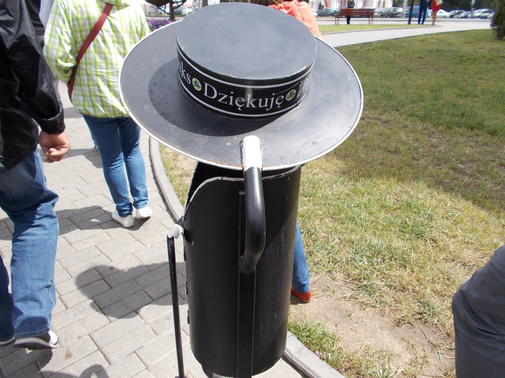 Kosz na śmieci
2.4.1.13 Historyczna makieta Grodna
Podczas zwiedzania Grodna mieliśmy okazję zobaczyć także makietę historyczną miasta. Prezentacja dźwiękowa pozwoliła zobaczyć nam jak zmieniało się Grodno na przestrzeni wieków.
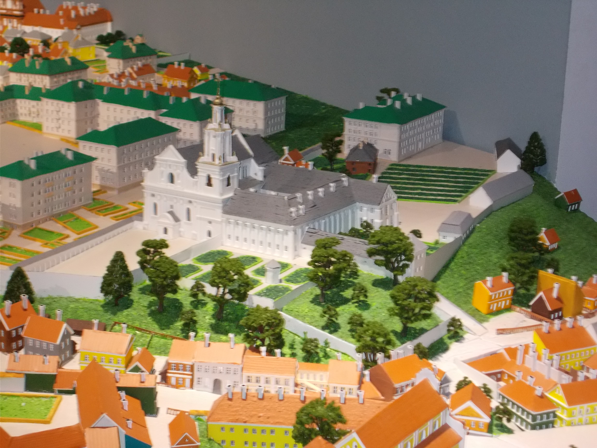 Fragment historycznej makiety Grodna
2.4.1.14 Inne zabytki
Byliśmy w Grodnie tylko kilka godzin. Nie wszystko co ciekawe w tym mieście udało się zobaczyć. Jeżeli kiedyś jeszcze będzie nam dane tu przyjechać to warto zwiedzić jeszcze:
- Kościół pobernardyński Znalezienia Krzyża Świętego
- Kościół Zwiastowania NMP i klasztor Brygidek
- Kościół Matki Bożej Anielskiej i klasztor Franciszkanów
- Batorówka w Grodnie z poł. XVI w.
- Apteka jezuicka z 1709 roku.
- Cerkiew i klasztor bazylianek z XVIII w.
- Pałac Chreptowiczów z końca XVIII w.
- Zespół zabudowań wzniesionych przez Antoniego Tyzenhauza w dzielnicy Horodnica:
- Pałac Stanisławówka w Grodnie z 2 poł. XVIII w.
- Dwór Administratora z XVIII w., późniejszy Pałac Walickiego
- Krzywa oficyna z XVIII w.
- Dom Majstra z XVIII w.
- Teatr z 1772 r., obecnie Teatr Lalek
- Kościół ewangelicko-augsburski św. Jana
- Dwór Poniemuń zbudowany jako pałacyk myśliwski w XVIII w. dla króla Stanisława Augusta Poniatowskiego, w 1 poł. XIX wieku należał do Romana Lachnickiego, dwór jest zlokalizowany w południowo-wschodniej części miasta
- Pałac Sapiehów z XVII w., ob. browar
- Pałac Czetweryńskich z 2 poł. XVIII w., pierwotnie Akademia Medyczna WKL, ob. teren wojskowy, ul. Orzeszkowej 20
- Synagoga chóralna w Grodnie z 1905 r.
- Cmentarz Garnizonowy przy ul. Biełusza z kwaterą żołnierzy Wojska Polskiego z lat 1919–1920 r.
- Cmentarz Franciszkański ze znajdującą się po lewej stronie alei głównej mogiła żołnierzy Wojska Polskiego z lipca 1920 r.
Żródło: https://pl.wikipedia.org/wiki/Grodno#Zabytki
Po zwiedzeniu Grodna przekroczyliśmy granicę Białorusko – Litewską (ok. 1,5 godz.) i jedziemy do Druskiennik.
2.4.2 DRUSKIENNIKI
2.4.2.1 Historia
Druskieniki to największe i najnowocześniejsze uzdrowisko na Litwie, położone na brzegu Niemna, jedno z najlepszych uzdrowisk klimatycznych i balneologicznych w Europie. Występują tu liczne źródła mineralne i pokłady borowiny. W 2006 r Druskienniki liczyły 16 647 mieszkańców. Pierwsze pisemne wzmianki o Druskienikach pochodzą z 1636 r., choć najprawdopodobniej już w XIII wieku było tu grodzisko, które w 1308 r. spłonęło, po czym okolica się wyludniła. W XVIII wieku miejscowy znachor Pranas Surutis (Słony), jako pierwszy zastosował wodę ze źródeł solankowych do leczenia. W 1794, na mocy dekretu króla Polski i wielkiego księcia litewskiego Stanisława Augusta Poniatowskiego Druskieniki zyskały status miejscowości leczniczej. Badaniem leczniczych właściwości źródeł na początku XIX wieku zajął się polski profesor chemii Uniwersytetu Wileńskiego, Ignacy Fonberg. Car Mikołaj I , 31 grudnia 1837r., nadał Druskienikom tytuł uzdrowiska; rozpoczęto budowę drewnianych zabudowań kurortu. Po I wojnie światowej miasto znalazło się na terytorium Polski. Popularność uzdrowiska wzrosła znacznie dzięki Józefowi Piłsudskiemu, który wielokrotnie w nim wypoczywał. W 1928 r. Druskieniki zostały uznane za uzdrowisko posiadające charakter użyteczności publicznej. W latach 1929-1932 polscy architekci przyczynili się do rozbudowy kurortu. Pod kierunkiem dr E.Lewickiej zbudowano „Zakład Leczniczy Stosowania Słońca, Powietrza i Ruchu”, w którym na początku powstały szatnie męskie, zaprojektowane przez Edgara Norwertha, a w 1931 r. szatnie damskie według projektu architekta zdrojowego Jana Jabłońskiego. W 1932 roku wybudowano dwa żelbetowe baseny według projektu inż. Aleksandra Szniolisa. W 1931 roku według projektu Jana Jabłońskiego wybudowano w parku zdrojowym modernistyczną Pijalnię Wód Mineralnych. W 1934 r. doprowadzono do Druskienik linię kolejową. W Druskienikach bywali Józef Ignacy Kraszewski, Stanisław Moniuszko, Juliusz Osterwa, Hanka Ordonówna, miał tu swój dworek, tak zwaną „Pogankę” Józef Piłsudski (została wyburzona w 1964 roku z inicjatywy miejscowych władz). W okresie międzywojennym była tu strażnica Korpusu Ochrony Pogranicza. Po agresji sowieckiej na Polskę w 1939 miasto zostało wcielone do Białoruskiej SRR, a w 1940 znalazło się na terenie Litewskiej SRR (do 1991). W latach 1941–1944 Druskieniki, podczas okupacji niemieckiej, należały do Bezirk Bialystok III Rzeszy. Od 1991 Druskieniki należą do Litwy. Przeszliśmy spacerkiem przez główny deptak parku zdrojowego. Widać leniwie płynący Niemen.
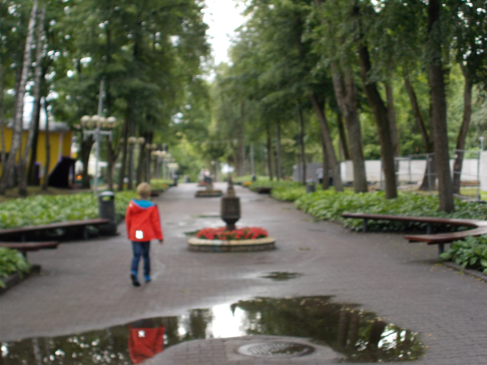 Deptak w Druskiennikach
2.4.2.2 Brzeg Niemna
Mijaliśmy nowe sanatoria. Na brzegu Niemna zatrzymaliśmy się przy źródle piękności. Wody ze źródełka nie należy pić. Można przepłukać nią bolące gardło, obmyć te miejsca, które mają stać się piękne. Źródło piękności jest najbardziej słonym źródłem w całych Druskiennikach (w litrze jest ponad 50 gramów soli).„Woda piękności” ma właściwości przeciwzapalne ale nie powinno jej się za długo przetrzymywać po pobraniu ze źródła ponieważ szybko traci swoje „magiczno-lecznicze” właściwości.
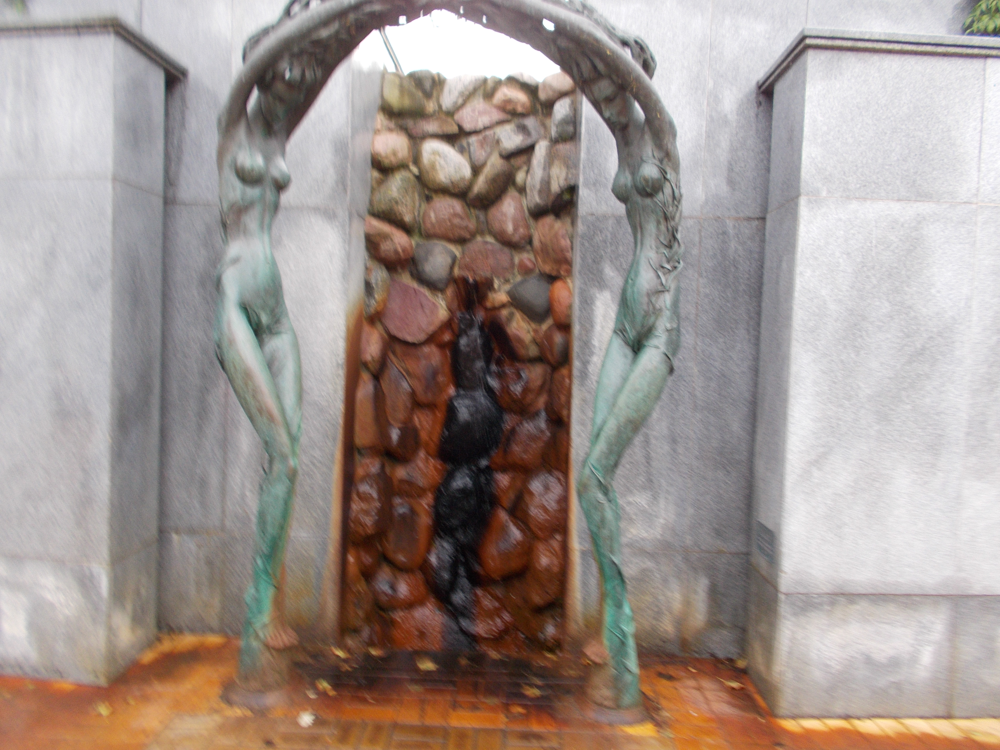 Źródło piękności
2.4.2.3 Park Zdrojowy, fontanna, cerkiew i aquapark
W centrum parku zdrojowego mogliśmy zobaczyć muzyczną fontannę. Po wybraniu ulubionej` piosenki na ekranie komputera, znajdującego się obok fontanny lub wysłaniu smsa za 3 euro na podany numer zaczyna się koncert .Muzyczna fontanna nie tylko „tańczy” w rytm muzyki, ale również zmienia kolory. Przy deptaku, bardzo blisko muzycznej fontanny stoi domek do góry nogami. Jest to świetna atrakcja dla dzieci, Niedaleko widać „niebieski kościółek” . Jest to Cerkiew Prawosławna „Radość wszystkich strapionych”. Cerkiew została wybudowana w 1865 roku na zamówienie Gubernatora Grodna, ze względu na coraz większą ilość kuracjuszy przyjeżdżających z Rosji w tamtym okresie. Przy Cerkwi stała niegdyś dzwonnica. Podczas II Wojny Światowej zaginęły wszystkie 4 dzwony, które nigdy się nie odnalazły, tak samo jak znajdująca się w cerkwi ikona z 1766 roku. Mijamy jeden z największych w Europie aquaparków. Widać wagoniki kolejki linowej. Z wagoników można podziwiać Niemen oraz przepiękne lasy iglaste. Widoki są niezapomniane. Druskieniki malowniczo położone nad Niemnem znane są nie tylko z sanatoriów, ale także z pięknej drewnianej zabudowy willowej z przełomu XIX i XX wieku. Tam też czeka na nas autobus. Ruszamy w drogę powrotną do Augustowa. Z autobusu widać zabudowania Snow Areny, kolejnej atrakcji Druskiennik. Białe szaleństwo trwa tam cały rok. Całoroczny stok przyciąga rzeszę miłośników jazdy na nartach oraz snowboardzie.
2.5 Dzień piąty – 11.08.2019 r.
Jedziemy z Biurem Podróży „ELA – TRAVEL” z Augustowa na wycieczkę objazdową po Suwalszczyźnie . Jedzie 12 osób z naszej grupy Kierujemy się do Studzienicznej. Droga biegnie przez Puszczę Augustowską.
2.5.1 PUSZCZA AUGUSTOWSKA
Puszcza Augustowska to duży kompleks leśny położony w województwie podlaskim oraz na Litwie i Białorusi. Powierzchnia całej puszczy wynosi ok. 160 tys. ha, z czego w granicach Polski znajduje się ponad 114 tys. ha. Na jej terenie znajduje się Wigierski Park Narodowy. Ze względu na surowy klimat w puszczy zachowały się gatunki roślin będące reliktami północnymi: brzoza niska, cis, borówka bagienna, zimoziół północny i rosiczki. W Puszczy Augustowskiej występują rzadkie i zagrożone wyginięciem gatunku wpisane do Polskiej czerwonej księgi roślin: podejźrzon wirginijski, turzyca delikatna, turzyca kulista, kukuczka kapturkowata, aldrowanda pęcherzykowata. 85% obszaru puszczy pokrywają bory z dużą przewagą sosny (ponad 70%, z cenną odmianą -sosna augustowska) i mniejszym udziałem świerka (17%). Wiele jest drzewostanów starych, liczących ponad 120 lat. Nie są rzadkością drzewa o wysokości 30–40 m. Na niektórych obszarach rosną dobrze zachowane bory wilgotne i bagienne, wiele jest torfowisk. Występują też olsy (8,5% powierzchni, głównie w południowej części), a miejscami także grądy.
Źródlo: https://pl.wikipedia.org/wiki/Puszcza_Augustowska
Docieramy do Studzienicznej.
2.5.2 STUDZIENICZNA
Studzieniczna to część administracyjna Augustowa, do 1973 samodzielna wieś, w województwie podlaskim, na terenie Pojezierza Suwalskiego, nad Jeziorem Studzienicznym i Stawem Studzieniczańskim. Jest obecnie ulicą o nazwie Studzieniczna. Studzieniczna otoczona jest lasami Puszczy Augustowskiej. W Studzienicznej znajduje się zabytkowy kościół drewniany ze zdobieniami z poroża dzikich zwierząt, a także kaplica Najświętszej Marii Panny, do której prowadzi wąska grobla z 1920 r. W kaplicy znajduje się obraz Matki Boskiej Studzieniczańskiej. Obecna murowana kaplica, stojąca na dębowych pniach, pochodzi z 1872 r. i jest dziełem Ludwika Jeziorkowskiego, inżyniera pracującego przy budowie Kanału Augustowskiego Obok kaplicy znajduje się studnia. Według miejscowej legendy zawiera ona "cudowną wodę, która leczy choroby". Od tej właśnie studni pochodzi nazwa jeziora oraz miejscowości. Podczas przedostatniej pielgrzymki do Polski w roku 1999 Studzieniczną odwiedził papież Jan Paweł II. Na wyspie, obok kaplicy, w miejscu gdzie przypłynął statkiem białej floty, wzniesiono pomnik Papieża, autorstwa Czesława Dźwigaja upamiętniający tę wizytę.
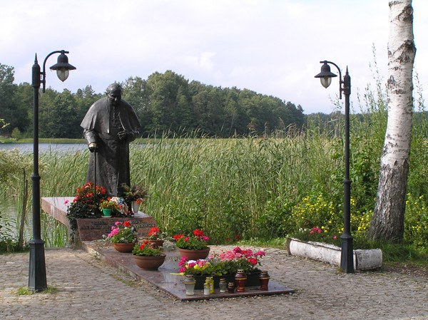
Pomnik papieża, źródło: http://www.krajoznawcy.info.pl/foto/2010-04-01/studzieniczna-5.jpg
Źródło: https://pl.wikipedia.org/wiki/Studzieniczna
Przejeżdżamy przez miejscowość Giby; mijamy pomnik poświęcony ofiarom Obławy Augustowskiej.
2.5.3 GIBY
W lipcu 1945 r. jednostki Armii Czerwonej oraz Wojsk Wewnętrznych NKWD ZSRR przy współpracy funkcjonariuszy Urzędu Bezpieczeństwa Publicznego, Milicji Obywatelskiej i miejscowych konfidentów przeprowadziły obławę na terenie ówczesnych powiatów: augustowskiego, suwalskiego i północnej części sokólskiego. Operacja przeszła do historii jako Obławą Augustowską. Podczas tej operacji zatrzymano kilka tysięcy mieszkańców tych ziem, zarzucając im przynależność lub współpracę z polskim podziemiem niepodległościowym. Po brutalnym śledztwie Sowieci wywieźli grupę około 600 osób. Ich dalszy los do tej pory nie jest znany. Pomnik na wzgórzu w Gibach, wzniesiono latem 1991 r. Na miejscu symbolizującym pochówek zaginionych postawiono 10-metrowy krzyż z napisem: "Zginęli, bo byli Polakami". Na kamiennych tablicach wyryto nazwiska 592 osób. Na wzgórzu stoi też 460 dębowych krzyży. Ma ich być w sumie 592.
Źródło: https://pl.wikipedia.org/wiki/Ob%C5%82awa_augustowska
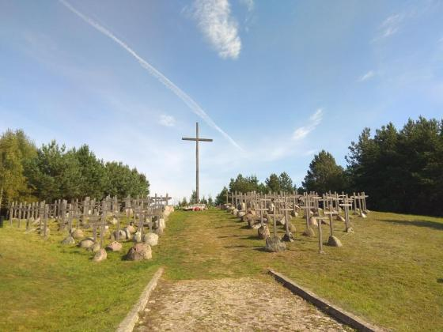
Pomnik ofiar "Obławy Augustowskiej", źródło: http://fotoforum.gazeta.pl/photo/3/ab/pc/aefm/NqWI9o2Hh1BM6yElBB.jpg
2.5.4 SEJNY
Przejeżdżamy przez miasteczko. Przewodnik zwraca naszą uwagę na bożnicę i Dom Talmudyczny. Opowiada nam o historii, wielonarodowości i wielokulturowości tego miejsca.
2.5.4.1 Historia
Sejny od wieków zamieszkują nie tylko Polacy. Gdy zostało założone, dla rozpowszechnienia handlu i przemysłu, sprowadzono Żydów, którzy zasiedlali je do II wojny światowej (w 1885 roku stanowili 75% mieszkańców, a w 1931 24%). Mieszkali i nadal mieszkają w Sejnach także Litwini. Miasto zamieszkiwali również Rosjanie, Niemcy, Białorusini oraz wiele innych. Każda z tych narodowości wniosła do życia miasta własną kulturę i tradycję. W Sejnach znajduje się konsulat Republiki Litewskiej, działa szkoła podstawowa i gimnazjum z litewskim językiem nauczania Žiburys („Światełko”), która prowadzi także przedszkole. Zatrzymujemy się przy Bazylice Nawiedzenia Najświętszej Maryi Panny – kościele podominikańskim.
2.5.4.2 Bazylika Nawiedzenia Najświętszej Maryi Panny
Kościół pełni funkcję świątyni parafialnej, sanktuarium i kolegiaty. Nosi godność bazyliki mniejszej. Stanowi wschodnią część dawnego kompleksu klasztornego dominikanów. Od 1610 r. kościół klasztorny w Sejnach był miejscem pielgrzymkowym i odpustowym. Szczególną czcią otaczano tutaj Maryję. Na początku XVII w. do klasztoru sprowadzono słynącą łaskami drewnianą figurę Matki Bożej z Dzieciątkiem, którą początkowo opiekowali się dominikanie, a od XIX w. księża diecezjalni. Kult maryjny w Sejnach rozwijał się najsilniej w XVIII w. Osłabł w okresie międzywojennym w związku z marginalizacją znaczenia kościoła podominikańskiego oraz jego peryferyjnym i przygranicznym położeniem. Odrodzenie sanktuarium w Sejnach nastąpiło w latach 70. XX wieku. Wpływ na to miały podniesienie kościoła parafialnego do rangi bazyliki mniejszej w 1973 r. oraz koronacja figury Matki Boskiej Sejneńskiej w 1975 r.
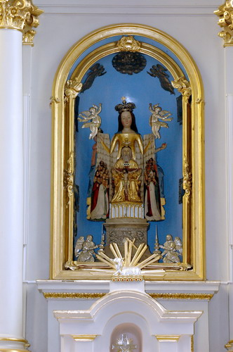
Matka Boska Sejnejska, źródło: http://santes.com.pl/parafiasejny/assets/Uploads/madonna-04.jpg
2.5.4.3 Powstanie Sejneńskie
Z Sejnami wiąże się mało znana historia powstania sejneńskiego. Powstanie sejneńskie to polskie powstanie, zorganizowane przez Polską Organizację Wojskową, przeciw litewskiej administracji na Sejneńszczyźnie w dniach 23-28 sierpnia 1919 r. ; jedno ze zwycięskich powstań w dziejach Polski. Wycofywanie się wojsk niemieckich w lecie 1919 roku na zachód, w wyniku zakończenia I wojny światowej, otworzyło tak Polakom, jak i Litwinom możliwości roztoczenia na zwalniane przez Niemców obszary Suwalszczyzny własnej władzy państwowej. Wojska litewskie zostały wyparte za linię Focha. W lutym 1923 r. po negocjacjach Rada Najwyższa Ententy uznała granicę polsko – litewską na Linii Focha.
Źródło: https://pl.wikipedia.org/wiki/Sejny
Kolejnym miejscem naszej wycieczki po suwalszczyźnie były Wigry.
2.5.5 WIGRY
Wigry to wieś leżąca w obrębie Pojezierza Suwalskiego nad jeziorem Wigry. We wsi znajduje się kościół i były klasztor zakonu kamedułów. Erem kamedułów w Wigrach należał do najbogatszych w Europie. Ufundowany został w 1667 roku przez Jana II Kazimierza Wazę z obowiązkiem codziennej modlitwy o oddalenie od kraju wszystkich nieszczęść. W 1805 klasztor skasowano, a zakonnicy przenieśli się na podwarszawskie Bielany. W klasztorze w latach 1975–2010 mieścił się Dom Pracy Twórczej Ministerstwa Kultury i Sztuki. Obecnie obiekt ponownie wrócił we władanie kościoła. W dawnych eremach znajdują się pokoje gościnne i apartamenty, które można odpłatnie wynajmować. Na terenie klasztoru można zwiedzić Apartamenty i Kaplicę Papieską, Krypty w Kościele, Wieżę Zegarową, Wystawy oraz czytelnię Jana Pawła II, ufundowaną po jego noclegu na terenie Klasztoru w 1999 r. Późnobarokowy kościół z bogatym wystrojem wnętrza jest ciągle użytkowany i cieszy się popularnością wśród nowożeńców. Odbywają się w nim również koncerty chorału gregoriańskiego. Krypta kościelna zawiera ponad 40 zamurowanych wnęk z ciałami zmarłych eremitów. W dwóch przeszklonych wnękach, które prawdopodobnie były plądrowane przez Niemców w czasie II wojny światowej w poszukiwaniu kosztowności, widać poczerniałe od upływu czasu kości. Na ścianie znajduje się malowidło przedstawiające taniec śmierci, alegorię śmierci zapraszającej mnicha do tańca. Pod Klasztorem, wzdłuż jeziora Wigry powstały liczne kempingi i pensjonaty. Na terenie wsi i Klasztoru 15-16 sierpnia odbywa się Jarmark Wigierski.
Źródło: https://pl.wikipedia.org/wiki/Wigry_(powiat_suwalski)
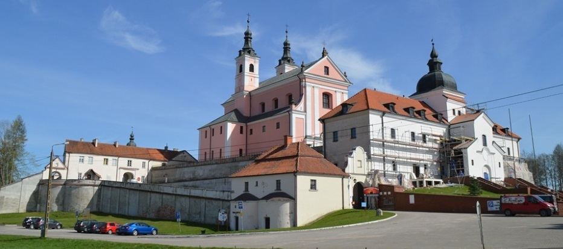
Klasztor pokamedulski w Wigrach, źródło: http://www.suwalki24.pl/_uploads/2018/Listopad/Drobne/klasztor121.jpg
Kolejnym pkt wycieczki był obiad w restauracji „Pod Jelonkiem” w Jeleniewie . Mieliśmy okazję na spróbowanie potraw regionalnych, ale nie tylko. Dalej jedziemy przez Suwalski Park Krajobrazowy, zwany Bieszczadami Północy.
2.5.6 PUNKT WIDOKOWY "U PANA TADEUSZA"
Zatrzymujemy się przy pkt widokowym „U Pana Tadeusza” w Smolnikach. Roztacza się z niego przepiękny widok na jeziora kleszczowieckie: Purwin, Kojle i Perty otoczone wzgórzami porośniętymi lasem. W tle widać najwyższe wzniesienie Suwalszczyzny - Górę Cisową. Nazwa punktu widokowego wzięła się stąd, że widoczny z tego miejsca krajobraz został wykorzystany m.in. w filmie "Pan Tadeusz" Andrzeja Wajdy. Punkt posiada zadaszoną platformę widokową.
2.5.7 BOLCIE-TRÓJSTYK WISZTYNIEC
Mijamy wieś Wiżajny. W oddali widoczne są wiatraki( turbiny wiatrowe) na Rowelskiej Górze. Przejeżdżamy przez tereny dawnych Prus Wschodnich. Docieramy do wsi Bolcie. W miejscowości znajduje się punkt, w którym stykają się granice trzech państw: Polski, Litwy i Rosji (Obwód Kaliningradzki). Punkt ten oznaczony został granitowym słupem z godłami trzech sąsiadujących państw i napisem w języku danego państwa. Nosi nazwę "Wisztyniec". Na planszy znajdującej się najbliżej trójstyku przedstawione zostały zasady, jak poruszać się w tej nadgranicznej strefie. Trzeba pamiętać, że Rosja nie należy do strefy Schengen. Okolice, gdzie znajduje się trójstyk "Wisztyniec" (m.in. gmina Wiżajny) uważane są za polski biegun zimna. Wyświetlacz LED zamontowany na powiatowym parkingu wskazuje aktualną temperaturę tego miejsca.
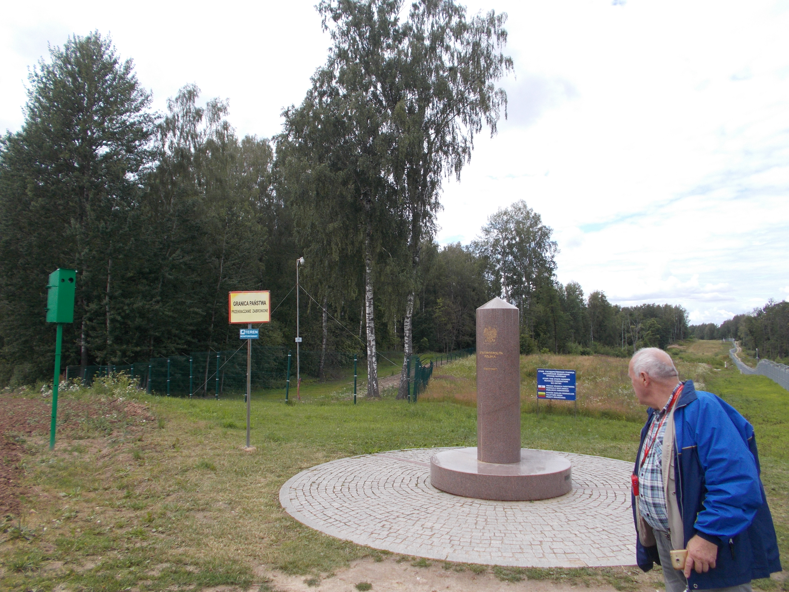 Pogranicze Polski Litwy i Rosji
Dalej jedziemy wzdłuż Obwodu Kaliningradzkiego. Docieramy do dawnych Prus Wschodnich do wsi Stańczyki.
2.5.8 STAŃCZYKI
Zabytkowe mosty w Stańczykach - Akwedukt Puszczy Rominckiej Północne krańce Mazur należą do najrzadziej odwiedzanych zakątków kraju. Właśnie tu, wśród uroczych pagórków i łąk, za wsią Stańczyki, znajdują się potężne wiadukty nieczynnej linii kolejowej Gołdap - Żytkiejmy (31km). Mosty w Stańczykach są najwyższymi na linii i jednymi z najwyższych w Polsce. Długość - 200m i wysokość 36m. Konstrukcja żelbetowa, pięcioprzęsłowa o równych 15m łukach. Architektura charakteryzuje się doskonałymi proporcjami a filary ozdobione są elementami wzorowanymi na rzymskich akweduktach w Pont du Gard. Stąd nazwa - 'Akwedukty Puszczy Rominckiej'.
Dawna linia kolejowa przecina tu potężną, niewspółmierną do rozmiarów niewielkiej rzeczki Błędzianki dolinę. Teren po którym przebiegła linia jest terenem polodowcowym, którego krajobraz charakteryzuje się znacznymi różnicami wysokości względnej. Występują tu głębokie doliny i wąwozy, środkiem których płyną niewielkie rzeczki. Był to fragment budowanej w latach 1917-18 magistrali z Chojnic przez Czersk, Smętowo, Kwidzyn, Prabuty, Morąg, Ornetę, Lidzbark Warm, Bartoszyce, Korsze, Kętrzyn, Węgorzewo, Gołdap, Pobłędzie, Kalwarię do Olity (na Wilno). Ponieważ na trasie Botkuny - Pobledzie cześć obiektów była już do wybuchu wojny gotowa, postanowiono dobudować bliźniacze obiekty dla drugiego toru oraz dodatkowo liczne wiadukty dla dróg kołowych. W Stańczykach pierwszy powstał most południowy (lata 1912 - 14, dokończony w 1917 r.) a most północny w 1918 r. To były ostatnie obiekty podwojone od strony Żytkiejm gdyż dalsze roboty w obliczu końca I wojny światowej przerwano. Od strony Gołdapi budowniczowie doszli do miejscowości Kiepojcie, gdzie rozpoczęto zalewanie podstaw drugiego wiaduktu nad lokalną drogą i prace z tego samego powodu zostały przerwane. Po I wojnie budowa tej magistrali wobec zmian granic i sytuacji politycznej straciła sens więc postanowiono dokończyć jej budowę jako linii lokalnej. W latach 20-tych do zrealizowania pozostała jedynie budowa nasypu na odcinku Kiepojcie - Stańczyki oraz budynków stycyjnych już wg stylu wtedy obowiązującego.
Źródło: Informacje historyczne Roman Witkowski na podstawie dokumentów z archiwum wojennego w Monachium
Według rozkładu jazdy z 1938r. na linii Gołdap - Żytkiejmy - Gąbin kursowały trzy pary pociągów osobowych na dobę. W soboty i niedziele uruchamiano dodatkową parę. Ruch osobowy w latach 1927-1933 nie był wielki na obszarze o jednej z.najniższych gęstości zaludnienia. Po 1933r. uległ jeszcze zmniejszeniu, kiedy to na.polecenie wielkiego łowczego III Rzeszy Hermana Göeringa, cała Puszcza Romincka została otoczona płotem, stając się terenem zastrzeżonym dla poufnych spotkań przywódców niemieckich. Sobotnio-niedzielny pociąg kursował tą linią do 1943r. i przywoził w tą okolicę turystów, grzybiarzy, wędkarzy i narciarzy (zachowały się zdjęcia to ilustrujące). W 1945 r. wycofująca się Armia Czerwona rozebrała tory i .tak jest do dziś.
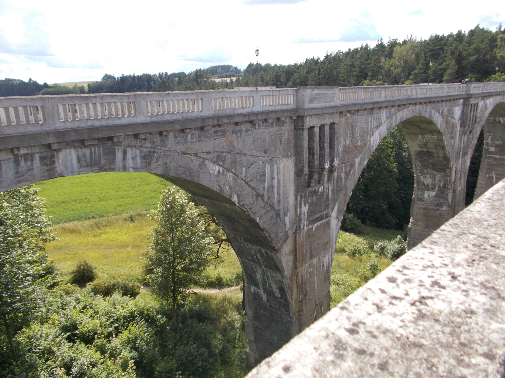 Mosty w Stańczykach
Źródło: http://www.mazury.info.pl/stanczyki/
Po zwiedzeniu mostów wróciliśmy do Augustowa. Grupa, która nie uczestniczyła w wycieczce (A.A. Dyczakowie, Basia i Lusi) załatwili naprawę samochodu. Oprócz tego udało im się jeszcze zwiedzić Wigry i Muzeum Hydrobiologiczne Fauny i Flory, Jezior i Lasów Augustowskich.
2.6 Dzień szósty – 12.07.2019 r.
Jedziemy z Biurem Podróży „ELA – TRAVEL” z Augustowa na Litwę. W planie mamy Troki i Wilno. Wjeżdżamy na Litwę. Zatrzymujemy się w Trokach.
2.6.1 TROKI
2.6.1.1 Historia
Około 5 km na południowy wschód od Trok leży poprzednia stolica Litwy (do XIV wieku), obecnie wieś, Stare Troki. W latach 1413–1795 miasto było centrum województwa trockiego w Wielkim Księstwie Litewskim. Przed 1441 rokiem Troki uzyskały prawa miejskie magdeburskie. W 1609 katoliccy fanatycy spalili miejscowy meczet, świątynię protestancką i synagogę. Do 1939 znajdowało się na obszarze Polski w powiecie wileńsko-trockim ówczesnego województwa wileńskiego; siedziba wiejskiej gminy Troki. Troki były również garnizonem macierzystym Batalionu KOP „Troki”. W 1928 Hadżi Seraja Szapszał objął urząd hachana (zwierzchnika Karaimów) z siedzibą w Trokach. W 1938 sumptem państwa polskiego rozpoczęto w Trokach budowę Muzeum Karaimskiego, które istnieje do dzisiaj. Po II wojnie światowej i utracie miasta przez Polskę, do 1 listopada 1946 z rejonu trockiego w obecne granice Polski wysiedlono ok. 5,4 tys. Polaków, natomiast ok. 13,7 tys. zarejestrowanych do przesiedlenia Polaków pozostało w rejonie. Według danych litewskich w 2001 Polacy stanowili 21% mieszkańców Trok, a w 2011 – 19%. W 1991 na terenie miasteczka i okolicznych terenów (8,2 tys. ha) utworzono Trocki Historyczny Park Narodowy. Miasto jest siedzibą grupy etnicznej i religijnej Karaimów, sprowadzonych tu w średniowieczu z Krymu przez wielkiego księcia litewskiego Witolda Kiejstutowicza.
2.6.1.2 Zamek
Największą atrakcją Trok jest zamek Zamek na największej z trzech wysp jeziora Galwe polecił wybudować wielki książę Witold w latach 1404-1408. Wkrótce po bitwie pod Grunwaldem zamek zaczął tracić swoje znaczenie wojskowe. Dawna twierdza została przekształcona w rezydencję książęcą i bogato udekorowana wewnątrz. . W zamku kilkakrotnie gościł Władysław Jagiełło, zaś Witold zmarł na terenie zamku w 1430 r. Dziesięć lat później w twierdzy został zamordowany jego brat Zygmunt. Pod rządami Zygmunta Starego i Zygmunta Augusta obiekt został przebudowany w stylu renesansowym i przeszedł kolejne prace adaptacyjne w celu przekształcenia w letnią rezydencję. W czasie wojen z Moskwą został zrujnowany, a z odbudowy zrezygnowano. W 1905 r. władze carskie zdecydowały się na konserwację ruin i częściowe odrestaurowanie zamku. Po I wojnie światowej Troki znalazły się na terytorium II Rzeczypospolitej. Prace konserwatorskie rozpoczął polski konserwator zabytków Stanisław Lorentz, i miały one mieć początkowo jedynie charakter konserwatorski i nie przewidywały odbudowy z uwagi na brak ikonografii umożliwiającej rekonstrukcję obiektu. Pierwsze prace wykonano w latach 1929-1930. Po ustąpieniu Lorentza ze stanowiska konserwatora, jego następcy: Ksawery Piwocki w latach 1936-1938, i Witold Kieszkowski w latach 1938-1939 zmienili zakres prac i rozpoczęli prace rekonstrukcyjne, w czasie których dokonano odbudowy wieży południowo-wschodniej, przesklepienia piwnic i sali na pierwszym piętrze oraz konserwacji pozostałości pałacu książęcego. Po II wojnie światowej prace były kontynuowane etapami przez Litwinów. Zamek po odbudowie reprezentuje styl gotycki (według domniemanego stanu z XV wieku). Część zamku zajmuje obecnie muzeum. Na zamku odbywają się również rekonstrukcje historyczne poświęcone średniowieczu.
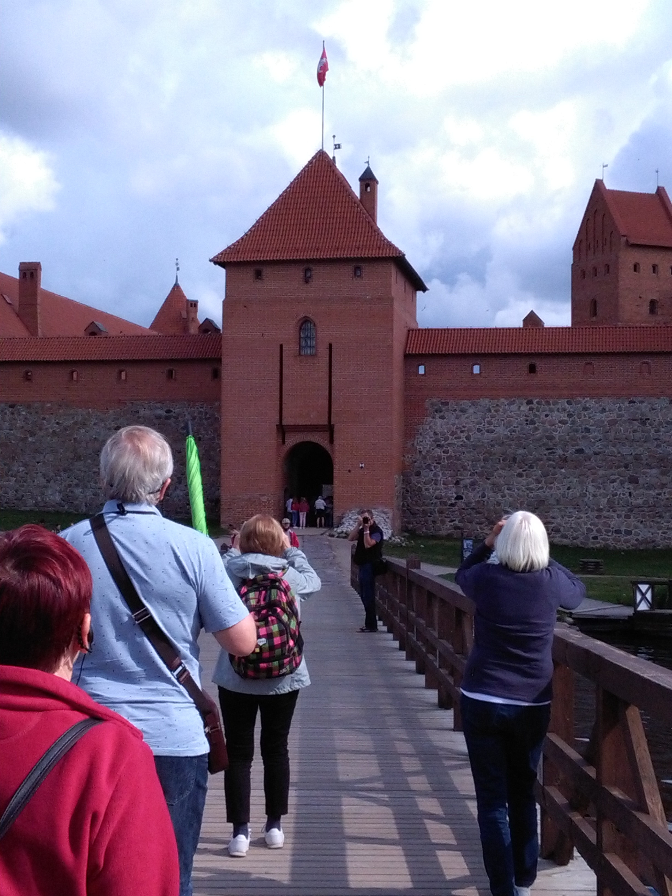 Dojście do zamku
Źródło: https://pl.wikipedia.org/wiki/Zamek_w_Trokach#cite_note-6
Po zwiedzeniu obiektu jedziemy do Wilna.
2.6.2 WILNO
2.6.2.1 Historia
Pierwsza pewna wzmianka o mieście pochodzi dopiero z 1323 r. Przełomowym rokiem dla Wilna był rok 1387. Wielki książę litewski i król polski Władysław Jagiełło w tym właśnie roku w konsekwencji zawartej unii z Polską w Krewie w 1385 r., zorganizował w Wilnie uroczystość chrztu Litwy. W 1387 roku nadał miastu prawa miejskie magdeburskie. W 1413 r. Jagiełło ustanowił w Wilnie województwo wileńskie, które do 1793 roku wchodziło w skład Wielkiego Księstwa Litewskiego. W 1440 r. wielkim księciem litewskim został syn Jagiełły, Kazimierz Jagiellończyk, który nadał miastu kolejne prawa i przywileje. Dla Wilna nastał długotrwały okres pokoju. W latach 1503–1522 wybudowano mury obronne. Najświetniejszy okres w dziejach miasta to czasy zygmuntowskie. Powstała wówczas mennica, arsenał, młyny, most na Wilejce, liczne szpitale i pałace. Pracowali tu architekci i rzeźbiarze włoscy. Wilno stało się miastem wielu narodowości. Na mocy przywileju króla Zygmunta II Augusta z 1568 roku Wilno uzyskało zrównanie swych praw z Krakowem. Król Stefan Batory założył Akademię prowadzoną przez jezuitów, co stało się zalążkiem Uniwersytetu Wileńskiego. Miasto stało się dla Żydów „Jerozolimą Północy” Działała tu jedna z najwybitniejszych szkół talmudycznych na świecie. Rozwój miasta poważnie zahamował wielki pożar w 1610 Miasto posiadało prawo do czynnego uczestnictwa w akcie wyboru króla.
W 1795 miasto znalazło się w zaborze rosyjskim i stało się stolicą guberni. W XIX wieku Wilno było miejscem rozwoju licznych patriotycznych organizacji np. filaretów, filomatów, Związek Patriotyczny i Szubrawców. Według spisu ludności z 1897, w Wilnie Litwini stanowili 2% ludności, a Polacy 30,1%. W grudniu 1862 uruchomiono Kolej Warszawsko-Petersburską, której Wilno stało się ważnym węzłem. W latach 1915–1918 Wilno było okupowane przez Niemców. Po ustąpieniu Niemców rozgorzał polsko-litewski konflikt o Wilno. Podczas wojny 1920 miasto zostało zdobyte dwukrotnie przez Armię Czerwoną . Sowieci, uciekając, przekazali Wilno Litwinom. Piłsudski aby zająć Wilno, posunął się do podstępu. Zlecił gen. Lucjanowi Żeligowskiemu, dowódcy Litewsko-Białoruskiej Dywizji Piechoty, upozorować „bunt”. 9 października 1920 oddziały Żeligowskiego weszły do miasta. Proklamowano utworzenie Litwy Środkowej. 20 lutego 1922 Sejm Litwy Środkowej przyjął uchwałę o włączeniu Litwy Środkowej do Polski; Wilno zostało stolicą województwa wileńskiego. 19 września 1939 Wilno zajęła Armia Czerwona. 26 października 1939 Sowieci przekazali miasto Litwinom . 5 czerwca 1940, ponownie je zajęli. 14 lipca 1940 zaczęły się wywózki na Syberię. W czasie wojny prześladowania i deportacje objęły ok. 35 tys. mieszkańców Wileńszczyzny, głównie polskiego pochodzenia. 24 czerwca 1941 Wilno zajął Wehrmacht. Wycofujący się Sowieci zamordowali co najmniej kilkuset więźniów z wileńskich więzień i aresztów. W latach 1941–1944 we wsi Ponary niemiecka SS i litewskie Ypatingasis būrys (YB) zamordowało ok. 100 tys. osób, w tym 72 tys. Żydów i około 1,5–2 tys. Polaków. 7 lipca 1944 r. skoncentrowana pod miastem polska Armia Krajowa rozpoczęła atak na Wilno (operacja Ostra Brama). W kilka dni po nadejściu Armii Czerwonej NKWD aresztowało wszystkich polskich żołnierzy i oficerów oraz wydarło Wilno z rąk polskich. Następnie Litwę razem z Wilnem ponownie włączono do Związku Radzieckiego. Po 1944 r. większość /polskich mieszkańców została przesiedlona. Od tego czasu w Wilnie zaczęli masowo osiedlać się Litwini i Rosjanie. 11 marca 1990 Litwa ogłosiła deklarację niepodległości, a Wilno zostało stolicą niepodległej Litwy.
Źródło: https://pl.wikipedia.org/wiki/Wilno
Wilno to wyjątkowe miasto, od wieków słynące z wielokulturowości, która jest widoczna do dziś. Połączenie wielokulturowej gwary z bogatą historią miasta, interesującą architekturą, zielenią drzew oraz krętymi ulicami i ślepymi zaułkami tworzą niepowtarzalny, wręcz magiczny klimat. Na zwiedzanie Wilna mamy zaledwie kilka godzin; zwiedzanie odbywało się w dużym tempie. Nie mniej udało się przewodnikowi pokazać nam miejsca, które są szczególnie ważne dla polskiego dziedzictwa i naszej spuścizny narodowej. Wilno było dawniej jednym z najważniejszych polskich miast, to właśnie z tym miastem związani byli silnie dwaj najważniejsi narodowi wieszcze – Juliusz Słowacki i Adam Mickiewicz. To z tym miastem mocno związany był Józef Piłsudski.
2.6.2.2 Starówka Wileńska
Starówka Wileńska jest wizytówką stolicy. Najstarsza część miasta na lewym brzegu Wilii jest żywą historią stolicy Litwy. Największa (360 ha, 1487 budynków, 70 ulic) i najpiękniejsza starówka w Europie Środkowo-Wschodniej ze względu na swą unikatową wartość kulturową dla ludzkości w 1994 roku została wpisana na Listę Światowego Dziedzictwa Kulturowego UNESCO jako przykład kształtowania się miasta. Historyczny obszar Starego Miasta zajmuje teren otoczony w średniowieczu murem obronnym. Jest to miejsce szczególne, prawdziwe serce i duma miasta Wilna, które w przeszłości było areną licznych wydarzeń historycznych. Stare Miasto powstało w miejscu osad bałtyckich z V-VI wieku. Wilno było związane z wydarzeniami o ogromnej wadze historycznej. Było miastem handlu i szerokich kontaktów. Na Starówce zachowało się ponad 280 zabudowań gotyckich. Ta część miasta najbardziej ucierpiała w latach II wojny światowej, gdyż zniszczono 40% budynków.
Źródło: http://poznajwilno.pl/turystyka/warto-zwiedzic/polecane-top20/
2.6.2.3 Ostra Brama (Matka Boska Ostrobramska)
Ostra Brama to gotycka brama miejska wzniesiona w latach 1503–1514. Stanowi ona pozostałość dawnych fortyfikacji miejskich, wraz z przylegającym do niej fragmentem muru obronnego. .Sama brama nie ma takiej mocy, by przyciągać tłumy. Zasługa w tym pochodzącemu z XVII wieku obrazu Matki Boskiej Ostrobramskiej (Matki Miłosierdzia, Królowej Korony Polskiej). Umiejscowiony w niewielkiej kaplicy obraz uważany jest przez wiernych za cudowny. Świadczą o tym m.in. wota z wygrawerowanymi podziękowaniami. Przykryty pozłacaną suknią i złotymi koronami obraz wydaje się lśnić lub – jak to napisał Adam Mickiewicz w inwokacji do „Pana Tadeusza” – świeci. Na północnej elewacji Ostrej Bramy znajdowała się pierwotnie nisza. W 1671 lub 1672 r. dobudowano od strony północnej drewnianą kaplicę. Spłonęła ona w 1711 r, a już w roku następnym odbudowano ją jako murowaną. Nie wiadomo dokładnie, kiedy został umieszczony w niej cudowny wizerunek Matki Boskiej. Restauracje kaplicy miały miejsce w latach 1829–1830, kolejne w latach 1927–1932 oraz w 1993 r. przed wizytą Jana Pawła II. Na początku 2010 rozpoczęto kolejny remont kaplicy w Ostrej Bramie, określony wkrótce jako szkodliwy. W trakcie remontu zostały m.in. zdemontowane zabytkowe drzwi, uszkodzono płytki ceramiczne z 1932 poprzez położenie na nich nowej podłogi, zmieniono poręcze, a schody sprzed ponad 100 lat, zastąpiono nowymi z imitacji granitu.
„To, co zrobiono z kaplicą Matki Boskiej Ostrobramskiej w Wilnie, to duża strata pod względem konserwatorskim i wstyd dla Litwy, że nie potrafi należycie zadbać o zabytki.”
– przewodnicząca Państwowej Komisji Dziedzictwa Kulturowego Grażyna Dremaite
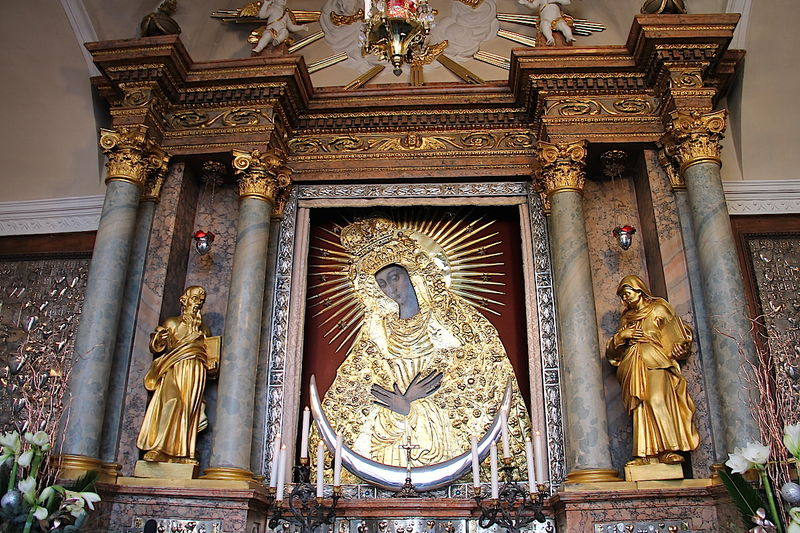
Matka Boska Ostrobramska, źródło: https://www.podrozepoeuropie.pl/system/gallery/images/images/000/005/336/large/Obraz-Matki-Boskiej-Ostrobramskiej-w-kaplicy-Ostra-Brama-w-Wilnie.JPG?1479841370
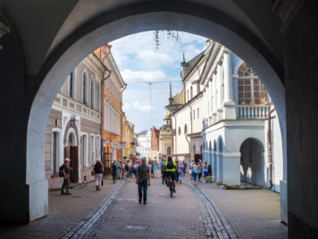
Spacer po Wilnie, źródło: https://osiemstop.pl/wp-content/uploads/2018/09/wilno-62-356x267.jpg
2.6.2.4 Plac Katedralny w Wilnie
Sercem miasta jest Plac Katedralny, którego głównymi elementami jest bazylika archikatedralna św. Stanisława Biskupa i św. Władysława oraz dzwonnica. Prawdopodobnie pierwsza katedra powstała już w 1251 w miejscu pogańskiej świątyni. Obecny wygląd bazylika zawdzięcza Wawrzyńcowi Gucewiczowi, który pod koniec XVIII wieku przebudował ją w stylu klasycyzmu. W środku jednak bez problemu można odnaleźć ślady innych stylów. Miejscem, którego nie można pominąć, jest nawiązująca do Jagiellonów kaplica św. Kazimierza z XVII wieku. Wzorowana na Kaplicy Zygmuntowskiej na Wawelu. Zachwyca piękną sztukaterią, freskami oraz pozłacanymi figurami polskich królów. Ciekawostką związaną z kaplicą jest obraz patrona, na którym święty ma 3 dłonie. W krypcie pod kaplicą znajdują się groby Aleksandra Jagiellończyka (jedynego polskiego króla pochowanego w Wilnie), dwóch żon Zygmunta Augusta i serce Władysława IV Wazy. Stojąca tuż obok katedry dzwonnica to dawna baszta przebudowana w 1530 roku, będąca w przeszłości elementem murów obronnych Wilna. W środku znajduje się ekspozycja dzwonów, stary miejski zegar i jest to jedno z miejsc, skąd można podziwiać panoramę miasta. Nowością na placu jest pomnik Wielkiego Księcia Giedymina, założyciela Trok i Wilna. W 2013 roku otwarto również dla zwiedzających odbudowany wielkim nakładem finansowym Zamek Wielkich Książąt Litewskich.
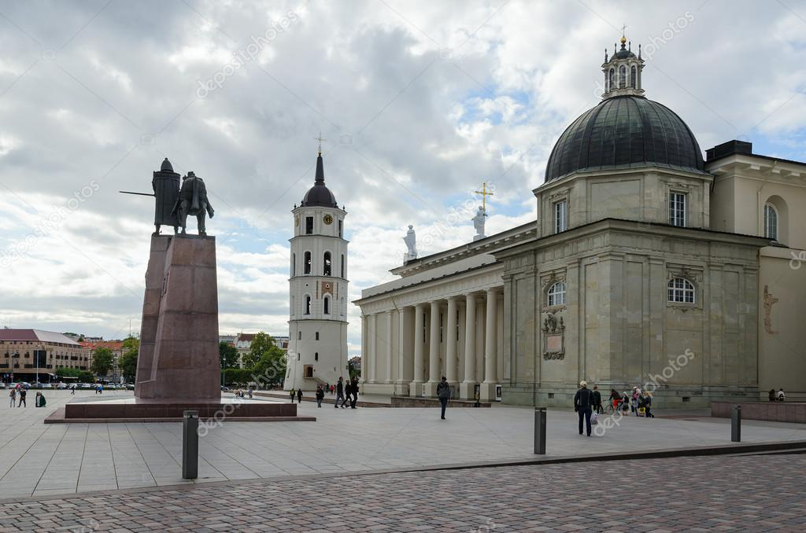
Plac Katedralny, źródło: https://st2.depositphotos.com/3288999/7993/i/950/depositphotos_79933140-stock-photo-vilnius-cathedral-square.jpg
2.6.2.5 Kościół św. Anny i pomnik A. Mickiewicza
Gdyby szukać kościoła, który najpiękniej prezentuje się z zewnątrz, to bezapelacyjnie wygrałby kościół św. Anny. Powstały na początku XVI wieku i stanowi wspaniały przykład ceglanego późnego gotyku. Piękna koronkowa fasada zbudowana przy użyciu 33 różnych rodzajów cegieł ceramicznych pomalowanych na czerwono, wg legendy zachwyciła nawet Napoleona Bonaparte. Ponoć tak był zachwycony finezyjnością architektury kościoła, że chciał go na dłoni przenieść do Paryża. Dochodząc do przepięknego gotyckiego kościoła św. Anny widzimy tuż obok pomnik naszego narodowego wieszcza, który z rozmarzeniem spogląda w kierunku wileńskiej starówki. Warto zwrócić uwagę, że niejako na tyłach kościoła znajduje się drugi, znacznie większy i nie mniej okazały w środku, kościół św. Franciszka i św. Bernarda.
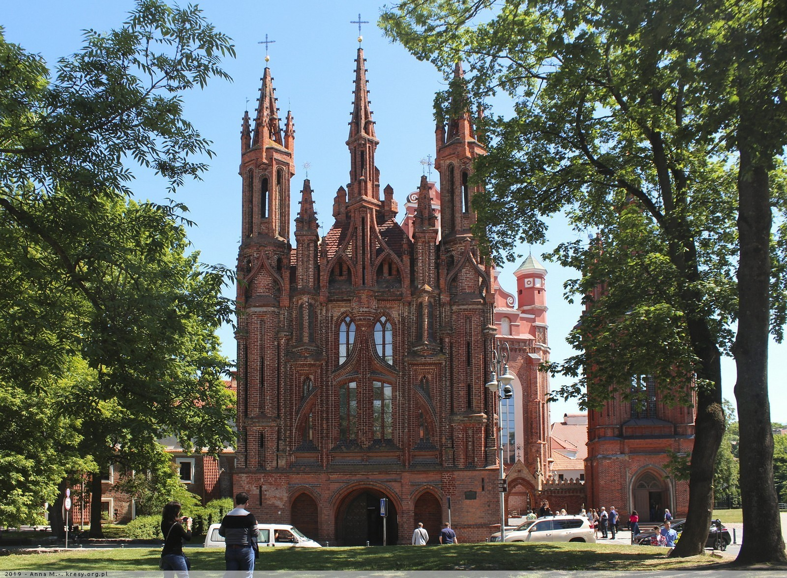
Kościół Św. Anny, źródło: https://polska-org.pl/foto/8103/Kosciol_sw_Anny_ul_Maironio_Wilno_8103926.jpg
Czytaj więcej na: https://idziemydalej.pl/wilno-spacer-po-starym-miescie/
2.6.2.6 Kościół św. Piotra i Pawła na Antokolu
O ile kościół św. Anny zachwyca fasadą, o tyle najpiękniejsze wnętrze ma kościół św. Piotra i Pawła. Wg legendy stoi on w miejscu, gdzie niegdyś znajdowała się świątynia pogańskiej bogini Mildy. Zbudowany w 1676 roku kościół, został ufundowany przez hetmana Michała Kazimierza Paca w podzięce za wyzwolenie Wilna od Rosjan. 2 000 rzeźb stiukowych o tematyce biblijnej, historycznej i mitologicznej oszałamiają. Można nawet odnieść wrażenie, że niektóre rzeźby są żywe i chcą wyjść ze ścian. Na tle jednolitej białej kolorystyki bardzo dobrze widać przepiękny kryształowy żyrandol w kształcie łodzi. Ma on być pamiątką zatonięcia podczas transportu ołtarza głównego o kryształowych kolumnach, zamówionego przez Paca we Włoszech. To kolejne miejsce, w którym można odnaleźć polskie akcenty.
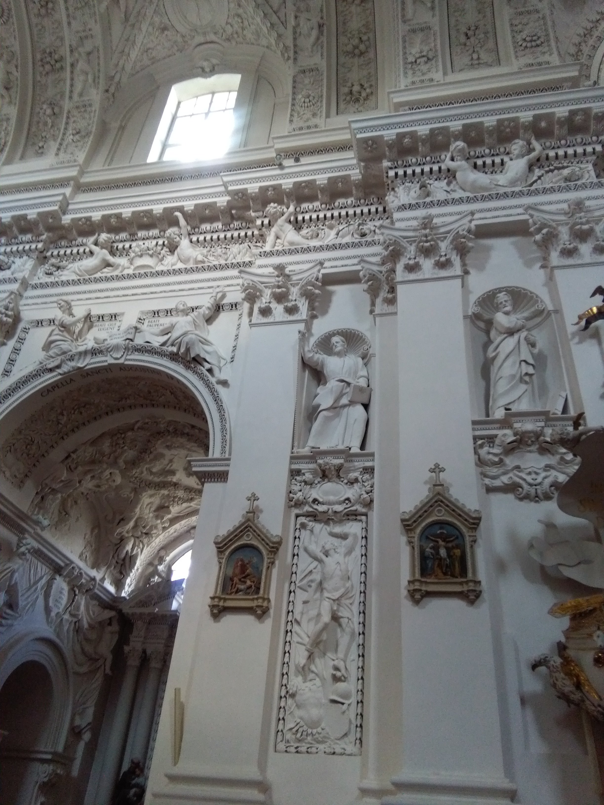 Wnętrze kościoła
Źródło: https://podrozebezosci.pl/wilno-na-weekend-atrakcje-co-warto-zobaczyc-zwiedzic-litwa-stolica/
2.6.2.7 Cmentarz na Rossie
Cmentarz na Rossie w Wilnie jest jedną z czterech polskich nekropolii narodowych. W skład zespołu cmentarnego wchodzi Stara Rossa (1769/1801), Nowa Rossa (1847), Cmentarz Wojskowy (1920), mauzoleum Matka i Serce Syna (1936). Jest jednym z najpiękniejszych zespołów cmentarnych z wieloma zabytkowymi pomnikami oraz nagrobkami w tej części Europy. Cmentarz został założony w 1769 r., a zamknięty w 1967 r. Od roku 1969 jest wpisany do rejestru zabytków. Przekraczając bramę Cmentarza Na Rossie, nie sposób nie poczuć wzruszenia. Oto w otoczeniu biało-czerwonych kwiatów i płonących zniczy znajduje się mauzoleum matki Piłsudskiego, u której stóp pochowano jego serce. Wydaje się, że nad ich spokojem czuwa 242 żołnierzy, których jasne mogiły jak warta honorowa widnieją po bokach.
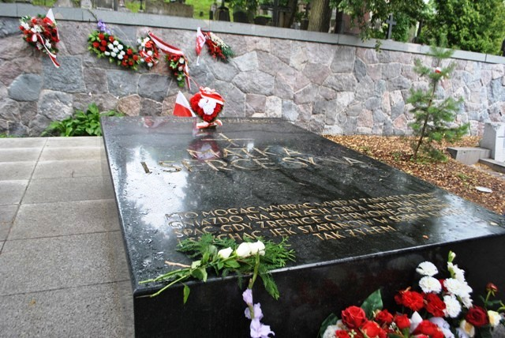
Mauzoleum matki Piłsudskiego, źródło: https://www.dladziedzictwa.org/wp-content/uploads/2013/10/Wilno_Rosa_grob-matki.jpg
Cmentarz Na Rossie to polska nekropolia narodowa, przepełniona historią i skłaniająca do zadumy. Położony malowniczo na kilku pagórkach pełen jest nagrobków z nazwiskami znanymi z podręczników. To bardzo piękne i urokliwe miejsce, które jednak bez dużych nakładów finansowych może zniknąć. Mamy nadzieję, że to nie nastąpi i szybko znajdą się środki na ratowanie nekropolii.
 Cmentarz na Rosie
Cmentarz na Rosie
2.6.2.8 Cerkiew Świętego Ducha
Przed wojną Wilno zamieszkiwali ludzie o różnej narodowości oraz wierze. Ta mieszanka, chociaż o innym składzie, pozostała do dziś. Idąc ulicą Ostrobramską, co chwilę mija się kościół lub cerkiew. Najpiękniejszą z cerkwi jest Cerkiew Świętego Ducha, będąca główną świątynią prawosławną na Litwie. Pierwsza drewniana cerkiew położona na tym miejscu została wzniesiona z fundacji sióstr Teodory i Anny Wołowicz w 1597 r. W 1850 r. arcybiskup wileński i litewski Józef (Siemaszko) uczynił świątynię sanktuarium męczenników Antoniego, Jana i Eustachego, Obecnie zachowana cerkiew jest utrzymana w stylu klasycystycznym, chociaż (zwłaszcza we wnętrzu) wyraźnie widoczne są ślady wcześniejszego stylu barokowego. Fasada obiektu wybudowana została według zasad symetrii, z dwiema wieżami zwieńczonymi kopułami o wysokości 49 metrów. Jedyną dekorację wież stanowią doryckie pilastry. W przeszłości fasada posiadała więcej cech barokowych, w tym bogato zdobiony fronton, został on jednak usunięty w czasie przebudowy w 1873 r. Wejście do cerkwi prowadzi przez wysunięty przedsionek.Układ i dekoracja wnętrza cerkwi zdradza wpływy architektury wileńskich kościołów katolickich, przede wszystkim położonego w okolicy kościoła św. Kazimierza. Obiekt wzniesiony jest na planie krzyża łacińskiego, całość jest trójnawowa. Barokowy ikonostas, według projektu Glaubitza, pochodzi z lat 1753–1756. W cerkwi znajduje się 20 ikon autorstwa Iwana Trutniewa, w tym ikona Zwiastowania ufundowana przez carycę Marię Aleksandrowną.
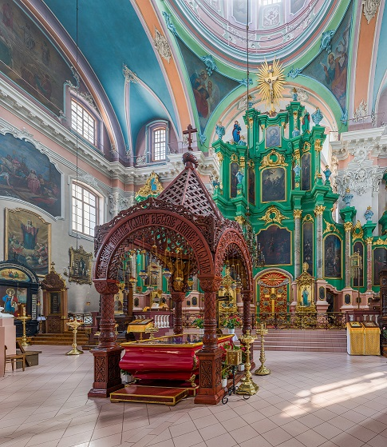
Wnętrze Cerkwi, źródło: http://przewodnik-wilno.lt/images/relikwie%20w%20cerkwi%20w%20wilnie.jpg
Źródło: https://pl.wikipedia.org/wiki/Cerkiew_%C5%9Awi%C4%99tego_Ducha_w_Wilnie
2.6.2.9 Muzeum Adama Mickiewicza
Muzeum Adama Mickiewicza w Wilnie mieści się w mieszkaniu przy zaułku Bernardyńskim (ul. Bernardinų g. 11) w Starym Mieście, gdzie od Wielkanocy do czerwca 1822 r. żył poeta. Dokładna data założenia muzeum nie jest znana. Najwcześniejszy fakt jego istnienia pochodzi z 1899 roku. Jest to ilustracja z napisem “pokój w Wilnie” z “Grażyny” w albumie Władysława Bełzy wydanym we Lwowie. W tym mieszkaniu Mickiewicz pracował również nad I tomem “Ballad i romansów” oraz II i IV częścią “Dziadów”. Właściciel mieszkania, lekarz Jan Życki, u którego student Uniwersytetu Wileńskiego Mickiewicz wynajmował pokój na parterze, umieścił tablicę pamiątkową z napisem w języku polskim informującą o tym, że tu została napisana “Grażyna” (znaleziono go pod warstwą tapet). Prywatne muzeum, które było czynne do drugiej wojny światowej, w wykupionym na własność mieszkaniu w 1911 r. urządził wydawca, redaktor “Kwartalnika Litewskiego”, historyk Jan Konrad Obst. Chciał on ocalić pamięć o wieszczu, dlatego w 18 metrowym pokoju zgromadził pamiątki, bibliotekę, portrety poety z różnych okresów jego życia, autografy oraz rzeczy opisane w “Panu Tadeuszu”. Jan Konrad Obst udostępnił zwiedzającym ekspozycję tak piękną, że po pokoju spacerowało się jak po prawdziwym salonie szlacheckim. Muzeum nie było na liście informatorów turystycznych tamtych czasów, może dlatego, że po wydarzeniach 1863 roku nie mogło działać legalnie. W 1938 r. Jan Konrad Obst podarował mieszkanie i zbiory muzealne Uniwersytetowi Wileńskiemu. Podczas drugiej wojny światowej zostało ono częściowo rozgrabione. Muzeum zostało odnowione i ponownie otwarte w 3 pokojach w setną rocznicę urodzin Mickiewicza w 1955 r. dzięki staraniom prof. Uniwersytetu Wileńskiego Lewa Władymirowa, rektora Jonasa Buczasa (lit. Jonas Bučas) i prof. Czesława Kudaby (lit. Česlovas Kudaba). Odtąd należy ono do Biblioteki Uniwersytetu Wileńskiego. Liczba zwiedzajacych przekracza 20 tys. osób w ciągu roku.
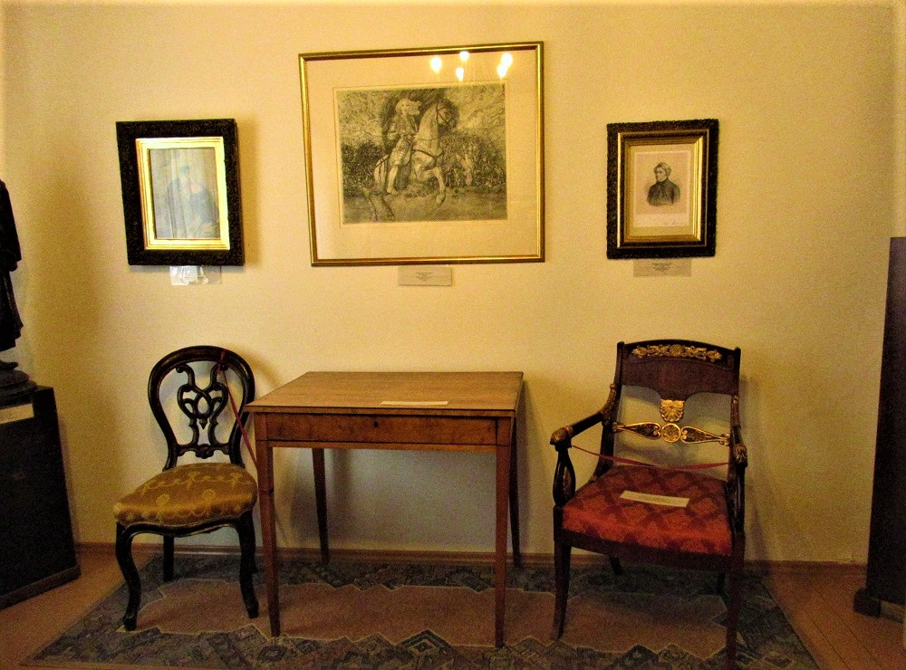
Muzeum Adama Mickiewicza, źródło: https://3.bp.blogspot.com/-3tVz1vModvI/XM8oT1ZkXHI/AAAAAAAAH8M/8L5k4jLRyHcsTUF1VSUrSKCqQyzxfVLZwCLcBGAs/s1600/IMG_6352aa.jpg
Żródło: http://poznajwilno.pl/miasto/muzea/wszystkie-placowki/muzeum-adama-mickiewicza/
W czasie krótkiego odpoczynku na który pozwolił nam Pan przewodnik , wypiliśmy dobrą kawę i zjedliśmy litewskie lody w lokalu przy urokliwej ulicy Ostrobramskiej.
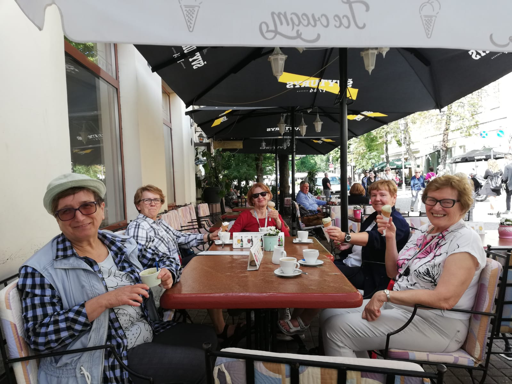 Kawa w Wilnie
2.6.2.10 Inne zabytki
Na zwiedzenie Wilna, podobnie jak w Grodnie, mieliśmy kilka godzin. W tym czasie niemożliwe jest zobaczenie wszystkich cennych zabytków i obiektów w tak historycznym mieście. Jeżeli dane nam będzie zawitać do Wilna ponownie to trzeba koniecznie jeszcze zobaczyć:
- Zabytki gotyckie:
- Baszta Giedymina – pozostałości Zamku Górnego,
- Kościół św. Franciszka i św. Bernarda (Bernardynów) (XVI w.),
- Kościół św. Mikołaja (XV w.) – najstarsza gotycka budowla miasta,
- Kościół św. Trójcy (XVI w.) – znajduje się tu pierwszy obraz Jezusa Miłosiernego. Miasto leży na trasie Europejskiego Szlaku Gotyku Ceglanego .
- Zabytki renesansowe:
- Zamek Dolny (rekonstrukcja),
- Alumnat papieski
- Zabytki barokowe:
- Kościół św. Kazimierza w Wilnie – pierwsza barokowa świątynia miasta,
- Uniwersytet Wileński,
- Kościół pw. Wniebowzięcia NMP (pierwotnie gotycki z pocz. XV w., po zniszczeniach odbudowany w stylu barokowym w latach 1773–1780),
- Kościół św. Michała (Bernardynek),
- Cerkiew i klasztor Bazylianów (XVII w.),
- Kościół Misjonarzy (1695-1730),
- Kościół św. Jakuba i Filipa (1690-1737),
- Kościół św. Jana Chrzciciela i św. Jana Ewangelisty (przebudowany 1738–1749),
- Kościół św. Katarzyny (1622),
- Kościół św. Kazimierza (1604-1616) przebudowany (XVII-XIX w.),
- Kościół św. Rafała (XVIII w.),
- Kościół św. Szczepana w Wilnie (ok. 1600),
- Kościół św. Teresy (1635-1650),
- Kościół Trynitarzy na Antokolu (1694-1717) cerkiew do 1919 r.,
- Kościół Wizytek (1715-1760),
- Kościół Wszystkich Świętych i klasztor karmelitów w Wilnie (1620-1631, rozbudowany XVIII w.),
- Kościół Świętego Ducha, pierwotnie gotycki, w 2 połowie XVIII w. po zniszczeniu przez pożar wzniesiony na nowo.
- Zabytki klasycystyczne:
- Kościół ewangelicko-reformowany (XVI-XVIII w.),
- Pałac Tyszkiewiczów,
- Pałac Chodkiewiczów,
- Pałac Tyzenhauzów,
- Pałac Paców przy ul. Wielkiej.
- Zabytki eklektyczne i neostylowe:
- Synagoga Chóralna (1903),
- Kościół ewangelicko-augsburski (XIX w.),
- Filharmonia (1899-1902),
- „Zameczek” (1894-1900, J. Januszewski, A. Filipowicz-Dubowik),
- Więzienie na Łukiszkach,
- Muzeum Ofiar Ludobójstwa (w Wilnie)
- Zabytki XIX- i XX-wiecznej architektury cerkiewnej – styl bizantyjsko-rosyjski i eklektyczny:
- Sobór Przeczystej Bogurodzicy w Wilnie (1868 – rekonstrukcja i przebudowa budowli średniowiecznej),
- Cerkiew św. św. Konstantyna i Michała (pocz. XX w.),
- Cerkiew św. Aleksandra Newskiego (pocz. XX w.),
- Cerkiew Ikony Matki Bożej „Znak” (XIX-XX w.),
- Cerkiew św. Michała Archanioła (XIX w.),
- Cerkiew św. Katarzyny (XIX w.),
- Cerkiew św. Mikołaja (XIX-wieczna przebudowa starszej cerkwi),
- Molenna, XIX w.
- Zabytki modernistyczne sprzed 1939 r. :
- Wzgórze Trzech Krzyży (1926, Antoni Wiwulski),
- Dom Towarowy Braci Jabłkowskich (1921-1923, Karol Jankowski, Franciszek Lilpop),
- Osiedle mieszkaniowe na Antokolu inspirowane Bauhausem (1930-1931, F. Wojciechowski),
- Izba Przemysłowo-Handlowa (1931, Z. Tarasin),
- Dom Akademicki (1931, Aleksander Kodelski),
- Bank Gospodarstwa Krajowego (1937-1938, Józef Pańkowski, Stanisław Gałęzowski),
- Gmach PKO (1936-1938, Z. Puget, Juliusz Żórawski, przeb. 1996, A. Nasvytas),
- Ubezpieczalnia Społeczna (1938–1939, S.Murczyński, Jerzy Sołtan),
- Lombard (1938, I. Helman-Zatorska),
- Szkoła (1938–1939, Romuald Gutt)
- Inne zabytki:
- Meczet (XIX w.) zburzony w latach pięćdziesiątych,
- Kienesa karaimska (1922)
Źródło: https://pl.wikipedia.org/wiki/Wilno#Zabytki
Pełni wrażeń wróciliśmy do Augustowa.
2.7 Dzień siódmy – 13.07.2019 r.
Zmieniamy bazę. Przenosimy się do Lewkowa Starego. Pierwszym miejscem w którym się zatrzymujemy jest Sanktuarium Maryjne w Różanymstoku
2.7.1 RÓŻANYSTOK
Budowę kościoła pod wezwaniem Ofiarowania Najświętszej Maryi Panny rozpoczął w roku 1759 przeor dominikanów o. Remigiusz Zahorowski. Wznosił go na wzór kościoła jezuickiego w Grodnie. Kościół wybudowano w stylu barokowym, natomiast wystrój wnętrza i ołtarze maja ornamenty dekoracyjne rokokowe. Kościół jest trzynawowy, wzniesiony na rzucie krzyża łacińskiego, prezbiterium jest zwrócone w kierunku południowym. Konsekracja świątyni odbyła się w roku 1785. Po upadku powstania listopadowego, w 1846 roku car dokonał kasaty klasztoru dominikańskiego, a po upadku powstania styczniowego postanowił zakonników wypędzić. Kościół w 1866 r zamieniono w cerkiew. Carat w dobie rusyfikacji chciał wymazać Różanystok z religijnej świadomości Polaków. W 1901 r. car sprowadził do klasztoru mniszki prawosławne z Grodna. Nadano kościołowi cerkiewny charakter. Powstaje monaster Narodzenia Matki Bożej. Zniszczono organy, dzwony, rzeźby zdobiące ołtarze, ambonę fasady kościoła. W 1915 r mniszki prawosławne uciekają z Różanegostoku zabierając dzwony z wież oraz cudowny obraz z oprawą, wotami i klejnotami. Niemieccy żołnierze zamienili klasztor w koszary wojskowe; oddali go katolikom, gdy przegrali wojnę. W listopadzie 1918 r. nastąpiło oficjalne poświęcenie kościoła. W 1919 r do Różanegostoku przybyli Salezjanie, a w 1922 r z Włoch siostry Salezjanki. W 1929 – wprowadzono do kościoła nowy obraz Matki Boskiej . Obraz ten czczony jest do dziś. W 1939 r. wybuch wojny spowodował zahamowanie działalności ośrodka różanostockiego; część budynków uległa zniszczeniu. Po wojnie swoją działalność oświatowo-wychowawczą jako pierwsze rozpoczyna gimnazjum; w 1949 r powstaje Niższe Centrum Duchowe dla archidiecezji w Białymstoku, diecezji łomżyńskiej i diecezji w Drohiczynie. W 1954 r. szkoła i klasztor zostały przez władze państwowe zamknięte. Odtąd działał tu zespół szkół rolniczych. Salezjanom pozostała tylko praca duszpasterska oraz opieka nad Sanktuarium. W latach 1958/1959 Sanktuarium Różanostockie uroczyście obchodziło 300-lecie kultu Matki Bożej Różanostockiej. W 1987 r. nadano kościołowi Ofiarowania Najświętszej Maryi Panny tytułu Bazyliki Mniejszej
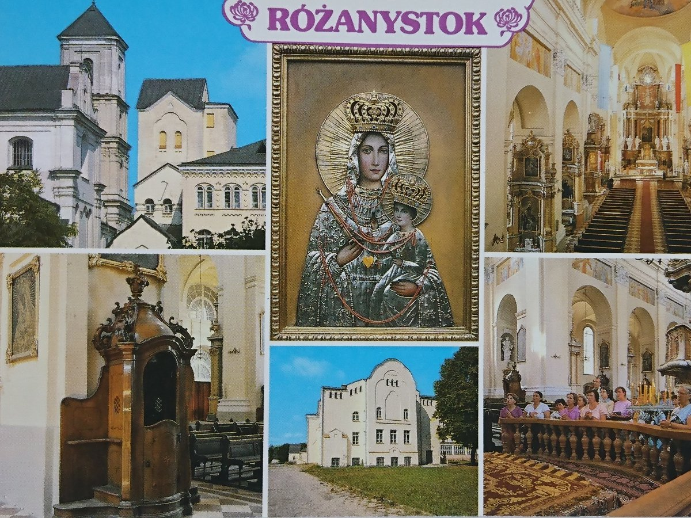
Bazylika Różanystok, źródło: https://static3.redcart.pl/templates/images/thumb/7148/1500/1500/pl/0/templates/images/products/7148/1abd48d7cc29c12a6cbcfa1091820444.jpg
Kolejnym naszym przystankiem na trasie jest Sokółka.
2.7.2 SOKÓŁKA
2.7.2.1 Historia
Pierwotnie Sokółka była wsią koronną; w latach 1586–1589 stała się wsią targową; prawa miejskie otrzymała 28 lutego 1609 r. od Zygmunta III. W roku 1717 miasto znalazło się na drodze pocztowej między Warszawą i Mitawą, a w mieście osadzono urzędników pocztowych z rodziny Michaelisów. W drugiej połowie XVIII wieku podskarbi nadworny litewski Antoni Tyzenhauz sprowadził rzemieślników i rozbudował miasto. W czasie jego administrowania dokonany został nowy podział ekonomii litewskich, w wyniku czego Sokółka została siedzibą guberni. Tyzenhauz na obszarze ekonomii grodzieńskiej wybudował szereg fabryk i manufaktur, które później upadły, jednak wprowadził na nowo wcześniej zniesioną pańszczyznę. Od 1796 roku miasto znalazło się w zaborze pruskim, A od roku 1807 Sokółka była w zaborze rosyjskim. 30 kwietnia 1919 roku Sokółka znalazła się w granicach Polski. W okresie międzywojennym miasto znane było z garbarni oraz targów końskich i bydlęcych. 21 września 1939 roku miasto zostało zajęte przez oddziały sowieckie; w czerwcu 1941 r. zajęły je wojska niemieckie. Sowieci zbudowali w Sokółce pomnik Lenina, który latem 1941 Niemcy kazali zniszczyć miejscowym Żydom. W 1941 r. w południowo-wschodniej części miasta Niemcy utworzyli getto dla ludności żydowskiej. Mieszkańcy getta pracowali w fabryce filcu, w warsztatach szewskich i krawieckich oraz wykonywali roboty drogowe. Wybudowali także zalew w Sokółce. Getto zlikwidowano w styczniu 1943 r. Żydzi z sokólskiego getta zginęli w obozie zagłady w Treblince i w Auschwitz-Birkenau. W latach 1942–1944 w Sokółce znajdował się niemiecki obóz pracy. Podczas likwidacji obozu część więźniów rozstrzelano, a część zwolniono. Od 1944 w okolicach miasta silna była partyzana antykomunistyczna.
2.7.2.2 Kolegiata Św. Antoniego
Zatrzymujemy się przy kolegiacie Św. Antoniego Kolegiata św. Antoniego w Sokółce i Sanktuarium Cudu Eucharystycznego jest zabytkową świątynią rzymskokatolicką w stylu klasycystycznym z dwiema wieżami wybudowaną w latach 1840-1848 dzięki staraniom dziekana księdza Józefa Kryszczuna. W dniu 9 czerwca 1850 roku kościół konsekrował bp wileński Wacław Żyliński. Dziekan ks. Anzelm Noniewicz świątynię tę w latach 1901-1904 powiększył, dodając w tym samym stylu dwie nawy i kaplice boczne, a także zakrystię za ołtarzem głównym i pomieszczenia pomocnicze.9 kwietnia 2009 r. kościół pw. św. Antoniego w Sokółce został podniesiony do rangi kościoła kolegiackiego i została przy nim ustanowiona Kapituła Kolegiacka Najświętszego Sakramentu. 25 marca 2017 r. kolegiata ustanowiona sanktuarium. Kościół jest siedzibą parafii pw. św. Antoniego w Sokółce.
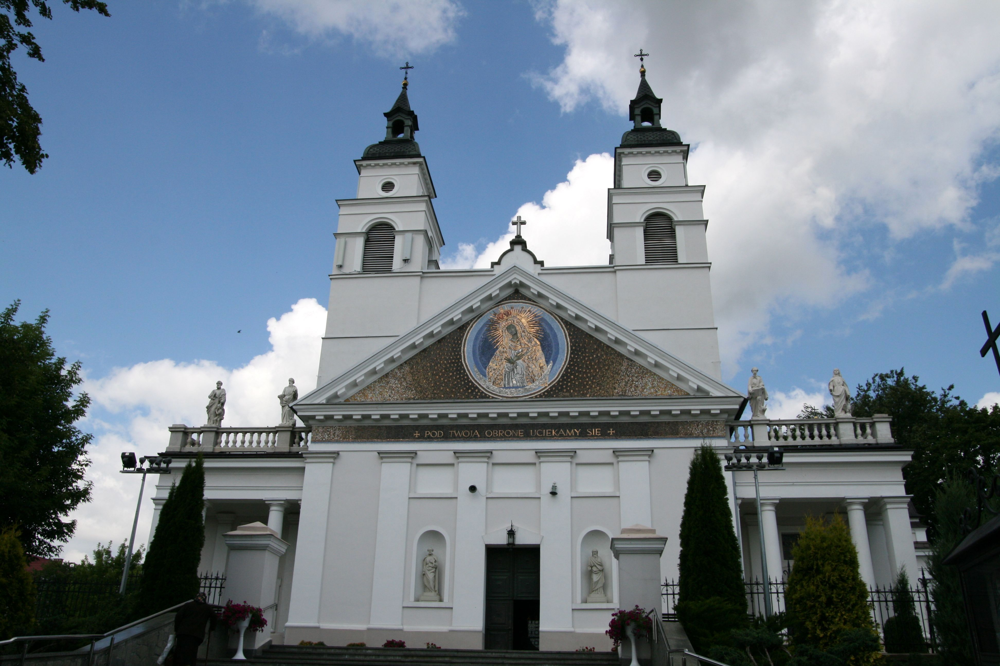
Kolegiata Św. Antoniego, źródło: https://upload.wikimedia.org/wikipedia/commons/d/d8/St_Antoni_Church_in_Sok%C3%B3%C5%82ka-9.jpg
2.7.2.3 Cerkiew pod wezwaniem św. Aleksandra Newskiego
Podchodzimy pod cerkiew pod wezwaniem św. Aleksandra Newskiego. Nie mogliśmy wejść do środka, ponieważ świątynia była zamknięta. Pierwsza parafia prawosławna w Sokółce powstała najpóźniej za życia królowej Bony, Placówka duszpasterska wyznania prawosławnego została otwarta w 1837 r. na potrzeby rosyjskich pracowników, żandarmów i urzędników przybyłych do Sokółki w związku z budową linii kolejowej Petersburg – Berlin. Nową świątynię pod wezwaniem Św. Aleksandra Newskiego, poświęcił 26 kwietnia (9 maja) 1853 r. biskup brzeski Ignacy. Dzwonnicę wzniesiono jako odrębną konstrukcję, pełniącą równocześnie funkcje bramy prowadzącej na teren świątyni. Obiekt ten został oddany do użytku w 1869 r. W 1879 r. doszło do zapalenia się poszycia dachu i zawalenia się więźby dachowej do wnętrza obiektu. Cerkiew odbudowano. Kompletowanie zniszczonego wyposażenia obiektu trwało do 1905 r. jako ostatnie powstały carskie wrota w ikonostasie. W 1914 świątynia sokólska otrzymała status soboru.W 1915 prawosławni mieszkańcy Sokółki udali się na bieżeństwo. Porzucona cerkiew została zdewastowana przez wojska niemieckie. Ponownie została otwarta dla potrzeb kultu w 1919 r. Jest odtąd nieprzerwanie czynna. W czasie okupacji niemieckiej rozebrana została cerkiewna dzwonnica bramna. W 2010 z inicjatywy proboszcza parafii sokólskiej ks. Włodzimierza Misiejuka podjęto jej odbudowę. 12 września 2011 odbyło się poświęcenie 5 dzwonów i krzyża, które następnie umieszczono na niedokończonej jeszcze dzwonnicy. W 2003 cerkiew otrzymała z petersburskiej Ławry Aleksandra Newskiego cząsteczkę relikwii patrona obydwu świątyń. We wnętrzu cerkwi znajduje się ikonostas pochodzący z 1905. Na wyposażeniu świątyni pozostaje także ikona Świętych Mikołaja i Aleksandry stanowiąca dar cara Mikołaja II i jego małżonki Aleksandry Fiodorowny. Cerkiew posiada jedną dużą kopułę i cztery boczne.
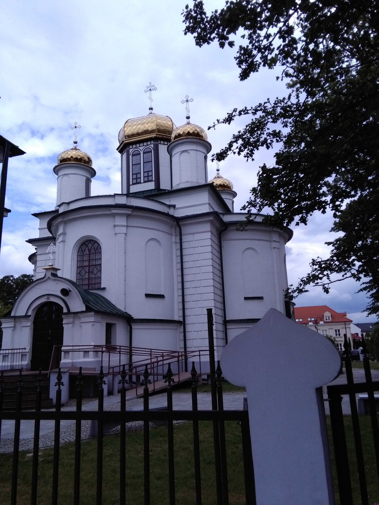 Cerkiew pod wezwaniem św. Aleksandra Newskiego
Źródło: https://pl.wikipedia.org/wiki/Sok%C3%B3%C5%82ka
Z Sokółki jedziemy na szlak tatarski – Bohoniki, Kruszyniany.
2.7.3 BOHONIKI
Rotmistrz Olejewski otrzymał Bohoniki od króla Sobieskiego jako rekompensatę za niewypłacony żołd. W 1679 roku osiedliło się pod Sokółką 30 rodzin lipkowskich, podkomendnych rotmistrzów: Kieńskiego, Olejewskiego i Sieleckiego. Obok Drahli, Malawicz i Kamionki swoje ziemie dostali muzułmanie także w Bohonikach. To właśnie tu postanowili wybudować meczet, którego istnienie odnotowano już w 1717 r. W 1789 r. w Bohonikach znajdowały się 3 folwarki i 5 gospodarstw drobnoszlacheckich; zamieszkiwało je 46 Tatarów. W 1921 r. Bohoniki zamieszkiwało 26 Tatarów .Obecnie w tej małej wiosce, liczącej zaledwie 30 domów mieszkają cztery rodziny muzułmanów, w sumie 14 osób. Meczet, którym się opiekują, niestety nie jest tym samym, który pamięta jeszcze czasy króla Jana. Według lokalnej tradycji meczet znajdował się w okolicy starego mizaru we wschodniej części wsi i uległ pożarowi . Mimo to odbudowana w XIX wieku świątynia figuruje w rejestrze zabytków i ściąga do Bohonik nie tylko pielgrzymów, ale i turystów.
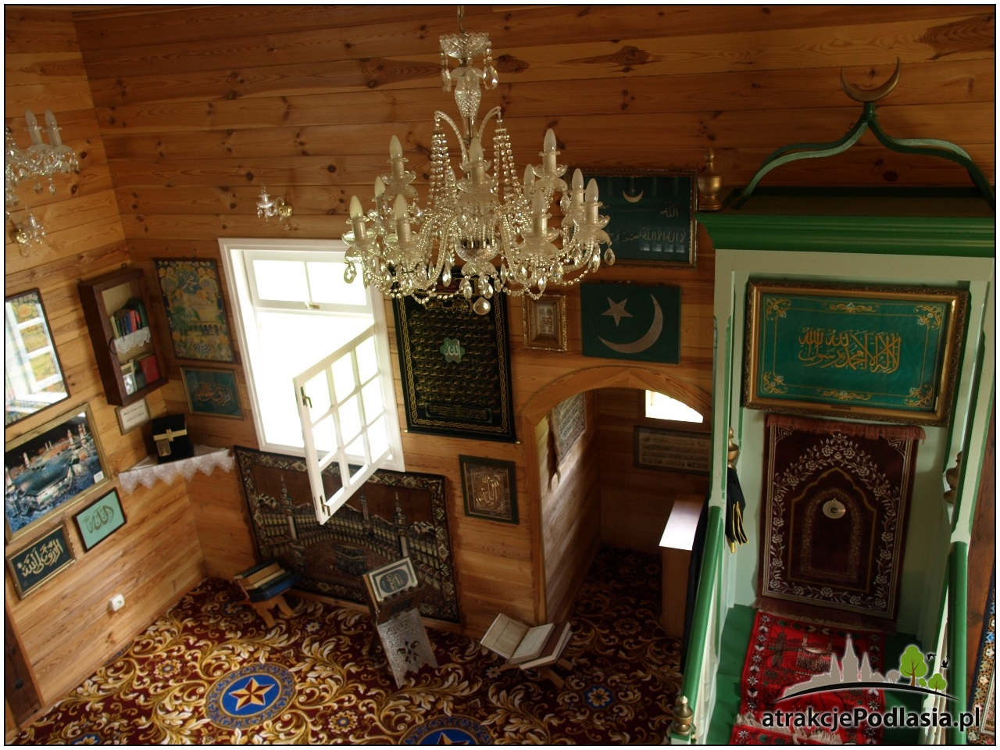
Wnętrze meczetu w Bohonikach, źródło: http://atrakcjepodlasia.pl/wp-content/uploads/photo-gallery/meczet-bohoniki/meczet-bohoniki-15.jpg?bwg=0
Zjedliśmy obiad (rosół z kołdunami i pierekaczewnik) w tatarskiej restauracji. W meczecie wysłuchaliśmy opowieści o Tatarach i ich zwyczajach religijnych.
Źródło: https://pl.wikipedia.org/wiki/Bohoniki Następnym naszym pkt były Kruszyniany.
2.7.4 KRUSZYNIANY
2.7.4.1 Historia
Wieś została założona prawdopodobnie w wieku XVII. W dniu 12 marca 1679 r Jan III Sobieski nadał Tatarom m.in. Kruszyniany oraz pobliskie wsie Nietupa, Łużany, jak też część Poniatowicz. Osadzeni muzułmanie, zwani Lipkami, walczyli po stronie Polski w wojnie z Turkami. W Kruszynianach (obok ok. 45 innych rodzin) osiadł na stałe płk Samuel Murza Krzeczowski, który uratował życie królowi w bitwie pod Parkanami. W drodze na sejm do Grodna król zatrzymał się u Krzeczowskiego. Kruszyniany stanowiły duży ośrodek muzułmański. Tutaj sporządzano dzieła o treści religijno-obyczajowej tzw. kitaby. Jeden z nich powstał w 1792 dzięki kopiście Jusufowi Heliaszewiczowi. W 1915 r. w związku z wybuchem I wojny światowej i niepowodzeniami Armii Imperium Rosyjskiego na froncie wschodnim większość ludności prawosławnej i tatarskiej Kruszynian masowo ewakuowała się w czasie bieżeństwa w głąb Rosji, gdzie przebywała na wygnaniu parę lat. Powroty do wsi rozpoczęły się po 1918 r., czyli po wybuchu rewolucji październikowej, i trwały z różną intensywnością przez następne dziesięciolecie. Znaczna część mieszkańców Kruszynian nie powróciła jednak z Rosji. Według Pierwszego Powszechnego Powszechnego Spisu Ludności z 1921 roku, wieś Kruszyniany liczyła 54 domostwa i 364 mieszkańców. Miejscowość zamieszkiwana była wówczas przez wiernych 4 wyznań monoteistycznych. Większość mieszkańców w liczbie 170 zadeklarowało wyznanie prawosławne, 141 zadeklarowało wyznanie rzymskokatolickie, 32 wyznanie mahometańskie, a pozostałych 21 zgłosiło wyznanie mojżeszowe. Ponadto Kruszyniany zamieszkiwane były przez przedstawicieli trzech narodowości. Większość mieszkańców w liczbie 201 zgłosiło polską przynależność narodową, 142 zadeklarowało białoruską przynależność narodową, a pozostałe 21 narodowość żydowską. Po II wojnie światowej lokalną wspólnotę muzułmańską zasilili repatrianci muzułmańscy z terenów Białoruskiej SRR. Do dzisiaj mieszka tutaj niewielka mniejszość tatarska. Podchodzimy pod zabytkowy meczet; nie możemy wejść do środka bo trwa nabożeństwo.
2.7.4.2 Meczet
Społeczność tatarska po osiedleniu się zbudowała meczet, który po raz pierwszy wspomniany jest już w dokumentach z 1717 r. Obecny został zbudowany prawdopodobnie w drugiej połowie XVIII wieku lub w pierwszej połowie XIX wieku (dokładna data budowy nie jest znana), na miejscu dawniejszego meczetu. W 1846 budynek przeszedł remont, o której to dacie świadczy kamień znajdujący się w fundamencie obok wejścia dla kobiet. Swoim kształtem budynek nawiązuje do okolicznych kościołów z dwiema wieżami. Zbudowany jest na planie prostokąta o wymiarach 10x13m. Z zewnątrz i wewnątrz pokryty jest drewnianą boazerią pomalowaną na ciemnozielony kolor (zieleń to kolor islamu). Od strony północnej budynek zdobią dwie wieże pokryte również drewnem. Na kalenicy dachu stoi trzecia (nieco mniejsza od pozostałych) wieżyczka bez okien. Przesunięta jest nieco w kierunku mihrabu. Dachy obu wież i wieżyczki mają kształt hełmu zwieńczonego półksiężycem na szczycie. Dach głównej części budynku pokryty jest gontem. Wnętrze podzielone jest na dwie części: dla kobiet i mężczyzn. Wejście dla kobiet umiejscowione jest na głównej osi budynku. Zwieńczone jest trójkątnym tympanonem, po którego bokach wznoszą się dwie wieże. Wejście dla mężczyzn znajduje się w bocznej ścianie. Pomieszczenie dla kobiet jest znacznie mniejsze i oddziela je od części męskiej drewniane przepierzenie, w którym na wysokości około 1 m wykonano podłużną szparę, zasłoniętą białą, przejrzystą firanką. Wnętrze udekorowane jest dywanami, a ściany muhirami – kaligraficznym zapisem cytatów z Koranu.
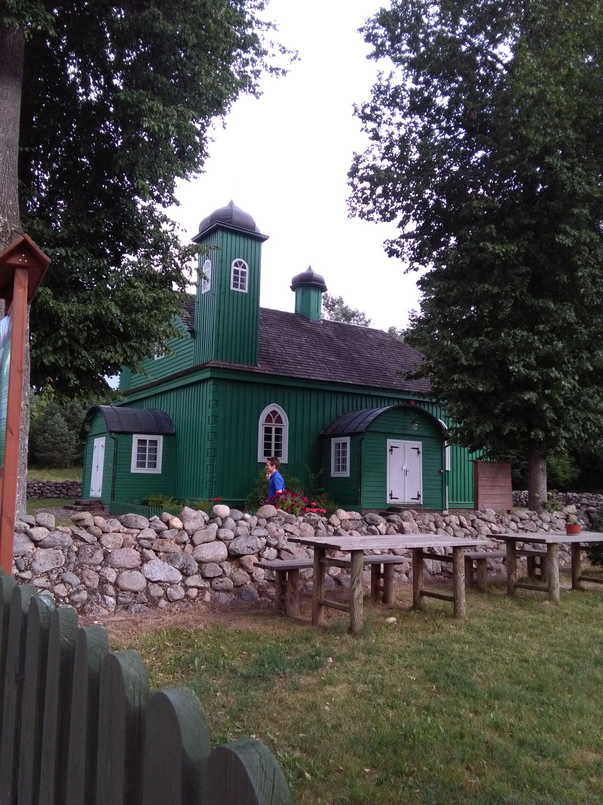 Meczet w Kruszynianach
2.7.4.3 Cmentarz muzułmański w Kruszynianach
Udaliśmy się na cmentarz muzułmański w Kruszynianach Cmentarz muzułmański w Kruszynianach założony był w II połowie XVII wieku przez społeczność tatarską. Ma powierzchnię 0,6 ha. Teren mizaru jest otoczony kamiennym murem. Najstarszy nagrobek o czytelnej inskrypcji pochodzi z 1699 roku; napisy na starszych są zatarte. Znajdują się tu również bogato zdobione kamienne nagrobki z XIX wieku mające formy ostrosłupów, kolumn lub szlifowanych płyt. Wśród nagrobków można znaleźć całkiem nowe pomniki, z 2014 roku. Mizar znajduje się na niewielkim wzniesieniu, za drewnianym meczetem w Kruszynianach. Podobnie jak na mizarze w Bohonikach, przy wejściu znajdują się nowe mogiły przypominające groby chrześcijańskie, ale w głębi cmentarza widać stare nagrobki kamienne porozrzucane tu i tam, z arabskimi inskrypcjami i półksiężycem.
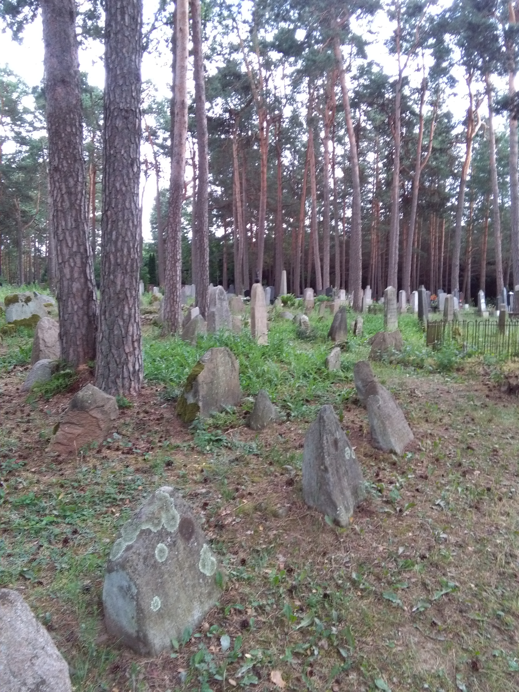 Stara część Mizaru
Źródło: https://pl.wikipedia.org/wiki/Kruszyniany
Z Kruszynian jedziemy do Lewkowa Starego, który będzie naszą nową bazą noclegową.
2.7.5 LEWKOWO STARE
Lewkowo Stare to wieś w Polsce położona w województwie podlaskim, w powiecie hajnowskim, w gminie Narewka, nad Narewką .Na terenie wsi znajduje się parafialna cerkiew prawosławna pw. Świętych Piotra i Pawła. Pierwsza pisemna wzmianka o cerkwi pojawiła się w wieku XVII; obecna świątynia powstała na początku XVIII w. W miejscowości działa zespół folklorystyczny oraz wykonywane jest rękodzieło ludowe w postaci wyrobów z gliny i drewna oraz organizowane są festyny dla osób niepełnosprawnych. Nową naszą bazą noclegową jest agroturystyka „Raj pod Jabłonią” . Znajduje się nad rzeką Narewką, nieopodal Puszczy Białowieskiej i Ladzkiej. Bliskość lasu stanowi wspaniałą bazę wypoczynku, natomiast bliskość Zalewu Siemianówka to eldorado dla wędkarzy. Dziewicza przyroda duże ilości ptactwa i zwierzyny, grzybobranie, wędkarstwo, wieloreligijność, cudowne krajobrazy to właśnie wizytówka tych stron. Pokoje znajdują się w trzech dworkach komfortowo urządzonych. Domki mieszczą się na dużej ogrodzonej działce z sadem owocowym. Kwatery są super.
Nasz domek w Lewkowie
2.8 Dzień ósmy – 14.07.2019 r.
Dzisiaj jedziemy do Białowieży.
2.8.1 BIAŁOWIEŻA
Białowieża – duża wieś w Polsce, w województwie podlaskim, w powiecie hajnowskim, w gminie Białowieża, położona na rozległej polanie w Puszczy Białowieskiej, nad Narewką, na Równinie Bielskiej. Najstarsze ślady obecności ludzkiej pochodzą z neolitu, sprzed około 5 tysięcy lat. Od XIV wieku istniał tam stały dwór myśliwski książąt litewskich. Pierwsze wzmianki o osadnictwie w Białowieży odnoszą się do roku 1639, gdy istniał folwark i dwór królewski króla Władysława IV Wazy. Dwór Wazów spalono przed 1658 rokiem, zapewne podczas IV wojny polsko-moskiewskiej. W XVIII wieku zbudowano w pobliżu miejsca po dworze Wazów nowy dwór królewski, w którym zatrzymał się we wrześniu 1752 r. król August III Sas podczas polowania w puszczy. Zachował się widok dworu z 1821 roku, co oznacza, że budynek przetrwał przemarsz wojsk napoleońskich w 1812 roku. Dawny dwór królów Polski został prawdopodobnie zniszczony około roku 1831 w czasie powstania listopadowego Po III rozbiorze Polski w 1795 roku, miejscowość do 1915 roku była pod zaborem rosyjskim. Okolice puszczy były podczas zaboru objęte powstaniami narodowymi. W 1889 roku na miejscu dworu polskich królów car Aleksander III polecił rozpoczęcie budowy pałacu. Budowa została ukończona w 1894 r. Była to letnio-jesienna rezydencja cara Rosji zbudowana z myślą o polowaniach w Puszczy Białowieskiej. Pod koniec XIX wieku wokół pałacu na obszarze 49 ha założono istniejący do dziś park pałacowy w typie parku angielskiego. Na potrzeby pałacu w 1897 r. wybudowano dworzec Białowieża Pałac, a kilka lat później Białowieża Towarowa, którego budynek zachował się. Car Aleksander III wraz z rodziną przyjeżdżał na łowy koleją. Pałac spłonął wskutek działań wojennych w 1944 r. W 1958 r. zdecydowano o jego rozbiórce. Obecnie na jego miejscu wzniesiono nowy budynek, w którym znajduje się dyrekcja Białowieskiego Parku Narodowego, Muzeum Przyrodniczo-Leśne im. prof. J. Miklaszewskiego, restauracja i hotel. W 1897 r. miejscowość uzyskała połączenie kolejowe z Hajnówką. Od 17 sierpnia 1915 do końca 1918 roku teren Białowieży znajdował się pod okupacją II Rzeszy Niemieckiej. W celu pozyskiwania drewna z Puszczy Białowieskiej Niemcy zbudowali tam dwa tartaki, w Stoczku i Grudkach.Puszczę eksploatowano w sposób rabunkowy . W dniu 27 lutego 1919 roku do Białowieży wkroczył polski oddział konny dowodzony przez majora Jerzego Dąbrowskiego, co spowodowało, że następnego dnia Białowieżę dobrowolnie opuścił 50-osobowy oddział niemiecki. 21 marca 1919 roku do Białowieży przybyły polskie władze cywilne. W 1918 r niemal 6 tys. ha lasu wycięto w pień. Powycinano najlepsze jakościowo i najgrubsze drzewa. Niewielką Hajnówkę Niemcy zamienili w wielki ośrodek przemysłu drzewnego. Polscy leśnicy, powracający na tereny Puszczy Białowieskiej, zastali zdewastowany las, przyciągający olbrzymią falę kornika. Pierwszym zadaniem nowej administracji było zalesienie zrębów po rabunkowej wycince; założenie wielu leśnych szkółek, rozpoczęcie walki z milionami korników, mających w zdewastowanych świerczynach wymarzone środowisko do rozwoju. Dzięki skutecznym działaniom gradacja kornika została zatrzymana w 1923 r, Praca leśników, ich starania zmierzające do skutecznej ochrony jak największych obszarów puszczańskiej przyrody doprowadziły do powołania drugiego w Polsce Parku Narodowego. Utworzony Park Narodowy w Białowieży obowiązującym od 11 sierpnia 1932 r. Rozporządzeniem Ministra Rolnictwa i Reform Rolnych, restytuowany w obecnej formie z mocy rozporządzenia Rady Ministrów z dnia 21 listopada 1947 roku, jest drugim po Pienińskim Parku Narodowym parkiem narodowym w Polsce i jedenym z pierwszych w Europie. Znany z ochrony najlepiej zachowanego fragmentu Puszczy Białowieskiej, ostatniego w Europie fragmentu lasu pierwotnego oraz liczącej kilkaset sztuk, największej na świecie wolnościowej populacji żubra. Przed I wojną światową szacowano, że w puszczy żyje 750 żubrów. Kłusownictwo, brak nadzoru nad lasami w tym czasie spowodował, że po I wojnie światowej wymarły dwie ostatnie wolne populacje żubra w Puszczy Białowieskiej (1919 r.) i na Kaukazie (1927 r.). Krach populacji gatunku przeżyły jedynie 54 zwierzęta, w tym 39 wywodzących się bezpośrednio z populacji białowieskiej, żyjących wówczas w ogrodach zoologicznych i prywatnych kolekcjach. Dzięki potomkom tych zwierząt było możliwe rozpoczęcie prac nad restytucją gatunku. Z inicjatywy profesora Jana Sztolcmana założono w 1923 roku Międzynarodowe Towarzystwo Ochrony Żubra. Towarzystwo rozpoczęło działalność od spisu żubrów żyjących na świecie. Zarejestrowano je w Księdze Rodowodowej Żubrów, której pierwszy zeszyt ukazał się w 1932 roku w Republice Weimarskiej. W czasie II wojny światowej zwierzęta ocalały i na koniec 1944 roku w białowieskim rezerwacie przebywało 17 żubrów, z czego 4 z linii białowieskiej i 13 z białowiesko-kaukaskiej. Obecnie przy drodze z Hajnówki do Białowieży znajduje się Rezerwat Pokazowy Żubrów, w którym prócz żubrów można zobaczyć dziki, wilki, jelenie, sarny, żubronie (skrzyżowanie żubra z bydłem domowym) i tarpany. Miejscowość zawdzięcza swoją popularność Puszczy Białowieskiej i Białowieskiemu Parkowi Narodowemu, który wraz z częścią Puszczy Białowieskiej na terytorium Białorusi, został wpisany w 1979 na listę światowego dziedzictwa UNESCO. Stanowi ona bazę wypadową do Parku i atrakcji turystycznych znajdujących się w zagospodarowanej części Puszczy. Ma rozbudowaną bazę turystyczną. Zachowały się zbudowane w czasie panowania cara Aleksandra III stajnie (dawniej Dom Turysty PTTK) i Dom Marszałkowski (obecnie siedziba Białowieskiego Parku Narodowego i Instytutu Badawczego Leśnictwa). Obok parku znajduje się cerkiew prawosławna św. Mikołaja Cudotwórcy. W miejscowości znajduje się również kościół rzymskokatolicki św. Teresy od Dzieciątka Jezus z kaplicą św. Huberta – patrona myśliwych. W zachodniej części miejscowości zlokalizowany jest niewielki skansen budownictwa drewnianego z dwoma wiatrakami. Najbardziej na południe wysunięty jest dawny (nieczynny) dworzec kolejowy – Białowieża Towarowa (obecnie mieści się w nim restauracja Carska). 1 września 1939 r. Białowieżę zbombardowało Luftwaffe – bomby poważnie uszkodziły cerkiew, spadły także, nie czyniąc większych szkód, w pobliżu polowego szpitala wojskowego, umieszczonego krótko przed wojną w skrzydle pałacu. Po zajęciu Białowieży przez niemiecką 3 Dywizję Pancerną przekazano Białowieżę Rosjanom, którzy okupowali ją w latach 1939–1941. Wysiedlili wówczas wiele osób na Syberię. Po ataku Niemiec na Związek Radziecki Białowieżę okupowali Niemcy. W latach 1941–1944 Białowieża i jej okolice były terenem wzmożonych działań partyzantki polskiej i radzieckiej.Jesienią 1943 roku w związku ze znaczną aktywizacja partyzantki radzieckiej na tych terenach Niemcy wysiedlili ok 8 tys. Białorusinów z okolic Puszczy Białowieskiej. Od końca 1944 i w 1945 r. w rejonie Puszczy Białowieskiej operował oddział mjr. Zygmunta Szendzielarza „Łupaszki”. 25 lipca 1944 Józef Stalin z delegacją PKWN (E. Osóbka-Morawski, A. Witos) w Moskwie podzielili Puszczę Białowieską pomiędzy RP a BSRR. Białowieża pozostała w Polsce. Do Białowieskiego Parku Narodowego co roku przyjeżdża ok. 140 000 turystów. Najczęściej zwiedzanymi obiektami są Rezerwat Pokazowy Żubrów, muzeum BPN i Obszaru Ochrony Ścisłej BPN. Do obszarów ochrony ścisłej (Obręb Ochronny Orłówka) i muzeum mogą wejść turyści jedynie pod opieką uprawnionego przewodnika. Na tym obszarze udostępnione są szlaki do Dębu Jagiełły i dalej do sosen bartnych (czas zwiedzania około 3 godzin). W Obrębie Ochrony Hwoźna biegną dwa znakowane szlaki piesze i rowerowe o długości 6,5 km oraz 11,5 km. W dolinie Narewki wybudowano wieżę do obserwacji zwierząt.
Białowieski Park Narodowy, źródło: https://wyjade.pl/resources/miejsca/106/puszcza-bialowieska.jpg
Źródło: https://pl.wikipedia.org/wiki/Bia%C5%82owie%C5%BCa
Podzieleni na dwie grupy poszliśmy z przewodnikami do Puszczy Białowieskiej - obszarów ochrony ścisłej. Mieliśmy okazję zobaczyć piękno i bogactwo przyrodnicze puszczy.
„Prastara puszczo trwaj wiecznie w swojej potędze i pięknie. Ucz nas jak kochać ojczystą przyrodę”
Obelisk z sentencją
Po zjedzeniu obiadu w restauracji nad jeziorkiem jedziemy do Hajnówki na festyn regionalny, Zwiedzamy kramiki oferujące wyroby regionalne. Była okazja do „ciekawych" zakupów. Wracamy do Lewkowa.
2.9 Dzień dziewiąty - 15.07.2019 r.
Dzisiaj mamy w planie Św Górę Grabarkę i Drohiczyn. Pierwszym naszym przystankiem na trasie jest cerkiew w Dubinach.
2.9.1 DUBINY
Miejscowość powstała w 1639 roku.Dubiny to dawna wieś królewska ekonomii brzeskiej.Według Powszechnego Spisu Ludności z 1921 roku większość mieszkańców wsi (531 osób) zadeklarowała wówczas wyznanie prawosławne, pozostali podali kolejno: wyznanie rzymskokatolickie (27 osób) oraz wyznanie mojżeszowe (20 osób). Pod względem narodowościowym większość mieszkańców była Białorusinami (526 osób), resztę stanowili: Polacy (47 osób) i Rusini (5 osób). Murowana cerkiew prawosławna pod wezwaniem Zaśnięcia Przenajświętszej Bogurodzicy z 1872, powstała na miejscu starej, zbudowanej w XVIII wieku. Dawna cerkiew przeniesiona została do Rogacz, gdzie funkcjonuje do dziś jako świątynia parafialna. Ikonostas dębowy, rzeźbiony, ufundował proboszcz Parteniusz Bazylewski. Po II wojnie światowej cerkiew została bogato wyposażona w obramowanie ikon przez miejscowego rzeźbiarza. Jest świątynią parafialna. Cerkiew była zamknięta ,wiec nie zwiedziliśmy jej wnętrza.
Dubiny Cerkiew
Źródło: https://pl.wikipedia.org/wiki/Dubiny
Kolejnym przystankiem jest Hajnówka.
2.9.2 HAJNÓWKA
2.9.2.1 Historia
Hajnówka położona jest na Nizinie Podlaskiej, w południowo-wschodniej części województwa podlaskiego, na zachodnim krańcu Puszczy Białowieskiej. Przez miasto przepływa rzeczka Leśna Prawa, dopływ Bugu. Hajnówka wyrosła z osady strażnika leśnego, powstałej w XVI w. Wchodziła w skład Wielkiego Księstwa Litewskiego. W 1589 r. konstytucja „Ordinato o prewentach królewskich” podzieliła dobra królewskie na dobra państwowe i stołowe. Puszcza Białowieska weszła do dóbr stołowych, przeznaczonych na utrzymanie dworu królewskiego i z tego powodu była szczególnie chroniona. Rosło znaczenie Straży Hajnowskiej. Po III rozbiorze Polski Hajnówka znalazła się wraz z Puszczą Białowieską w zaborze rosyjskim. W roku 1888 r. Puszczę Białowieską przekazano do zarządu domen carskich. W latach 1894–1906 zbudowano kolej z Bielska Podlaskiego do Białowieży i z Siedlec przez Hajnówkę do Wołkowyska. Hajnówka stała się węzłem kolejowym. Około 1900 zbudowano szosę z Bielska Podlaskiego do Białowieży, która przebiegała przez Hajnówkę. W czasie I wojny światowej, w 1915 r. Puszczę Białowieską zajęli Niemcy. Władze polskie przejęły Hajnówkę w 1919 r. Napływała do Hajnówki fala ludności z różnych stron Polski. Ponadto została tu rozwiązana białoruska dywizja gen. Bułak-Bałachowicza, której żołnierze osiedli w Hajnówce i Białowieży. Utworzył się swoisty konglomerat gwarowy i kulturowy, w którym Polacy stanowili około 70% ludności. Przybysze zajmowali baraki, budowali domy drewniane, trociniaki i ziemianki. Wytyczano uliczki na szerokość rozstawu ramion ludzkich. Powoli zaczęło rozwijać się życie kulturalne i społeczne. Osadę zamieszkiwali Polacy, Białorusini, Rosjanie, Ukraińcy, Żydzi, Niemcy. Druga wojna światowa i okupacja zahamowały rozwój osady. Zniszczeniu uległy zakłady produkcyjne, część miasta, stacja i tory kolejowe. Zginęło około 700 mieszkańców. Wyzwolenie Hajnówki nastąpiło 18 lipca 1944 r. Miasto jest ośrodkiem turystycznym (lasy, kolej wąskotorowa) i ośrodkiem mniejszości białoruskiej ( Muzeum Kultury Białoruskiej), którzy według danych spisu powszechnego z 2007 r. stanowią w Hajnówce 26,41% mieszkańców. W mieście ma swoją siedzibę Zamiejscowy Wydział Leśny Politechniki Białostockiej kształcący studentów na kierunku Leśnictwo. Co roku w maju w mieście odbywa się Międzynarodowy Festiwal „Hajnowskie Dni Muzyki Cerkiewnej”. . Według danych z 2013 r. miasto miało 21 559 mieszkańców.
Źródło: https://pl.wikipedia.org/wiki/Hajn%C3%B3wka
Zatrzymujemy się w Hajnówce przy Soborze Św. Trójcy. Świątynia robi na nas duże wrażenie. Zarówno bryła kościoła jak również wystrój wnętrza może zachwycić. O podstawach wiary prawosławnej oraz historii powstania cerkwi szczególnie o bogactwie jej wnętrza, bardzo ciekawie ,z pasją i znawstwem tematu opowiedziała nam przesympatyczna pani, emerytowana nauczycielka.
2.9.2.2 Sobór Świętej Trójcy w Hajnówce
Sobór Świętej Trójcy w Hajnówce to największa w Polsce dwupoziomowa cerkiew prawosławna. Wybudowana według projektu prof. Aleksandra Gregorowicza z Poznania w 1982r. Świątynia jest wizytówką miasta Hajnówka. Łączy w sobie nowoczesność i tradycję. Dach hajnowskiej cerkwi tworzy nieregularna, betonowa płaszczyzna. Charakterystycznym elementem jest dzwonnica o niezwykłym kształcie. Cerkiew Świętej Trójcy w Hajnówce może pomieścić 5tysięcy osób. Zgodnie z prawosławną tradycją wnętrze soboru pokrywają polichromie – malarstwo ściennie wzorowane na późnobizantyjskim XIV-wiecznym malarstwie. Przedstawiają one wizerunki Chrystusa, Bogarodzicy, aniołów i świętych. Prezbiterium, w którym znajduje się ołtarz oddzielone jest od nawy ścianą ikon, z drzwiami pośrodku i dwoma mniejszymi po bokach. Środkowe drzwi noszą nazwę Królewskich Wrót. Zawsze znajdują się na nich ikony Zwiastowania Najświętszej Marii Panny i czterech Ewangelistów. Mniejsze drzwi to Diakońskie wrota. Po prawej stronie Królewskich Wrót umieszczana jest zawsze ikona Zbawiciela, po lewej Matki Bożej. Nad drzwiami umieszczone są ikony ukazujące największe święta. Główny ikonostas wyróżniają starannie wykonane ceramiczne obramowania ikon i drzwi. W centralnej części cerkwi znajduje się panikadiło, czyli żyrandol. To grecki krzyż, ozdobiony witrażami Bogarodzicy i słowiańskich świętych. Ściany świątyni ozdobione witrażami, rzadko spotykanymi w prawosławnych cerkwiach. W Soborze Świętej Trójcy w Hajnówce znajduje się siedem ołtarzy. Główny z nich poświęcony jest Świętej Trójcy. W nawie północnej jest też ołtarz poświęcony ikonie Matki Bożej – Nieoczekiwana Radość, odgrodzony od nawy jednorzędowym ikonostasem. Na górnym poziomie znajduje się baptysterium, poświęcone lokalnym świętym. Jego ściany pokrywają polichromie z wizerunkami św. Cyryla z Turowa, św. Eufrozyny Potockiej. Na środku wyłożona jest ikona św. męczennika Dzieciątka Gabryela – świętego z Podlasia. W dolnej części soboru umiejscowione są trzy ołtarze. Największy z nich poświęcony jest św. Mikołajowi. Po prawej stronie można znaleźć niewielki ołtarz św. Barbary a na lewo ołtarz ku czci św. Antoniego Pieczerskiego. Tu w krypcie spoczęło ciało budowniczego soboru o. Antoniego Dziewiatowskiego. Ostatni, siódmy ołtarz znajduje się pod dzwonnica i jest poświęcony św. Pantelejmonowi.
Sobór Świętej Trójcy, źródło: https://i.pinimg.com/originals/58/08/fd/5808fdd4d00ca3ad8122811c631b7f81.jpg
Wnętrze Soboru Świętej Trójcy, źródło: http://fotoforum.gazeta.pl/photo/6/fh/hj/flvb/lrSSCLZHzYfeIhW6nB.jpg
Źródło: http://atrakcjepodlasia.pl/atrakcje-turystyczne/sobor-swietej-trojcy-w-hajnowce/
Po zwiedzeniu cerkwi w Hajnówce jedziemy do Grabarki.
2.9.3 GRABARKA
Święta Góra Grabarka to prawosławne sanktuarium słynące z wielu uzdrowień. Położone jest w odległości 12 km od Siemiatycz na Wysoczyźnie Drohickiej. Święta Góra Grabarka jest miejscem modlitwy. Wybudowana na wzgórzu cerkiew to cel pielgrzymów z całej Polski. Miejsce to zasłynęło z cudownego ocalenia od zarazy po modlitwach mieszkańców do cudownej ikony Spasa Izbawnika w 1710 r., kiedy epidemia cholery szalała na terenach Podlasia. W tym czasie pewnemu starcowi we śnie zostało objawione, że ratunek można znaleźć na pobliskim wzgórzu. Wierni poszli za głosem Bożym, przynosząc ze sobą krzyże. Z modlitwą obmywali się i pili wodę ze źródełka. Według kroniki siemiatyckiej parafii ratunek od choroby znalazło wówczas ok. 10 tys. ludzi. Jeszcze tego samego roku, w podziękowaniu za wybawienie od epidemii, wierni postawili drewnianą kapliczkę, a z czasem cerkiew. Niestety, w 1990 roku świątynię strawił pożar, z którego ocalały jedynie dwie ikony. Przeniesiono je do nowo wybudowanej cerkwi. Nowa cerkiew została wyświęcona w 1998r. Jest już murowana. Corocznie do Grabarki przyjeżdża tysiące pielgrzymów niosąc ze sobą krzyże wotywne. Pozostawienie krzyży intencyjnych na wzgórzu wokół cerkwi stało się tradycją pielgrzymkową przybywających tutaj pątników każdego roku 18 i 19 sierpnia w święto Przemienienia Pańskiego. Liczba krzyży nieustannie rośnie, dlatego trudno stwierdzić ile ich w danej chwili znajduje się na wzgórzu. Prawdopodobna liczba aktualnie ustawionych tam krzyży wynosi już ponad 10 tysięcy. W maju, corocznie Grabarka staje się miejscem spotkań młodzieży prawosławnej z całego świata. Święta Góra Grabarka słynie także z uzdrawiającego źródełka, które bije u stóp góry. Wierni obmywają się nią, aby oczyścić się z chorób. Na wzgórzu, tuż za cerkwią znajduje się żeński klasztor św. Marty i Marii. Jest to jedyny w Polsce żeński monastyr. Teren wokół klasztoru jest bardzo zadbany i ozdobiony pięknymi kwiatowymi klombami. Od 2000 r. na Świętej Górze znajduje się Iwierska Ikona Matki Bożej napisana na Świętej Górze Atos, podarowana na pamiątkę 2000 lat chrześcijaństwa.
Krzyże na Św. Górze Grabarce
Żródło: http://atrakcjepodlasia.pl/atrakcje-turystyczne/swieta-gora-grabarka/
Po zwiedzeniu Św Góry Grabarki jedziemy do Siemiatycz. Na rynku jemy obiad i później udajemy się pod kościół Wniebowzięcia NMP z XVII w. i były klasztor Misjonarzy z XVIII w.
2.9.4 SIEMIATYCZE
2.9.4.1 Historia
Siemiatycze położone są w południowej części województwa podlaskiego. Największym atutem lokalizacyjnym miasta jest bliskość rzeki Bug. Według danych z 31 grudnia 2015 r. miasto miało 14 684 mieszkańców. Są miastem powiatowym bogatym w wiele zabytków. Warto wiedzieć, że historia rozwoju miasta wiąże się głównie z takimi postaciami jak: król Zygmunt August, Michał Sapieha, księżna Anna z Sapiehów Jabłonowska oraz Ignacy Gilewski. Historia Siemiatycz sięga połowy XVI wieku. Prawa miejskie nadał Siemiatyczom w 1542 r. król Zygmunt August. W historii miasta niezwykle istotny był wiek XVIII. Rozwój w tym czasie miasto zawdzięczało ówczesnym właścicielom z rodu Sapiehów, w tym księżnej Annie z Sapiehów Jabłonowskiej. Oświecona księżna i jej zbiory przyrodnicze ,geologiczne czy historyczne przyciągały do miasta gości z kraju i ze świata, wśród nich byli H. Kołłątaj, S. Staszic, I. Krasicki, S.A. Poniatowski, cesarz austriacki Józef II. Powstały wtedy najokazalsze budowle: zespół klasztorny Księży Misjonarzy, ratusz, szpital, szkoła położnicza, bożnica żydowska, świątynia ewangelicka, drukarnia oraz pałac. W czasie zaborów miasto przestało pełnić rolę rezydencji magnackiej; w roku 1807 przyłączono je do zaboru rosyjskiego. W lutym 1863 r rozegrała się w mieście jedna z największych bitew Powstania Styczniowego, zakończonego klęską oddziałów powstańczych. W walkach zniszczono znaczną część miasta w tym pałac Jabłonowskich, którego nigdy nie odbudowano. Ożywienie nastąpiło pod koniec XIX wieku. Zniszczeń nie oszczędziły miastu I i II wojna światowa; zabudowę zniszczono w 25%.
2.9.4.2 Zespół barokowy
Zwiedziliśmy zespół barokowy (kościół Wniebowzięcia NMP z XVII w. i były klasztor Misjonarzy z XVIII w.). Obecny kościół zbudowany w latach 1626-1637 z fundacji Lwa Sapiehy, kanclerza i hetmana wielkiego litewskiego, dokończony przez jego syna Kazimierza Leona, podkanclerzego litewskiego, konsekrowany w 1638 r. pw. Wniebowzięcia NMP. W 1719 r. parafię przekazano zgromadzeniu Misjonarzy. W latach 1719-1727 wzniesiono budynek klasztoru wg projektu Karola Antoniego Baya, pod kierunkiem Vincenta Rachettiego. W 1725 r. powstało ogrodzenie z dzwonnicami. W 1737 r. przebudowano fasadę kościoła i dobudowano dwa przedsionki po obu stronach wieży. W 1754 r. kościół uległ pożarowi, po którym odbudowano zniszczone sklepienia naw bocznych. W 1780 r. zbudowano nowy chór muzyczny w kościele. W 1832 r. zgromadzenie Misjonarzy zostało skasowane, a parafia wraz z kościołem wróciła pod zarząd kleru diecezjalnego. W 1860 r. wzniesiono przed fasadą kościoła bramę filarową, na której w 1863 r. umieszczono figurę św. Michała Archanioła. W czasie zaborów klasztor użytkowany był jako szpital wojskowy; w latach 1914-1920 budynek został częściowo uszkodzony, a pawilon północno-wschodni rozebrano po pożarze. W czasie II wojny światowej rozebrano pd. dzwonnicę. W 2001 r. odbudowano północno-wschodni pawilon klasztorny. Obecnie w dawnym klasztorze mieści się Dom Opieki Społecznej. Zespół usytuowany jest na północny-wschód od rynku.
Kościół Wniebowzięcia NMP
Źródło: https://zabytek.pl/pl/obiekty/siemiatycze-zespol-kosciola-misjonarzy-pw-wniebowziecia-nmp
2.9.4.3 Inne zabytki
Do ciekawych obiektów turystycznych w Siemiatyczach należą jeszcze: cerkiew Apostołów Piotra i Pawła z XIX w., synagoga żydowska z XVIII w. oraz szkoła talmudyczna – obecnie Muzeum Regionalne, kaplica cmentarna z XIX w., kaplica ewangelicka z XVIII/XIX w., trzy rzeźby sfinksów z XIX w. – jedna przy Zespole Szkół (ul. Kościuszki) oraz dwie na wylocie ul. Pałacowej w kierunku ul. Legionów Piłsudskiego (niegdyś stał tu pałac księżnej Anny z Sapiehów Jabłonowskiej), cmentarz żydowski z oryginalną bramą. Opuszczamy Siemiatycze i jedziemy do Drohiczyna.
2.9.5 DROHICZYN
2.9.5.1 Historia
Drohiczyn to miasto położone w południowej części województwa podlaskiego. Miasto to powstało na pograniczu polsko-ruskim w I poł. XI w. Prawa miejskie Drohiczyn otrzymał w 1498 r. od księcia Aleksandra Jagiellończyka. Ciekawostką jest fakt, że w 1253 r. w mieście odbyła się koronacja jedynego króla w dziejach Rusi – Daniela Romanowicza – prawnuka Krzywoustego. Warto wiedzieć, że w latach 1520 – 1795 Drohiczyn był stolicą województwa podlaskiego. Jako miejscowość leżąca na szlakach kupieckich odgrywał dużą rolę w handlu także zagranicznym. Okres, w którym Drohiczyn pełnił funkcję stolicy województwa zalicza się do największego rozkwitu miasta. XVIII wiek przyniósł miastu sławę przede wszystkim ze względu na rozwój szkolnictwa. Jezuickie Collegium Nobilium (1747r.) oraz szkółki franciszkańskie były wspaniałymi ośrodkami edukacyjnymi, przyczyniającymi się do rozwoju oświaty na wschodnich ziemiach. Upadek miasta rozpoczął się w XIX wieku, kiedy to powstające nowe szlaki kupieckie przyczyniły się do przekształcenia miasta w prowincjonalne miasteczko. Dziś Drohiczyn jest miastem chętnie odwiedzanym przez turystów ze względu na piękne zabytki oraz urocze położenie geograficzne. Według danych z 1 stycznia 2018 Drohiczyn liczył 2 011 mieszkańców. Zatrzymaliśmy się na ryneczku miasteczka.
2.9.5.2 Góra zamkowa
Idziemy na Górę Zamkową – wczesnośredniowieczne grodzisko, będące jednocześnie punktem widokowym na malowniczą dolinę rzeki Bug. Przypuszcza się, że pierwszy gród wzniósł na górze książę kijowski Jarosław Mądry w połowie XI wieku. Zamek był drewniany z dwiema kamiennymi basztami. Warownię zniszczyły rosyjskie wojska Chowańskiego, które wkroczyły tu przed Szwedami; samą zaś górę zniszczyły wody rzeki Bug podmywając przez wieki wysoką skarpę, powodując ziemne osuwiska. W 1928 r. na szczycie góry postawiono kamienny obelisk upamiętniający 10 rocznicę odzyskania przez Polskę niepodległości.
Widok na Bug z Góry Zamkowej
2.9.5.3 Zespół Franciszkanów
Kolejnym obiektem który zwiedziliśmy był Kościół pw. Wniebowzięcia NMP (budowa: 1682–1715) z ołtarzem głównym z 1762, według tradycji zbudowany w miejscu drewnianego kościoła z 1400 fundacji wojewody Mikołaja Nasuty. Pierwsza potwierdzona wzmianka w źródłach o kościele pojawiła się w 1470 r. Budowa obecnego barokowego kościoła rozpoczęła się w 1682 r. ze składek miejscowej szlachty. Zakrystia od północy z 1682 r. i skarbczyk od południa wybudowany w 1734 r. jako drohickie archiwum ksiąg ziemskich. We wnętrzu Kaplica Loretańska z 1695 r. z ołtarzem rokokowym z 1774 r. oraz stiukowy rokokowy ołtarz główny z 1762–1764. Ołtarze przy filarach tęczowych z lat 1770–1774. Lewy z obrazem Wizja św. Antoniego z 1775 r., prawy z obrazem św. Franciszka z 1774 r. Na filarze tęczowym od południa ołtarz klasycystyczny z 1780 r. W zamknięciu nawy północnej relikty murowanego ołtarza barokowego z XVIII w. Kościół poważnie zniszczony w czasie II wojny światowej, do kultu przywrócony w 1949 r.
Ołtarz Maksymiliana Kolbe
Kościół wchodzi w skład zespół klasztornego franciszkanów, w którym na uwagę zasługują jeszcze:
- dzwonnica z ok. 1770, w stylu późnobarokowym według proj. Kazimierza Kamieńskiego
- klasztor franciszkanów (budowa 1737–1751) Zbudowany z funduszy chorążego ziemi bielskiej Marcina Kuczyńskiego (1663–1751). Po kasacie po powstaniu listopadowym w 1832 mieściły się w nim koszary. W 1889 przebudowany na szkołę. Obecnie pozbawiony cech stylowych, mieści Muzeum Diecezjalne Zgromadzenie Zakonne Sióstr MB Loretańskiej i Dom Księży Emerytów.
- stróżówka z XVIII w. - oficyna z XVIII w., ob. dom
Kolejnym obiektem Drohiczyna do którego się udajemy jest zespół klasztorny jezuitów.
2.9.5.4 Zespół klasztorny jezuitów
Zwiedziliśmy Katedrę Trójcy Przenajświętszej z lat 1696–1709, zbudowaną w stylu barokowym. Pierwotny kościół ufundował król Władysław Jagiełło w 1392 r. W 1657 r. przekazano parafię zakonowi jezuitów, którzy wybudowali istniejący dziś kościół. Po kasacie jezuitów parafię przekazano zakonowi pijarów. Kościół zniszczono w czasie I wojny światowej w latach 1914–1918. Odbudowany został w 1919 r. Zdewastowano go ponownie w latach 1939–1940 (szczególnie wnętrze). Zachował się późnogotycki krucyfiks, barokowa rzeźba Chrystusa Frasobliwego, chrzcielnica późnorenesansowa z pocz. XVII w., rokokowa monstrancja z 1786 r., obraz św. Trójcy z XVII w., XVIII w. tabernakulum. We wnętrzu odrestaurowane XVIII w. freski ; w renesansowych podziemiach świątyni spoczywają zasłużeni Kościołowi i Polsce. W skład zespołu wchodzi także klasztor jezuitów z lat 1729–1744, zbudowany w stylu barokowym, na planie podkowy pod kierunkiem jezuity Jakuba Ruoffa (obecnie Kuria Biskupia) ; kolegium jezuitów (budowa: 1746–1751) według projektu Wincentego lub Wojciecha Rachetti i fundacji superiora klasztoru o. Stefana Kuczyńskiego, spalone w czasie I wojny światowej , odbudowane, obecnie Wyższe Seminarium Duchowne.
Podziemia katedry, źródło: http://www.podlasie24.pl/upl/articles/3b3a9999c57ecfa18ecf2dc5897b0a58.jpg
Ostatnim obiektem przy którym zatrzymaliśmy się w Drohiczynie był zespół klasztorny Mniszek Benedyktynek.
2.9.5.5 Zespół klasztorny Mniszek Benedyktynek
2.9.5.5.1 Kościół Mniszek Benedyktynek p.w. Wszystkich Świętych z lat 1734–1738
Projekt: Jakub Fontana, fundacja Wiktoryna Kuczyńskiego (1668–1737) i Marcina Kuczyńskiego. Pierwszy drewniany kościół ufundował w 1623 roku wojewoda Wojciech Niemira. Został zniszczony przez Szwedów w 1657 roku i odbudowany w 1659. Obecny kościół konsekrowano w 1744 roku. W 1854 roku władze rosyjskie zamknęły kościół. Odzyskano go w 1918 roku i od 1930 służył jako kościół szkolny. Podczas okupacji rosyjskiej w latach 1939–1941 służył jako szalet dla wojsk sowieckich. W latach okupacji niemieckiej 1941–1944 funkcjonował jako parafialny. W 1957 roku objęły go benedyktynki wypędzone z Nieświeża. Wewnątrz kościoła znajdują się dwie rzeźby barokowe: Św. Scholastyki i Św. Wojciecha, obraz Św. Benedykta z pocz. XVII w. i krucyfiks z 1 poł. XVIII w. z niezachowanego barokowego ołtarza głównego.
2.9.5.5.2 Klasztor Mniszek Benedyktynek
W drewnianym budynku poprzedzającym obecny w 1709 i 1714 roku funkcjonował szpital dla ofiar zarazy. Murowany klasztor w stylu barokowym wybudowano w latach 1734–1738. W 1856 roku zaborcze władze rosyjskie zamknęły klasztor i wywiozły zakonnice do Wilna. W następnych latach zakonnice wróciły do klasztoru i prowadziły polską szkołę, opiekując się też powstańcami w czasie Powstania styczniowego. Po upadku powstania władze carskie w 1864 roku ponownie zamknęły klasztor przeznaczając zabudowania na koszary, a zakonnice uwięziono w Bielsku Podlaskim. Po 1885 roku Rosjanie nakazali zburzenie klasztoru. Odbudowano go bez cech stylowych w latach 1958–1960 bez skrzydła wschodniego uzupełnionego w 1992. Obecnie bez cech stylowych.
Wnętrze kościoła Mniszek Benedyktynek p.w. Wszystkich Świętych
Źródło: https://pl.wikipedia.org/wiki/Drohiczyn_(Polska) http://atrakcjepodlasia.pl/atrakcje-turystyczne/drohiczyn-opis-miejscowosci/
2.10 Dzień dziesiąty – 16.07.2019 r.
Dzisiaj jest dzień rekreacyjny. Jedziemy na krótką wycieczkę do Rezerwatu Przyrody Siemianówka – rezerwatu położonego na terenie gminy Narewka w województwie podlaskim.
2.10.1 Rezerwat Siemianówka
Rezerwat leśny o powierzchni 224,54 ha (powierzchnia wg zarządzenia 224,54 ha), utworzony w 1995 roku (M. P. Nr 33 z dnia 27.06.1995 r., poz. 404). Rezerwat położony jest na północno-wschodnich obrzeżach Puszczy Białowieskiej w Obrębie Browsk. Celem rezerwatu jest ochrona i zachowanie szeregu dobrze zachowanych zbiorowisk roślinnych, głównie z kręgu borów i olsów, wielu roślin chronionych i rzadkich w tym bogatej flory mszaków. Rezerwat pełni również rolę poligonu naukowego w monitorowaniu i rejestracji przeobrażeń struktury fitocenoz mogących zaistnieć w wyniku oddziaływania zbiornika wodnego Siemianówka. Flora rezerwatu liczy ponad 200 gatunków roślin naczyniowych, z których 6 objętych jest ochroną gatunkową. Są to: brzoza niska Betula humilis, listera sercowata Listera cordata, widłak goździsty Lycopodium clavatum, widłak jałowcowaty Lycopodium annotinum, tajęża jednostronna Goodyera regens i bagno zwyczajne Ledum palustre. Bardzo bogata jest flora mszaków zawierająca w swym składzie kilka rzadkich gatunków. Z pkt widokowego można było obserwować rozległe tereny bagienne rezerwatu.
Źródło: http://www.browsk.bialystok.lasy.gov.pl/rezerwaty-przyrody#.XYOF3GYwjIU
2.11 Dzień jedenasty – 17.07.2019 r.
Dzisiaj zaplanowaliśmy trasę Supraśl - Białystok – Tykocin.
2.11.1 SUPRAŚL
2.11.1.1 Historia
Supraśl – miasto w Polsce położone w województwie podlaskim, w powiecie białostockim, siedziba gminy miejsko-wiejskiej Supraśl. Położone jest nad rzeką Supraślą, na Wysoczyźnie Białostockiej, jest otoczone Puszczą Knyszyńską. Według danych z 1 stycznia 2018 Supraśl liczył 4 621 mieszkańców. W Supraślu znajduje się siedziba Parku Krajobrazowego Puszczy Knyszyńskiej. W 1501 na uroczysku Suchy Hrud powstał, przeniesiony z Gródka, prawosławny monaster, którego założycielem i głównym fundatorem był wojewoda nowogródzki Aleksander Chodkiewicz, przy późniejszym wsparciu prawosławnego biskupa smoleńskiego Józefa Sołtana. Akta wydane przez królów Aleksandra Jagiellończyka w 1504 i Zygmunta Starego w 1509 potwierdziły prawa i przywileje obejmujące fundację wojewody Chodkiewicza. Najpierw powstała drewniana cerkiew św. Jana Ewangelisty, a potem refektarz i mnisze pustelnie. Fundatorzy chcąc podnieść znaczenie monasteru zwrócili się z prośbą o błogosławieństwo do samego patriarchy Konstantynopola. W 1505 patriarcha nadaje monasterowi tomos (uroczyste błogosławieństwo z zaleceniami duchowymi). W 1516 wyświęcono cerkiew Błogowieszczeńską. Później budynki monasteru wzbogaciły się o renesansową cerkiew Zmartwychwstania Pańskiego, której integralną częścią były katakumby. XVI wiek to również okres formowania się wokół monasteru osady. Zakonnicy zgromadzili m.in. bogatą bibliotekę z cennymi drukami i rękopisami (np. Kodeks supraski z XI-XII w.). Pod koniec XVI wieku znaczące postępy osiągnęła kontrreformacja. Jezuici uzyskiwali coraz większy wpływ na króla Zygmunta III. Jednocześnie patriarchat moskiewski podejmował próby rozciągnięcia kontroli nad wyznawcami prawosławia w Rzeczypospolitej. Wszystkie te okoliczności doprowadziły do zwołania w październiku 1596 roku w Brześciu nad Bugiem synodu, na którym nastąpiło podpisanie tzw. unii brzeskiej: hierarchowie polskiej Cerkwi podporządkowali się papiestwu, dając tym samym początek Kościołowi Grekokatolickiemu – „unickiemu”. Wywołało to gwałtowny sprzeciw części wyznawców prawosławia (określanych odtąd mianem „dyzunitów”), którzy nie uznali postanowień podpisanego w Brześciu aktu. Mnisi Supraśla długo opierali się wpływom unitów. Dopiero w 1635 roku nadano klasztorowi regułę unickiego zgromadzenia bazyliańskiego. Bazylianie zostali poddani zwierzchnictwu grekokatolickiego metropolity. Korzystając z przychylności władz, klasztor przeżywał lata rozwoju. Dochody zapewniały młyn, folusz, papiernia i drukarnia. Wybudowano manierystyczny pałac archimandrytów, do cerkwi Zwiastowania Bogurodzicy sprowadzono wspaniały ikonostas, wzniesiono barokową bramę – dzwonnicę i nowe budynki klasztorne, założono wspaniały ogród. Bazylianie zamalowali ruskie freski z XVI wieku W 1796 władze pruskie skonfiskowały większość dóbr klasztoru. W 1804 zlikwidowana została drukarnia. W 1807 Supraśl przestał być siedzibą biskupstwa unickiego, po pokoju w Tylży (1807 r.) znalazł się pod zaborem rosyjskim. Kres rozwojowi grekokatolickiego życia zakonnego przyniosły represje po powstaniu listopadowym i powrót prawosławia. W 1824 władze rosyjskie przekazały monaster supraski zakonnikom prawosławnym. W 1834, po wprowadzeniu przez carskie władze ceł na towary sprowadzane z Królestwa Polskiego do Rosji, w Supraślu powstały pierwsze manufaktury sukiennicze, następnie warsztaty tkackie, produkujące głównie na rynek rosyjski. W 1875 w sąsiedztwie monasteru zbudowano cerkiew św. Pantelejmona, w 1889 – św. Jana Teologa, a w 1901 – kaplicę św. Jerzego Zwycięzcy na cmentarzu w Podsupraślu. W 1910 nastąpiła renowacja szesnastowiecznych fresków (zamalowanych przez bazylianów). W wyniku działań I wojny światowej w 1915, w obliczu zbliżającego się frontu i wojsk niemieckich, mnisi prawosławni uciekli (jak wielu prawosławnych z terenów ziem polskich) z Supraśla w głąb Rosji (tzw. bieżenstwo), zabierając ze sobą cudowną ikonę Matki Boskiej Supraskiej. Lata 1918 - 1924 to dobra koniunktura dla zakładów Supraśla, która kończy się wraz z reformą monetarną w Polsce. W latach kryzysu 1929 -1933 zakłady przemysłowe miasta ograniczają produkcję do kilku miesięcy w roku. W okresie międzywojennym władze II Rzeczypospolitej przekazały opuszczony klasztor supraski Kościołowi rzymskokatolickiemu. W 1937 salezjanie zdjęli belki z krzyży na cerkwi św. Jana Teologa. W listopadzie 1942 suprascy Żydzi zostali wywiezieni do obozu przejściowego w Białymstoku, skąd trafili do obozu zagłady w Treblince. 20 lipca 1944 r. wojska niemieckie wysadziły w powietrze budynek cerkwi. W latach 1945 -1946 staraniem inż. architekta Władysława Paszkowskiego Wojewódzkiego Konserwatora Zabytków odcięto wraz z tynkiem i zabezpieczono ocalałe fragmenty malowideł z wnętrza cerkwi. Po wojnie w obiektach klasztornych działała szkoła rolnicza. W 1970 roku zrekonstruowano bramę - dzwonnicę klasztoru. Od lat 80. XX wieku zabudowania były stopniowo przekazywane Polskiemu Autokefalicznemu Kościołowi Prawosławnemu i remontowane.
2.11.1.2 Monaster Zwiastowania Przenajświętszej Bogurodzicy i św. Apostoła Jana Teologa,
Ławra Supraska – jeden z pięciu prawosławnych klasztorów męskich w Polsce. Podlega diecezji białostocko-gdańskiej Polskiego Autokefalicznego Kościoła Prawosławnego. Zespół klasztorny mieści się przy ulicy Klasztornej 1. Jest to również siedziba Akademii Supraskiej oraz miejscowej parafii prawosławnej (w dekanacie Białystok). Na terenie monasteru znajduje się też Muzeum Ikon. Zwiedziliśmy obronną cerkiew Zwiastowania NMP (rekonstrukcja gotycko-bizantyjskiej cerkwi z lat 1503-1511), wchodzącą w skład prawosławnego monasteru. Cerkiew powstała na planie prostokąta z czterema okrągłymi wieżyczkami na narożach. W czasie naszej bytności trwała rekonstrukcja słynnych supraskich fresków, której podjęli się artyści z Serbii.
Monaster w Supraślu, źródło: https://ocdn.eu/pulscms-transforms/1/p0Zk9kpTURBXy8yOGY2MmE3NDkzNjU1ODJhMDM3Y2Y2MDJjZDgxMmY0MC5qcGeTlQMAMs0DIM0BwpMFzQMUzQG8kwmmNjE0YWY4BoGhMAE/suprasl-monaster-meski-zwiastowania-nmp.jpg
2.11.1.3 Pałac Buchholtzów
Przeszliśmy spacerkiem przez miasteczko pod pałac Buchholtzów – obecnie siedziba Liceum Plastycznego im. Artura Grottgera w Supraślu. Secesyjny pałac, siedziba jednej z najsłynniejszych rodzin supraskich fabrykantów, zbudowany w latach 1892-1903. We wnętrzu zachowane polichromie, stolarka, sztukateria i żeliwna secesyjna klatka schodowa. Przy pałacu park przekomponowany na początku XX w. (jedyny przykład secesyjnego ogrodu w województwie podlaskim).
Pałac Buchholtzów
2.11.1.4 Inne zabytki
W Supraślu na uwagę zasługują jeszcze obiekty, których nie udało się nam zwiedzić:
- Rzymskokatolicki kościół parafialny Świętej Trójcy – neobarokowy Wybudowany w latach 1861–1865.
- Kościół ewangelicko-augsburski Neogotycki, pochodzący z 1870. Obecnie pełni funkcję rzymskokatolickiego kościoła parafialnego pw. NMP Królowej Polski.
- Zespół kaplicy cmentarnej pw. Wszystkich Świętych Składający się z murowanej wieży z pocz. XVIII w. oraz drewnianego korpusu z poł. XIX w., początkowo unicka, po 1839 prawosławna, współcześnie rzymskokatolicka.
- Cmentarz ewangelicki Na cmentarzu dwie wyróżniające się budowle: kaplica grobowa rodziny Buchholtzów, neogotycka, wybudowana w 1904 według projektu arch. Hugo Kudera, oraz kaplica grobowa rodziny Zachertów, wymurowana w 1885 według projektu architekta H. Zydoka.
- Dom Ludowy Obecnie sala kinowo-koncertowa. Drewniany modernistyczny budynek wzniesiony w 1934 według projektu architekta Jarosława Giryna.
- Dom Ogrodnika (Stara Karczma, Stara Poczta) Obecnie dom mieszkalny, ul. Konarskiego 3. Drewniany dom, z naczółkowym dachem, zbudowany XVIII/XIX w.
- Dwór Zacherta Klasycystyczny dworek z kolumnowym portykiem wybudowany w połowie XIX w. jako dom miejscowego fabrykanta. Zniszczony, zrekonstruowany w 1988.
- Zespół fabryczny Jansena; ob. stołówka i internat Liceum Plastycznego. Wybudowany przed 1866 dom właściciela z zachowaną neoklasycystyczną polichromią. Obok manufaktura włókiennicza zbudowana w 1849. Także: Dom Jansena.
- Kaplica św. Jerzego Zwycięzcy na cmentarzu prawosławnym w Podsupraślu Murowana, wybudowana w 1901.
- Drewniane domy tkaczy (XIX w.),
- Drewniany Domek Ogrodnika
Opuszczamy Supraśl i jedziemy do Białegostoku.
2.11.2 BIAŁYSTOK
2.11.2.1 Historia
Białystok – miasto na prawach powiatu w północno-wschodniej Polsce, położone na Nizinie Północnopodlaskiej, nad rzeką Białą. Jest stolicą województwa podlaskiego i siedzibą władz ziemskiego powiatu białostockiego. Znajduje się w obszarze funkcjonującym pod nazwą Zielone Płuca Polski (dawne tereny województw: białostockiego, łomżyńskiego, olsztyńskiego, ostrołęckiego i suwalskiego). Około 32% jego powierzchni zajmują tereny zielone. Parki i skwery oraz 1779 ha lasów znajdujących się w granicach miasta tworzą specyficzny i zdrowy mikroklimat. W obrębie Białegostoku znajdują się dwa rezerwaty przyrody o powierzchni łącznej 105 ha, będące pozostałościami Puszczy Knyszyńskiej. Aglomeracja miejska sąsiaduje z Narwiańskim Parkiem Narodowym. Takie usytuowanie rezerwatów przyrody w bezpośrednim sąsiedztwie miasta jest unikatowe. Ze względu na te walory w 1993 r. Białystok jako pierwsze miasto w Polsce został przyjęty do międzynarodowego projektu Sieci Zdrowych Miast prowadzonego przez Światową Organizację Zdrowia. Osada Białystok powstała między 1440 a 1444 rokiem, gdy na miejsce obecnego Rynku Kościuszki przybyli osadnicy z ziemi kolneńskiej, a do dzisiejszych Dojlid – z powiatu lidzkiego. Między 1444 a 1447 rokiem Białystok od Michała Zygmuntowicza otrzymuje Jakub Raczko Tabutowicz. W ciągu następnych trzech lat powstają dwa dwory oraz kościół parafialny. Przy kościele w 1578 roku stanęła karczma. W latach 1617–1626 z fundacji marszałka Piotra Wiesiołowskiego zbudowano zachowany do dziś Stary Kościół Farny. To on wzniósł w Białymstoku murowany gotycko-renesansowy zamek, który po gruntownej przebudowie w latach 90. XVII wieku, stał się barokową rezydencją magnackiego rodu Branickich znaną do dziś jako pałac Branickich. Z 1727 r. pochodzi pierwsza wzmianka o białostockiej cerkwi, która znajdowała się w miejscu obecnej Katedry św. Mikołaja. Miasto prywatne posiadało prawo magdeburskie w 1745 roku. W 1745 roku rozpoczęto budowę białostockiego ratusza. Całość założenia urbanistycznego Białegostoku przypisywana jest architektom związanym z dworem hetmana Jana Klemensa Branickiego. W XIX wieku miejscowość zmieniła charakter z rezydencjonalnego na administracyjny i przemysłowy. W latach 1807–1915 Białystok znajdował się w granicach Imperium Rosyjskiego. Po powstaniu listopadowym w pobliżu miasta ustalono granicę celną między Kongresówką a Rosją, co wywołało gwałtowną falę migracji ekonomicznej łódzkich fabrykantów. Przyczyniło się to do dynamicznego rozwoju prowincjonalnego wówczas miasteczka. W 1862 r. przez Białystok przeprowadzono Kolej Warszawsko-Petersburską, która także przyczyniła się do rozwoju gospodarczego miasta. W 1892 uruchomiono w mieście system wodociągów.
W dniach 14–16 czerwca 1906 w Białymstoku doszło do pogromu ludności żydowskiej, podczas którego zamordowano 88 osób. W latach 1915–1919 miasto znajdowało się pod okupacją niemiecką. W 1920 Wojsko Polskie stoczyło zwycięską bitwę białostocką z Armią Czerwoną, uwalniając miasto spod bolszewickiej okupacji. W pierwszej połowie 1936 roku doszło tam do ekscesów o podłożu antysemickim. W październiku 1939 Białystok przyłączono do Białoruskiej SRR i nadano mu status stolicy obwodu białostockiego. Od września 1939 r. do wybuchu wojny radziecko-niemieckiej Białystok był jednym z dwóch głównych (obok Lwowa) ośrodków działania polskich komunistów, którzy po 1945 roku objęli władzę w Polsce. Przywódcą tego środowiska był Alfred Lampe, pod przywództwem którego działali m.in.: Janina Broniewska, Paweł Finder, Małgorzata Fornalska, Marceli Nowotko, Jakub Berman, Czesław Skoniecki i Leon Lipski. W czerwcu 1941 do Białegostoku wkroczyły wojska niemieckie. Pod koniec lipca 1941 roku w mieście utworzono getto, w którym w 1943 r. wybuchło powstanie. AK odmówiło pomocy żydowskiemu ruchowi oporu w getcie ze względu na obecność w nim komunistów. Ostatecznie białostoccy Żydzi zginęli w obozach zagłady w Treblince i na Majdanku. Po zajęciu miasta, w dawnych koszarach 10 Pułku Ułanów Litewskich hitlerowcy utworzyli obóz dla jeńców radzieckich. Pierwotnie przetrzymywano tam ok. 10–12 tys. jeńców, którzy na skutek ekstremalnych warunków bytowych, głodu i chorób masowo ginęli. Obóz zlikwidowano jesienią 1943 roku. W lipcu 1944 miały miejsce ciężkie walki o wyzwolenie Białegostoku spod okupacji hitlerowskiej, w wyniku których miasto poważnie ucierpiało. Po II wojnie światowej odbudowane miasto na zawsze utraciło swój poprzedni charakter, będący dziedzictwem parowiekowej jego historii. Dzięki powojennym migracjom ludności wiejskiej Białystok powiększył się, kilkukrotnie przewyższając liczbę swoich mieszkańców sprzed 1939 r. W tym okresie powstały liczne uczelnie i nowe ośrodki przemysłowo-usługowe.
Źródło: https://pl.wikipedia.org/wiki/Bia%C5%82ystok
Zwiedzenie miasta rozpoczęliśmy od zespołu pałacowo-parkowego Branickich, łącznie z Muzeum Medycyny i Farmacji.
2.11.2.2 Zespół pałacowo-parkowy Branickich
Pierwotny nizinny zamek gotycki z frontonem skierowanym na południowy zachód, wzniósł Piotr Wiesiołowski około roku 1570. Fragmenty zachowały się w części środkowej obecnego pałacu. Po wygaśnięciu rodu pierwszych właścicieli, majątek przeszedł na własność Rzeczypospolitej jako królewszczyzna. Decyzją Sejmu Rzeczpospolitej, włości nadane zostały w dziedziczną własność Stefanowi Czarnieckiemu za zasługi dla ojczyzny w wojnie ze Szwedami. Czarniecki przekazał je wraz z zamkiem swojej córce, żonie stolnika koronnego Jana Klemensa Branickiego. Za patrona Białegostoku uważany jest prawnuk Czarnieckiego i ostatni męski przedstawiciel rodu Branickich, hetman wielki koronny, kasztelan krakowski, senator Rzeczypospolitej Jan Klemens II Branicki, pretendent do polskiej korony. Wyrazem niespełnionych ambicji do tronu było, jak chcą niektórzy historycy, zaangażowanie Branickiego, od lat dwudziestych XVIII wieku, w nieprzerwaną rozbudowę i upiększanie rezydencji. Dzieło zleceniodawcy realizowało wielu architektów, miedzy innymi królewski architekt Tylman z Gameren, saski architekt rokokowy Jan Zygmunt Deybel von Hammerau i architekt barokowy, pułkownik Jan Henryk Klemm, podkomendny Jana Klemensa Branickiego i pracownik w jego dobrach. Styl przestrzenny i dekoracyjny, jaki nadali zespołowi pałacowo-parkowemu, nawiązywał do maniery kulturowej Francji w epoce Ludwika XIV. Tętnił życiem dwór Branickich, który stał się ośrodkiem kultury skupiającym artystów, poetów i ludzi nauki. Działał teatr hetmański tak zwany Opernhaus, orkiestra dworska i zespół baletowy. Na deskach teatru występowały zapraszane gwiazdy włoskich scen operowych. Gospodarz podejmował w białostockiej rezydencji koronowane głowy polskich królów: Augusta II Mocnego, August III Sasa i Stanisława Augusta Poniatowskiego i cesarza rzymsko-niemieckiego Józefa II Habsburga. W przyszłości, pałac miał stać się także przejściowo miejscem pobytu Ludwika de Burbon, hrabiego Prowansji, późniejszego króla Ludwika XVIII, który uchodził z rewolucyjnej Francji szukając schronienia przed Dyrektoriatem żądnym rozprawy z Burbonami. Po śmierci hetmana Branickiego, jego spadkobiercy zdecydowali sprzedać pałac królowi pruskiemu. Potem przeszedł on w posiadanie cara Rosji Aleksandra I, który zamierzał przekształcić go w letnią rezydencję. Ostatecznie za panowania Mikołaja I założono w nim żeńską szkołę o nazwie Instytut Panien Szlacheckich. Działała do wybuchu pierwszej wojny światowej. Pałac stracił wówczas charakter rezydencjalny, nie dbano o utrzymanie barokowej kompozycji ogrodu. Z zawieruchy pierwszej wojny światowej wyszedł właściwie bez szwanku. Nie przetrwał drugiej. Zburzony w dwóch trzecich przez wycofujących się w 1944 roku Niemców, do reszty został zdewastowany przez czerwonoarmistów i wandali. Po wojnie pałac poddano odbudowie według XVIII wiecznych wzorów. Prace remontowe i rekonstrukcyjne prowadzone są nadal.
Zabytek i jego otoczenie, w tym wspaniały ogród, przywracany jest stopniowo do poprzedniej świetności.
Główny korpus pałacu z bocznymi skrzydłami łączą arkady. Na tyłach budowli rozmieszczony jest park na dwóch poziomach. Górny przypomina ogrody Wersalu, dolny nawiązuje do ogrodów angielskich.
Wśród pałacowych budynków, przewodniki turystyczne zwracają uwagę na arsenał zbudowany w 1755 roku, w którym mieści się obecnie Biuro Wystaw Artystycznych i kawiarnia, a także na Pomarańczarnię oraz Pawilon Włoski i Toskański z połowy XVIII wieku.
Na tereny pałacowe prowadzi okazała brama w stylu barokowym, zbudowana według projektu Jana Henryka Klemma w latach 1755-1758. W 2006 roku ponownie umieszczono na jej szczycie herb Branickich, pozłacany Gryf trzymający w szponach tarczę z inicjałami Jana Klemensa. Za bramą znajdują się dwa dziedzińce, zewnętrzny i reprezentacyjny. Przegradza je mur z dwoma posągami Heraklesa dłuta Jana Chryzostoma Redlera wykonanymi w 1756 r. Po obu stronach dziedzińca zewnętrznego dwie dawne studnie barokowe z XVIII wieku. Przy ulicy Mickiewicza dawna figarnia i oranżerie z XVIII wieku. Po południowo zachodniej stronie pałacu park dwupoziomowy. Górny, zrekonstruowany, z końca XVII wieku. W parku odtworzone pawilony z XVIII wieku, włoski, chiński, arkadowy. Na południowym krańcu parku fragment bastionu z początku XVII wieku. W pobliżu stał w XVIII wieku teatr hetmański.
Obecnie Pałac Branickich jest siedzibą rektoratu Uniwersytetu Medycznego. Do zwiedzania udostępniona jest aula wielka, kaplica, hol główny z klatką schodową i w prawym skrzydle Muzeum Historii Medycyny i Farmacji gromadzące eksponaty związane z aptekarstwem na Podlasiu.
Pałac Branickich, źródło: http://atrakcjepodlasia.pl/wp-content/uploads/photo-gallery/bialystok-palac-ogrody-branickich/palac-ogrody-branickich-bia%C5%82ystok-13.jpg?bwg=0
Po zwiedzeniu pałacu przeszliśmy spacerkiem na rynek miasta. Zatrzymalismy się przy Zespole Bazyliki Archikatedralnej Wniebowzięcia Najświętszej Maryi Panny.
2.11.2.3 Zespół Bazyliki Archikatedralnej Wniebowzięcia Najświętszej Maryi Panny
Zespół świątynny, tworzą dwie świątynie: katedra zbudowana w stylu neogotyckim z początku XX w. i przylegający do niej kościółek farny z okresu późnego renesansu. Biały kościółek farny jest najstarszą murowaną budowlą w Białymstoku. Stary kościół farny powstał w latach 1617 – 1626. W miejscu istniejących wcześniej kościołów drewnianych, zbudowano murowany. Kościół ufundował ówczesny właściciel dóbr białostockich Piotr Wiesiołowski, natomiast późnobarokowe wyposażenie wnętrza świątyni ufundował Jan Klemens Branicki. Na początku świątynia miała charakter późnogotycki z elementami renesansu. Ściany Kościoła zostały pokryte polichromią w 1751 roku przez Antoniego Herliczkę. Do świątyni prowadzą masywne, okute drzwi, osadzone w ozdobnym barokowym portalu. Ołtarz główny wykonany z drzewa, pokryty jest białą polichromią ze złoceniami. Nad nim wisi obraz Wniebowzięcia Najświętszej Maryi Panny – dzieło malarza Augustyna Mirysa, tworzącego na dworze Branickich. Nad obrazem znajduje się oko Opatrzności Bożej a poniżej mensa (płyta stanowiąca blat ołtarza) z tabernakulum. Bogato zdobione zakrycie mensy ołtarza stanowią rokokowe rzeźby. Środkowa scena upamiętnia wniebowzięcie Najświętszej Maryi Panny. Po prawej stronie widnieje prorok Eliasz, a po lewej mężczyzna zwrócony twarzą do Maryi. Po obu stronach ołtarza głównego znajdują się rzeźby św. Piotra i Pawła z 1751 roku. Oprócz ołtarza głównego w kościele znajduje się ołtarz Jezusa Ukrzyżowanego. Na ścianie świątyni wisi Epitafium Izabeli Branickiej (napis upamiętniający zmarłego). To haftowana tkanina w pięknej ramie z 1811 roku. Powyżej umieszczono alabastrowy wazon, zawierający pamiątki drogie sercu Izabeli. Kościół posiada późnobarokowe organy z 1753 roku, zbudowane przez Antoniego Wierzbowskiego. Na ścianach Starego Kościoła Farnego wiszą 3 tablice upamiętniające jej fundatorów. W 1900 roku rozpoczęto dobudowę kościoła wg. projektu architekta Józefa Piusa Dziekońskiego. Po 6 latach budowy, stanęła „przybudówka” wielokrotnie przerastająca sam kościół. Została zbudowana na planie krzyża łacińskiego. Białostocka Katedra jest trójnawową bazyliką z pięknym, drewnianym ołtarzem. Najważniejszym miejscem jest ołtarz główny przedstawiający rzeźbę Wniebowzięcia Najświętszej Maryi Panny, rozbudowaną treściowo i przestrzennie. U dołu ukazani są apostołowie. W drugim poziomie widać Maryję unoszącą się w przestworzach a całość kompozycji wieńczy wyobrażenie Trójcy Świętej: Bóg Ojciec (błogosławiący), Syn Boży i Duch Święty. Na szczycie umieszczono też tetramorfy, czyli symbole czterech Ewangelistów: Mateusza (anioł), Łukasza (wół), Jana (orzeł) i Marka (lew).Na skrzydłach ołtarza znajdują się dopełniające kompozycję główną cztery sceny z życia Maryi. W ołtarzu umieszczono też figury świętych: Floriana, Jana Chrzciciela, Stanisława Kostki, Kazimierza, Władysława oraz Jana ze Sieny. Bazylika posiada też ołtarze w dwóch pozostałych nawach. Są one poświęcone Matce Boskiej Częstochowskiej i Matce Bożej Miłosierdzia, której ołtarz jest diecezjalnym Sanktuarium Maryjnym. Na ścianach wiszą liczne wota dziękczynne (różańce), tablice epitafijne. W głównej nawie można podziwiać marmurową, przykrytą baldachimem ambonę. Zawiera ona płaskorzeźbę z brązu pt. ” Pan Jezus wśród dzieci”. Nad przedsionkiem kościoła znajdują się organy ufundowane przez byłego marszałka powiatu białostockiego Jakuba Sakowicza w 1903 roku.
Źródło: http://atrakcjepodlasia.pl/atrakcje-turystyczne/katedra-bialostocka-kosciol-farny/ -
Katedra Białostocka, źródło: https://archibial.pl/parafie/info/8-wniebowziecia-nmp-katedra-bialystok/content/parafie/big/8.jpg
Ograniczyliśmy się do zwiedzenia nowego kościoła, wzniesionego w latach 1900-1905 według projektu Józefa Piusa Dziekońskiego w stylu neogotyku nadwiślańskiego. Idąc dalej po prawej mijamy pomnik małego Ludwika Zamenhofa, który urodził się w tym mieście. Mieście wielokulturowym, gdzie obok siebie żyli Polacy, Żydzi, Niemcy, Rosjanie, Białorusini, Litwini, Ukraińcy Tatarzy i Romowie. L. Zamenhof w tym wielojęzycznym Białymstoku stworzył uniwersalny język esperanto.
Zwiedziliśmy zlokalizowaną niedaleko Rynku Kościuszki Cerkiew Św. Mikołaja Cudotwórcy
2.11.2.4 Cerkiew Św. Mikołaja Cudotwórcy
Budowana była w latach 1843-46, w miejscu dawniej istniejącej tu świątyni unickiej. Obiekt, zlokalizowany w centrum Białegostoku prezentuje styl klasycyzmu rosyjskiego charakterystyczny dla XVIII i XIX wieku. We wnętrzu znajdziemy nawiązania do stylu bizantyjskiego na przykład bogatą polichromię wzorowaną na polichromii znajdującej się w soborze kijowskim. Do 1950 roku świątynia pełniła funkcje kościoła parafialnego, później jednak gdy podjęto decyzje o utworzeniu diecezji, dokonano podniesienia jej do rangi świątyni katedralnej. Na szczególną uwagę zasługują tu ikony św. Mikołaja, Matki Boskiej Białostockiej oraz krzyż poświęcony u Grobu Pańskiego w Jerozolimie. W świątyni przechowywane są również relikwie św. Gabriela Zabłudowskiego - patrona dzieci i młodzieży.
https://www.nocowanie.pl/katedralna_cerkiew_sw_mikolaja_cudotworcy,143180.html
Cerkiew Św. Mikołaja
2.11.2.5 Inne zabytki
Nie mieliśmy więcej czasu na zwiedzenie miasta. Nie mniej w Białymstoku na uwagę zasługują jeszcze:
- gotyckie piwnice pałacu Branickich,
- budynki barokowe:
- Cerkiew św. Marii Magdaleny, (ufundowana w II poł. XVIII w. przez Jana Klemensa Branickiego jako kaplica katolicka, od 1864 r. prawosławna),
- Ratusz, (1745–1761),
- dawna austeria,(ob. Astoria, zbudowana po 1753),
- Klasztor Sióstr Miłosierdzia św. Wincentego (1769),
- Pałacyk gościnny Branickich, (poł. XVIII w.),
- Plebania przy ul. Kościelnej (1760),
- dawny szpital, (II poł. XVIII w.)
- wiele zachowanych (odbudowanych po zniszczeniach wojennych) obiektów powstałych w XIX i XX wieku:
Z Białegostoku jedziemy do Choroszczy, żeby zobaczyć letnią rezydencję Jana Klemensa Branickiego.
2.11.3 CHOROSZCZ
2.11.3.1 Historia
Choroszcz – miasto w woj. podlaskim, w powiecie białostockim, siedziba gminy miejsko-wiejskiej Choroszcz. Położone nad rzeką Horodnianką. Jest zaliczane do aglomeracji białostockiej. Według danych z 1 stycznia 2018 Choroszcz liczył 5 834 mieszkańców. W mieście znajduje się odbudowana w latach 60. XX w. letnia rezydencja rodziny Branickich, obecnie Muzeum Wnętrz Pałacowych, zabytkowy park pałacowy, kościół i klasztor podominikański, cerkiew, 4 zabytkowe cmentarze oraz szpital psychiatryczny zlokalizowany na terenie dawnej fabryki kortów i sukna, należących do rodziny Moesów.
2.11.3.2 Letni pałac Branickich
Podjechaliśmy pod letni pałac Branickich. Nie udało się nam wejść do środka, bo pałac był już zamknięty. Letni pałac Jana Klemensa Branickiego powstał oryginalnie w latach 20-tych XVIII wieku. Zbudowany został na sztucznej wyspie, otoczonej kanałami oraz pieknym 25-hektarowym parkiem. Ze względu na podmokły teren, szybko jednak niszczał i w latach 50-tych XVIII wieku został rozebrany do fundamentów i odbudowany w tym samym kształcie. Jako że pałacyk jest niewielki (liczy tylko 22 pomieszczenia), szybko rozpoczęto budowę dwóch pawilonów gościnnych, a następnie dodano jeszcze dwie oficyny (gościnną i kuchenną) oraz kordegardę i domek gospodarza pałacowego stojące przy wjeździe na dziedziniec. Letnia rezydencja Branickich ucierpiała znacznie w czasie działań wojennych w 1915 roku. Odbudowana w 1973 roku, została przekazana Muzeum Okręgowemu w Białymstoku. Obecnie w letnim pałacu Branickich mieści się Muzeum Wnętrz Pałacowych z przepiekną stałą ekspozycją wnętrz z XVIII i XIX wieku. Muzeum gromadzi także eksponaty i dokumenty związane z historią pałacu i jego właścicieli, oraz meble i wyroby rzemiosła artystycznego z XVIII i XIX wieku. Park oraz budynki oficyn są niestety dość zaniedbane. Wszystko wynagradzają jednak przepiękne, pelne przepychu wnętrza wewnątrz pałacu. Cudowne, XVIII-wieczne komnaty i misternie zdobione meble robią bardzo duże wrażenie.
Źródło: http://dokadteraz.pl/letni-palac-branickich-w-choroszczy/
Pałac Branickich w Choroszczy
Kolejnym miejscem do którego dotarliśmy w tym dniu był Tykocin.
2.11.4 TYKOCIN
2.11.4.1 Historia
Tykocin – miasto w województwie podlaskim, w powiecie białostockim, siedziba gminy miejsko-wiejskiej Tykocin, położone w Kotlinie Biebrzańskiej nad Narwią, na zachód od Białegostoku. W Tykocinie przebywali wielokrotnie królowie oraz książęta polscy. Duża liczba zabytków, a przede wszystkim zachowany oryginalny układ przestrzenny miasta, z widoczną do dzisiaj granicą części żydowskiej, z oryginalną synagogą (muzeum) powoduje, że miasto jest odwiedzane przez turystów z kraju i zagranicy. Tykocin liczy 1980 mieszkańców (1 stycznia 2018).
Źródło: https://pl.wikipedia.org/wiki/Tykocin
Historia Tykocina rozpoczyna się w latach istnienia Księstwa Mazowieckiego. Miejscowość ta nabyła prawa miejskie w 1425 r. Przyczynił się do tego książę mazowiecki Janusz I Starszy. Jeszcze tego samego roku Tykocin został włączony w granice Wielkiego Księstwa Litewskiego. Rządzący miastem wójtowie przekazywali władzę dziedzicznie, aż do 1542 r. Wtedy to, Tykocin przeszedł pod władanie króla Zygmunta Augusta. Miasto to stało się ponownie częścią ziem polskich w 1569 r., gdy zostało włączone do Królestwa Polskiego. Duży wkład w historii Tykocina mieli Żydzi. Pierwsze osadnictwo żydowskie sięga początków XVI w. Wybudowana w 1642 r. murowana synagoga pozostała nieocenioną pamiątką z ówczesnych lat. Do dziś można zwiedzać jej wnętrze. Żydzi, podobnie jak w innych miejscowościach podlaskich, wnieśli bardzo wiele w rozwój Tykocina. Swoją pracowitością i umiejętnościami rozwinęli gospodarczo to miasto. Przyczynili się do rozwoju handlu i rzemiosła. Przed II wojną światową stanowili połowę mieszkańców miasta. Ich obecność na ziemiach podlaskich, także w Tykocinie zakończyła się w latach okupacji niemieckiej. Polityka hitlerowska i tworzone getta doprowadziły do zagłady Żydów. W historii Tykocina wpisanych jest wiele ważnych dla Polski nazwisk. Pod koniec XVI w. starostą tykocińskim był Łukasz Górnicki – sekretarz króla Zygmunta Augusta. Miasto otrzymywało także kolejne przywileje od samych królów: Stefana Batorego oraz Władysława IV. W 1655 r. w Tykocinie zmarł hetman wielki litewski Janusz Radziwiłł. Kolejną ważną postacią historyczną związaną z tym miastem jest Stefan Czarniecki. Otrzymał on Tykocin i całe starostwo od króla Jana Kazimierza. Była to forma wynagrodzenia za zasługi w wojnie ze Szwedami. W mieście został postawiony pomnik na cześć S. Czarnieckiego. Istnieje do dziś. Tykocin był miastem chętnie odwiedzanym przez królów i magnatów. To właśnie tu August II ustanowił najstarsze odznaczenie państwowe RP – Order Orła Białego. Tykocin w XVIII i XIX w. funkcjonował pod zaborem pruskim, następnie w Księstwie Warszawskim i Królestwie Polskim. W latach II wojny światowej przetrwał okupację sowiecką i niemiecką, a w 1950 r. utracił prawa miejskie. Tykocin stał się ponownie miastem dopiero w 1993 r. Ze względu na bogatą historię, Tykocin dziś jest miejscowością bardzo atrakcyjną turystycznie. Zabytki, które się tu znajdują są odzwierciedleniem historii tego miasta. Sam układ urbanistyczny jest ciekawą, rzadko już spotykaną atrakcją. Miasto przypomina bowiem charakterystyczny układ miasteczka żydowskiego. Spacer po mieście umilają zabytkowe uliczki wyłożone kamieniem, a wzdłuż nich ładne, drewniane domki. Rynek główny miasta bez względu na porę roku urzeka swym wyglądem i wyjątkowym klimatem. Tykocin jest zlokalizowany wokół trzech wielkich kompleksów przyrodniczych – Narwiańskiego Parku Narodowego, Biebrzańskiego Parku Narodowego oraz Puszczy Knyszyńskiej.
2.11.4.2 Zabytki
Zabytki Tykocina:
- Kościół p.w. Trójcy Świętej – wybudowany dzięki Janowi Klemensowi Branickiemu w latach 1740 – 1750. Jest to barokowa świątynia typu bazylikowego.
- Wielka Synagoga – wzniesiona na miejscu starej drewnianej bożnicy w 1642 r. Obecnie jest to Oddział Muzeum Podlaskiego w Białymstoku. Budynek oddaje klimat świątyni żydowskich. Wnętrze przyciąga uwagę przede wszystkim ze względu na zdobnictwo ścian. Widnieją na nich bowiem ogromne XIX – wieczne tablice z napisami w języku hebrajskim i aramejskim. Są to cytaty biblijne i teksty modlitw. Główna sala modlitewna ma wysokość 9 metrów. W jej centralnym punkcie znajduje się birma – miejsce w kształcie kwadratu z filarami, balustradą i baldachimem. Birma jest swego rodzaju amboną, z której odczytywana jest Tora. Na wschodniej ścianie sali mieści się szafa ołtarzowa – Aron ha-kodesz, która przechowuje zwoje Tory. Przykrywa ją bogato tkany, nowy, czerwony parochet – zasłona. Nie udało się nam zwiedzić ekspozycji, ponieważ przyjechaliśmy za późno.
- Mała Synagoga – Dom Talmudyczny – znajduje się w sąsiedztwie Dużej Synagogi. Została wybudowana pod koniec XVIII w. na planie prostokąta w stylu barokowym. Niemal doszczętnie zniszczona podczas II wojny światowej została wyremontowana w latach 70. XX w. Pierwotnie budynek mieścił szkołę religijną i stanowił dom talmudyczny. Dziś znajdują się tu bogate zbiory judaiców, a w podziemiach restauracja „Tejsza”, w której można spróbować smaków kuchni żydowskiej i regionalnej.
- Rynek – jest wyjątkowym zabytkiem urbanistycznym miasta. Istnieje od momentu powstania Tykocina, jednak obecny wygląd zachował z XVIII w. Jego trapezowaty kształt i barokowy styl przyciągają uwagę i zachęcają do chwilowego przystanku. Środek głównego placu zdobi dwumetrowy pomnik Stefana Czarnieckiego. Rynek otaczają zabytkowe budynki, a najważniejszym z nich jest kościół p.w. Trójcy Świętej. Cały plac ma niepowtarzalny charakter ze względu na kamienistą drogę wokół rynku, dywany kwiatów latem oraz ławeczki na których można spokojnie odpocząć i cieszyć się klimatem tego miejsca.
- Alumnat – ufundowany przez starostę tykocińskiego Krzysztofa Wiesiołowskiego w poł. XVII w. dom wojskowy, który przetrwał do dziś. Przeznaczony wówczas dla weteranów i inwalidów wojennych budynek, obecnie pełni funkcje domu wycieczkowego. Jego staropolska nazwa pochodzi od łacińskiego słowa alumnare – żywić, wychowywać. Obiekt ten jest zbudowany na planie czworoboku i posiada wewnętrzny dziedziniec. Dziś jest to dom wypoczynkowy, który mieści restaurację i hotelik.
- Zespół Klasztorny Bernardynów – był przedsięwzięciem Jana Klemensa Branickiego i powstał w latach 1771 – 1791. Kompleks klasztorny jak większość zabytków miasta ma charakter barokowy. Znajdujące się na posesji klasztoru zabudowania zachowały swój pierwotny wygląd do dziś, dlatego też kaplica św. Elżbiety, dzwonnica, brama z ogrodzeniem, ogród z dziedzińcem oraz zabudowania gospodarcze klasztoru są zabytkami. Całość zespołu klasztornego jest ciekawym miejscem, które rozciąga się na planie podkowy. Obecnie obiektem tym zarządza kuria biskupia w Łomży i prowadzi tu Dom Księży Emerytów.
- Cmentarz Żydowski – jeden z najstarszych zachowanych cmentarzy żydowskich w Polsce. Znajduje się kilkaset metrów od synagogi, przy drodze prowadzącej do Pentowa i Kiermus. Nekropolia ta istnieje od początków historii Żydów w Tykocinie, a więc od 1522 r. Przedwojenny kirkut był otoczony murem, niestety hitlerowcy spowodowali ogromne zniszczenia cmentarza – mur został rozebrany, a mogiły zdewastowane. Ocalała część macew – kamieni nagrobnych jest obecnie poważnie zniszczona. W pobliskim lesie w Łopuchowie znajduje się masowa mogiła Żydów z Tykocina, którzy zostali rozstrzelani przez Niemców w sierpniu 1941 r. Grób zbiorowy ufundowali mieszkańcy Tykocina. Na pomniku widnieje napis „Tu spoczywają Żydzi z Tykocina i okolic zamordowani przez hitlerowców w sierpniu 1941 roku. W 50 rocznicę zbrodni mieszkańcy ziemi tykocińskiej”.
- Zamek w Tykocinie – zamek króla Zygmunta II Augusta znajduje się na północnym brzegu Narwi. Podstawą zamku była drewniana warowania z początku XIV w. W 1433 r. wojewoda tykociński postawił na jej miejscu zamek, który został następnie rozbudowany w poł. XVI w. przez króla Zygmunta II Augusta. Za jego panowania zamek stanowił rezydencję królewską z arsenałem konnym, skarbcem i biblioteką. Historia tej budowli wiąże się z takimi postaciami historycznymi jak: Janusz Radziwiłł, Stefan Czarniecki, August II Mocny i Jan Klemens Branicki. Zabytek w swoim istnieniu był kilkakrotnie niszczony, zarówno przez ludzi, jak i pożary. Pierwsza próba rekonstrukcji miała miejsce w 1965 r., jednak nie została ukończona. Powodzeniem jednak zakończyła się odbudowa zamku w 2005 r. Obecnie odbywają się tu cykliczne imprezy, możliwe jest zwiedzanie obiektu z przewodnikiem oraz zapoznanie się z historią zamku dzięki wystawie znajdującej się w podpiwniczeniu zamku. Mroczna sala wystawowa mieści eksponaty historyczne i przybliża rolę twierdzy oraz miasta Tykocin w dziejach Rzeczypospolitej. W zamku istnieje możliwość zorganizowania przyjęcia weselnego, konferencji i innych imprez.
- Pomnik Stefana Czarnieckiego – zlokalizowany w centrum rynku miasta jest godną uwagi atrakcją. Pamiątkowy monument pochodzi z 1763 r. Został wzniesiony z inicjatywy Jana Klemensa Branickiego. Pomnik ma ogromną wartość ze względu na odległą datę budowy. Jest to najprawdopodobniej drugi po Kolumnie Zygmunta najstarszy świecki pomnik w Polsce.
- Pomnik Orła Białego – sytuowany na małym placu u zbiegu ulic 11 Listopada i Poświętnej. Został wybudowany w 1982 r. z przedsięwzięcia Towarzystwa Przyjaciół Ziemi Tykocińskiej. Wcześniej w tym miejscu stał drewniany postument również orła białego postawiony w 1919 r. na cześć odzyskania przez Polskę niepodległości. Obecny pomnik jest wykonany z brązu i również upamiętnia te wydarzenia. Rzeźba nawiązuje także to faktu ustanowienia w 1907 r. na zamku w Tykocinie odznaczenia Orderu Orła Białego.
Źródło: http://atrakcjepodlasia.pl/atrakcje-turystyczne/tykocin-opis-miejscowosci/
Wielka Synagoga
Pominik Czarneckiego
Zamek w Tykocimiu
Ekipa S.Greli pojechała jeszcze do Sanktuarium Świętej Wody.
2.11.5 SANKTUARIUM ŚWIĘTEJ WODY - WASILKÓW
Z Wasilkowem nierozerwalnie należy wiązać Sanktuarium Matki Bożej Bolesnej w Świętej Wodzie. Jeśli jesteśmy już w okolicy powinniśmy odwiedzić to miejsce. Co roku przybywa tu tysiące pielgrzymów. Sanktuarium jest widoczne z drogi krajowej nr 19. Mimowolnie uwagę przyciąga znajdujące się na jego terenie wzgórze tysięcy pątniczych krzyży. Warto zaznaczyć, że kult maryjny w tym miejscu sięga XVIII wieku. Nazwa Sanktuarium pochodzi od cudownego źródełka, które według historii trzy wieki temu uzdrowiło niewidomego szlachcica. Na obszarze Sanktuarium znajdują się:
- kościół,
- grota,
- wzgórze krzyży,
- cudowne źródełko
- kaplice Dróżek Boleści Maryi.
Wszystko mieści się na dużym, bardzo zadbanym terenie. Alejki ułożone z kostki, bukiety i dywany kwiatów, drzewa i krzewy oraz piękny plac zabaw jeszcze bardziej umilają pobyt w tym miejscu. Pielgrzymi mogą również korzystać z Centrum Pielgrzymkowo-Turystycznego, które zapewnia noclegi i usługi gastronomiczne.
Źródło: http://atrakcjepodlasia.pl/atrakcje-turystyczne/sanktuarium-w-swietej-wodzie/
Wzgórze krzyży
2.12 Dzień dwunasty – 18.07.2019 r
Dzisiaj wypoczywamy przed jutrzejszym powrotem do Gliwic Dzisiaj wracają do domu Jagoda, Andrzej K z Piotrusiem. Z kolei Ania i Andrzej Dyczakowie zdecydowali się pojechać do Białegostoku, ponieważ z powodów zdrowotnych nie mogli uczestniczyć we wczorajszej objazdówce po Podlasiu. Reszta grupy jedzie do Skitu w Odrynkach.
2.12.1 SKIT W ODRYNKACH
Dziś będzie o magicznym miejscu na Podlasiu, które właśnie zmieniło się bezpowrotnie. Zostało stworzone przez człowieka, który choć żył w pustelni, to nie był samotny. Do Skitu Świętych Antoniego i Teodozjusza Pieczerskich w Odrynkach codziennie przyjeżdżali nowi i starzy goście. Niektórzy pojawiali się w Odrynkach niemalże codziennie, aby pomóc w życiu codziennym, niektórzy przyjeżdżali po porady dotyczące ziołolecznictwa. Jeszcze inni po prostu po to, aby zobaczyć to niezwykłe miejsce pełne spokoju i dobrego ducha powstałe pośród podlaskich łąk i rozlewisk Narwi.
Jedyny w Polsce prawosławny skit, powstały w 2009. Wchodzi w skład diecezji warszawsko-bielskiej Polskiego Autokefalicznego Kościoła Prawosławnego. Skit znajduje się na obrzeżach wsi Odrynki, w uroczysku Kudak. Skit w Odrynkach powstał jako pierwszy w Polskim Autokefalicznym Kościele Prawosławnym po II wojnie światowej. Inicjatorem jego powstania był archimandryta Gabriel (Giba), który w kwietniu 2008 nie przyjął wyboru na biskupa pomocniczego diecezji przemysko-nowosądeckiej. Został wówczas pozbawiony funkcji przełożonego monasteru w Supraślu. Zwierzchnik PAKP metropolita Sawa poparł plan utworzenia skitu. Wybór Odrynek na miejsce budowy skitu był związany z faktem istnienia w tej miejscowości prawosławnego klasztoru Wniebowstąpienia Pańskiego, powstałego przypuszczalnie w I poł. XVII w. i rozwiązanego w 1824. Monaster ten podlegał klasztorowi Świętego Ducha w Wilnie. Zdaniem Antoniego Mironowicza klasztor ten kontynuował tradycje monastyczne istniejące w rejonie Odrynek już wcześniej, w XVI stuleciu. Badacz ten jest zdania, że już wtedy działały tam skity, a jednym z ich patronów był św. Antoni Pieczerski. Uroczyste poświęcenie skitu miało miejsce 15 września 2009. Uroczystości przewodniczył metropolita warszawski i całej Polski Sawa, który określił powstanie pustelni „cudem XXI wieku”. W grudniu 2011 skit został zdewastowany przez nieustalonych sprawców, którzy zerwali krzyż z kopuły na bramie wjazdowej do pustelni, zniszczyli należące do niej ule i przecięli kabel agregatu prądotwórczego. 19 maja 2013 na terenie skitu konsekrowano nowo wybudowaną drewnianą cerkiew Opieki Matki Bożej. Sukcesywnie sprowadzane wyposażenie cerkwi (w tym ikonostas, ołtarz, kiot, analogiony) powstaje w pracowni Braci Amanatidis w Salonikach. 1 grudnia 2016 w cerkwi wybuchł pożar, w wyniku którego zniszczeniu uległo niemal całe wyposażenie świątyni. 22 listopada 2018 zmarł założyciel, gospodarz i jedyny mieszkaniec skitu, ojciec Gabriel, który został tu pochowany. Po jego śmierci skit pozostawał niezamieszkały, a nabożeństwa celebrowane były tu w niedziele i główne święta przez duchowieństwo monasteru w Zwierkach. Obecnie (2019 r.) w skicie przebywa dwóch mnichów. Nabożeństwa celebrowane są codziennie (Boskie Liturgie w soboty i niedziele).
Grób Gabriela w Skicie
Po zwiedzeniu skitu wracamy do Lewkowa, przygotowujemy się do wyjazdu. Wypoczywamy przed jutrzejszą drogą powrotną do domu. Dzisiaj też jest ostatnia posiada.
Wypoczynek przed domkiem
2.13 Dzień trzynasty – 19.07.2019 r.
Wyjeżdżamy z Lewkowa i ruszamy do domu . Przed nami długa trasa ale damy radę. Kierujemy się na Radzyń Podlaski.
2.13.1 RADZYŃ PODLASKI
2.13.1.1 Historia
Radzyń Podlaski – miasto w województwie lubelskim, w powiecie radzyńskim.Według danych z 31 grudnia 2017 r. miasto miało 16 395 mieszkańców. 18 czerwca 1456 została erygowana przez biskupa krakowskiego Zbigniewa Oleśnickiego pierwsza parafia radzyńska. Gwałtowny rozwój słynącej z handlu kozami osady spowodował, że w 1465 podkomorzy lubelski Grot z Ostrowa erygował miasto, otrzymując przywilej lokacyjny przenoszący je na prawo magdeburskie. Kolejni królowie Zygmunt Stary, Zygmunt August, Władysław IV, Jan III Sobieski nadali Radzyniowi dodatkowe przywileje. Jan III Sobieski przekazał Radzyń wraz z jego dobrami w wieczysta dzierżawę podkanclerzemu Stanisławowi Antoniemu Szczuce, jednemu z bardziej światłych polskich magnatów. Mniszchowie, dzierżawiący dobra radzyńskie od połowy XVI do połowy XVII wieku, ufundowali kościół pw. Świętej Trójcy .W mieście istniała także żydowska synagoga. W Radzyniu, funkcjonowała również cerkiew prawosławna pod wezwaniem św. Jerzego. W 1703 w miejscowości powstała samodzielna parafia unicka. Od 1741 do końca XVIII w. Radzyń był własnością rodu Potockich. Generał Eustachy Potocki ufundował tu rokokowy pałac. Mieszkańcy Radzynia i byłego powiatu brali żywy udział w powstaniach: kościuszkowskim, listopadowym, styczniowym i rewolucyjnych wystąpieniach z lat 1905-1907, walkach toczonych o niepodległość oraz powstaniu II Rzeczypospolitej. Po odzyskaniu niepodległości Polski w 1918 r. ówcześni właściciele Radzynia, Szlubowscy, ofiarowali na własność skarbowi państwa bardzo wówczas zniszczony pałac. Stał się on siedzibą starosty powiatowego aż do 1939. W okresie okupacji pałac zajmowała administracja niemiecka. Pierwsze bombardowanie lotnicze Radzynia i pierwsze ofiary miały miejsce 9 września 1939, gdy przez Radzyń i okolice przewalała się masa ludzi uchodzących przed Niemcami z Warszawy oraz z innych regionów kraju. Niemcy utworzyli w Radzyniu getto dla ludności żydowskiej. Podczas jego likwidacji 22 października 1942 r. ok. 200 Żydów rozstrzelano, a pozostałych wywieziono do obozu zagłady w Treblince. Orientacyjne wyliczenia mówią, że na skutek represyjnych działań okupanta zginęło ponad 24 tys. mieszkańców powiatu, w tym prawie wszyscy Żydzi. Radzyń został zdobyty 23 lipca 1944 r. przez wojska I Frontu Białoruskiego marszałka Rokossowskiego i przez współdziałających z Armią Czerwoną żołnierzy Armii Krajowej.
W Radzyniu zatrzymaliśmy się przy pałacu Potockich, aby zobaczyć najcenniejszy zabytek tego miasta.
2.13.1.2 Pałac Potockich
Podkanclerzy St. A. Szczuka, korzystając z usług architekta królewskiego Augusta Locciego (autor m.in. rozbudowy Wilanowa), w latach 1685–1709 wzniósł w Radzyniu, w miejscu piętnastowiecznego zamku Kaznowskich barokową rezydencję typu reprezentacyjno-obronnego. Zbudowany jest w kształcie podkowy: od głównego korpusu stanowiącego główną część budowli biegną w kierunku południowym, po stronie wschodniej i zachodniej, dwa skrzydła. Korpus główny i oba skrzydła okalają dziedziniec, zamknięty od strony południowej murem i żelazną, rzeźbioną bramą. W środkowej części obu skrzydeł znajdują się bramy wyjazdowe, z gestem zachęcającym gości do zwiedzania pałacu, nad nimi zbudowane zostały pięknie zaprojektowane wieże. Tutaj architekt umieścił emblematy herbów: Brochwicz (herb Kątskich) i Pilawa (herb Potockich) oraz figuralne rzeźby Jana Chryzostoma Redlera. Bardzo bogatą dekorację posiada środkowa część pałacu od strony dziedzińca, którego centralnym punktem są dwa rokokowe kartusze z inicjałami MK oraz EP (Maria Kątska i Eustachy Potocki). Projekt budowy pałacu wykonał architekt włoskiego pochodzenia Jakub Fontana. Niezwykle bogata była dekoracja pomieszczeń pałacowych, boazerie, malarstwo, snycerstwo i złotnictwo, kominki, piece saskie, gdańskie meble, galerie portretów – wszystko to zostało zniszczone w rezultacie podpalenia pałacu przez wycofujące się wojska rosyjskie w roku 1915 oraz niemieckie w roku 1944. Pałac radzyński był świadkiem i miejscem wielu wydarzeń historycznych, w jego komnatach przygotowano część projektu Konstytucji 3 Maja 1791, tu zatrzymywał się cesarz Aleksander I spieszący do Puław. O pałac otarły się wydarzenia powstania listopadowego i powstania styczniowego, rusyfikacji i prześladowań unitów, tutaj kwaterował w sierpniu 1920 roku gen. Edward Rydz Śmigły, gdy jego armie dokonywały pościgu za uciekającymi oddziałami Armii Czerwonej. W latach sześćdziesiątych ówczesne władze powiatowe, w miarę swoich możliwości, odbudowały go i przeznaczyły na siedziby różnych instytucji, które nie troszczyły się o jego konserwację. Stan pałacu w widoczny sposób z dnia na dzień pogarszał się. W roku 1980 rozpoczęty został nowy etap gruntownego remontu, który od tego czasu systematycznie jest prowadzony przez kolejne ekipy włodarzy miasta. Powołana przez Radę Miejską Fundacja Ochrony Zespołu Pałacowo-Parkowego w Radzyniu Podlaskim przez różne formy promocji miasta i jego zabytków tworzy korzystną atmosferę w tej dziedzinie. Stary, zabytkowy pałac, wzniesiony z wykorzystaniem wzorów saskich, francuskich i włoskich oraz otaczający park dodają wiele uroku liczącemu ponad 500 lat Radzyniowi Podlaskiemu.
Pałac Potockich
2.13.1.3 Oranżeria
Wysokiej klasy zabytkiem zaliczanym w tej grupie do najpiękniejszych w Polsce jest znajdująca się w parku pałacowa oranżeria, która stanowi również dzieło Jakuba Fontany i jego współpracowników budujących pałac Potockich. Jest to budynek usytuowany na rzucie dwóch krzyżujących się prostokątów z fasadą od strony południowej. Wyraźnie widoczne kolumny i pilastry jońskie podtrzymują belkowanie, na których znajdują sic rzeźby przedstawiające rydwan Apollina wyjeżdżający na niebieski firmament. Boczne ryzality fasady oranżerii ozdobione są wazonami i puttami. W ten sposób radzyński zespół pałacowo-parkowy jest unikatowy w skali krajowej.
Pałacowa oranżeria
2.13.1.4 Kościół Św. Trójcy
Cennym zabytkiem w Radzyniu Podlaskim jest też Kościół św. Trójcy, ufundowany przez Mniszchów. Budowa kościoła trwała prawie połowę XVII wieku i została zakończona w roku 1641. Ta data też widnieje nad jego głównym wejściem. Natomiast konsekracja kościoła odbyła się dopiero trzy lata później – w roku 1644. Obecny kościół pw. Świętej Trójcy jest kontynuatorem imienia najstarszego radzyńskiego kościoła i tradycji parafialnej. Jest on przykładem późnorenesansowego budownictwa sakralnego w Polsce tzw. renesansu lubelskiego.
2.13.1.5 Inne zabytki
Pozostałymi zabytkami, które warto zobaczyć w Radzyniu są:
- kaplica grobowa Korwin-Szlubowskich
- Park Pałacowy
- Stary cmentarz żydowski
- Nowy cmentarz żydowski
- pałac Szlubowskich tzw. „Gubernia”
- słup sakralny
- miejsca pamięci i pomniki
Źródło: https://pl.wikipedia.org/wiki/Radzy%C5%84_Podlaski
Opuszczamy Radzyń Podlaski i jedziemy do Kozłówki
2.13.2 KOZŁÓWKA
2.13.2.1 Historia
Kozłówka – wieś w Polsce położona w północnej część województwa lubelskiego, w powiecie lubartowskim, w gminie Kamionka. Znajduje się tutaj zespół pałacowo-parkowy Zamoyskich (obecnie muzeum) oraz Kozłowiecki Park Krajobrazowy. Zatrzymujemy się przy zespole pałacowym. Jest to ostatni obiekt, który zwiedzimy w czasie tegorocznej wędrówki po kresach pólnocno-wschodniej Polski. Pałac zbudowany został w latach 1736–1742 przez wojewodę chełmińskiego Michała Bielińskiego, zaprojektowany prawdopodobnie przez włoskiego architekta Józefa II Fontanę, który realizował barokowy schemat entre cour et jardin (między dziedzińcem a ogrodem). Między latami 1799–1944 majątek należał do Zamoyskich. Pałac okres świetności przeżywał za czasów Konstantego Zamoyskiego, który w 1903 r. założył tu ordynację. Dokonując przebudowy rezydencji. Hrabia pragnął z niej uczynić jedną z najbardziej monumentalnych i reprezentacyjnych siedzib magnackich. Około 20 lipca 1944 pałac w Kozłówce został zajęty przez Armię Czerwoną i przez pewien czas służył jako kwatera dowódcy. Urzędujący w nim oficer Armii Czerwonej osobiście dopilnował, aby pozostawione i nie wywiezione do Warszawy zbiory i wyposażenie pałacu nie uległy zniszczeniu ani rozkradzeniu. Od listopada 1944 pałac jest własnością państwa. Pełnił w tym czasie funkcję m.in. składnicy muzealnej Ministerstwa Kultury i Sztuki, a od 1979 r. jest siedzibą muzeum (od 1992 Muzeum Zamoyskich w Kozłówce). We wnętrzach, które zachowały autentyczny wystrój z przełomu XIX wieku i XX wieku w tym: neobarokowe i neoregencyjne plafony, piece z miśnieńskich kafli, marmurowe kominki, dębowe parkiety, zgromadzona jest również niezwykła kolekcja malarstwa (przeważają portrety rodzinne oraz kopie arcydzieł malarstwa europejskiego), mebli, rzeźb, luster, kobierców, porcelany, złoconych brązów i sreber, które swego czasu stanowiły dawne wyposażenie pałacu. Wnętrza są doskonale utrzymane i posiadają nieporównywalny w Polsce i bardzo rzadki w Europie stopień autentyzmu. W budynku dawnej powozowni znajduje się jedyna w Polsce Galeria Sztuki Socrealizmu znana również jako „Muzeum Socrealizmu”. Galeria prezentuje najciekawsze prace z I poł. lat 50. XX wieku., które liczą ponad 1600 rzeźb, rysunków, obrazów, grafik i plakatów. Są wśród nich dzieła ówczesnych czołowych polskich artystów. Swoistym dopełnieniem galerii są stojące na zewnątrz zdemontowane pomniki Bolesława Bieruta, Włodzimierza Lenina oraz Juliana Marchlewskiego. W trakcie zwiedzania galerii, z głośników usłyszeć można przemówienia sekretarzy partii, dźwiękowe fragmenty kronik oraz pieśni, takich jak np. Międzynarodówka. Obok pałacu znajdują się: - kaplica wzorowana na wersalskiej z kopią nagrobka Zofii z Czartoryskich Zamoyskiej - ogród w stylu francuskiego baroku - powozownia
Pałac w Kozłówce
Żródło: https://pl.wikipedia.org/wiki/Pa%C5%82ac_w_Koz%C5%82%C3%B3wce
2.13.2.2 Ciekawostki
Skoro pałac w Kozłówce miał służyć za całoroczną rezydencję, należało zadbać o ogrzewające i niezwykle ozdobne piece kaflowe, które robią wrażenie również na współczesnych gościach. Nawet pałacowe podłogi z dwubarwnych dębowych listw zasługują na wzmiankę- ciemniejszy kolor listew osiągnięto mocząc deski w specjalnym roztworze przez 100 lat! Rezydencja kalibru Kozłówki musiała być również odpowiednio wyposażona. Konstantemu marzył się malarski panteon chwały, przedstawiający najważniejsze sceny polskiej historii, przeplecione z rodowymi obrazami. W szczycie świetności pałacowe ściany zdobiło około 1000 malowideł, do dziś udało się zachować około 460. Warto zwrócić również uwagę na ciekawe przedmioty: nietypowe pianino-żyrafę, błyszczącą w salonowych gablotach 300- letnią porcelanę, stół dekorowany skorupami żółwi czy biblioteczną kolekcję 7000 woluminów w 13 różnych językach. Choć od elit wymagano umiejętności muzycznych, Konstanty nie przejawiał w tej dziedzinie przesadnego talentu, więc w salonie można podziwiać pianolę, która… grała sama. Drogie przedmioty to nie jedyne zainteresowania Konstantego. Lubował się on również w technicznych nowinkach, czemu dał wyraz budując w pałacu aż sześć łazienek- co bynajmniej nie było wtedy w normie. Z kolei w damskiej sypialni umieszczono lodówkę wyłożoną blachą, dzięki której domownicy mogli cieszyć się schłodzonymi napojami w upalne, letnie dni. Niską temperaturę w lodówce utrzymywał skruszony lód z pobliskiej rzeki, przechowywany przez lato w piwnicy. Bardzo cieszy, że większość elementów wyposażenia i dekoracji to oryginały, co niestety w innych obiektach bywa rzadkością. Państwo Zamoyscy umarli bezpotomnie, a pałac w Kozłówce i ordynacja kozłowieckia trafiły w ręce Adama Zamoyskiego. Ten zaś zasłynął między innymi jako prezes Towarzystwa Sportowego Sokół i mistrz ceremonii na carskim dworze. Ze sportowymi zainteresowaniami związana jest następująca ciekawostka: w 1928 na terenie pałacowych włości do Igrzysk Olimpijskich w Amsterdamie przygotowywała się polska reprezentacja. Ostatnim panem na Kozłówce był syn Adama, Aleksander, w 1941 roku aresztowany przez Gestapo i więziony w Auschwitz oraz oflagu w Dachau. Na miejscu pozostała żona Jadwiga, która jednak uciekła z Kozłówki w 1944 przed nadciągającymi ze wschodu Rosjanami. Wszystko, co udało jej się zabrać z pałacu, spłonęło w Warszawie w trakcie powstania. Pod nieobecność właścicielki dobrami zarządzała Aniela Zaleska, której, dzięki kontaktom w tworzonym właśnie komunistycznym rządzie w Lublinie, udało się już w 1944 roku nadać pałacowi status muzeum. To uchroniło obiekt przed grabieżą. Przy przekraczaniu progu pałacowej bramy, niewątpliwie wzrok przykuwa hasło wypisane na jej zwieńczeniu: „To mniey boli” Historia tego napisu jest niezwykle ciekawa, a hasło to stało się zawołaniem rodowym tej linii rodziny Zamoyskich. Otóż wedle rodzinnej legendy, przodek Zamoyskich, Florian Szary, brał udział w bitwie pod Płowcami, u boku Władysława Łokietka walcząc z Krzyżakami. Trzy kopie przebiły mu trzewia, lecz gdy król podszedł do niego po potyczce i spytał, czy bolą go rany, Florian odpowiedział, że mniej bolą niż cios zadany przez Krzyżaków państwu polskiemu. Odpowiedź zaimponowała królowi, który nadał dzielnemu wojowi herb… Jelita! Niejeden ród magnacki uznawał się za protoplastów dzielnego Floriana, jednak szczególnie żywa była ta historia w rodzinie Zamoyskich właśnie. Poza samym pałacem na terenie kompleksu można zwiedzać również sąsiednie obiekty- w kaplicy obejrzeć wystawkę dotyczącą Kardynała Wyszyńskiego, który przebywał w Kozłówce w trakcie wojny, zajrzeć do Galerii Sztuki Socrealizmu, a na prawo od bramy przyjrzeć się zabytkowym powozom.
Wnętrze Pałacu
Źródło: https://polskapogodzinach.pl/palac-muzeum-zamoyskich-w-kozlowce/
3 Podsumowanie
W tym roku zawitaliśmy w północno – wschodnią część naszego kraju. Zwiedziliśmy wiele miejsc i obiektów, które na pewno zapamiętamy. Podlasie to prawosławie, cerkwie i przyroda, ale nie tylko; wszędzie było ciekawie. Grodno, Druskienniki, Troki, Wilno to dodatkowa atrakcja, szczególnie, że większość z nas nie była w tych miastach, które tak bardzo są związane z historią Polski i naszym kulturowym dziedzictwem. Założony przez naszego Przewodnika program zrealizowaliśmy prawie w całości. Trochę zamieszała nam pogoda, ale zawsze była jakaś alternatywa wymyślona przez Andrzeja D. Były również tradycyjne posiady. Mottem przewodnim tegorocznego wyjazdu była „Nasza letnia piosenka” wymyślona przez Gosię.
Nasza letnia piosenka
Posiada
Są jeszcze w naszym pięknym kraju miejsca, w których nie byliśmy, a które warto zobaczyć. Ale to już zadanie Andrzeja D., żeby je znaleźć. „Kronika” będzie udostępniona tylko uczestnikom wyjazdu na kresy północno- wschodniej Polski. Proszę nie udostępniać jej osobom postronnym, bo nie wszyscy wyrażają zgodę na rozpowszechnianie ich wizerunku. W opracowaniu „Kroniki” wykorzystano informacje z internetu, zdjęcia własne, zdjęcia uczestników wyjazdu oraz informację z folderów i tablic informacyjnych usytuowanych przy zwiedzanych obiektach. Niedosyt wiedzy o miejscach, w których byliśmy można uzupełnić wchodząc na stronę materiałów źródłowych z których korzystano (tekst jest w formie strony internetowej).
Kronikę opracowała Basia W.